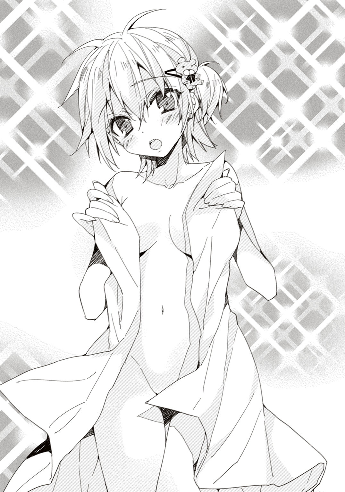
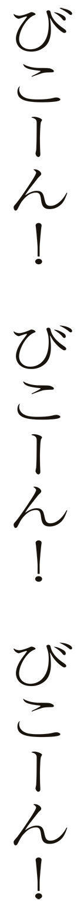

| マルクスちゃん入門 | |
| おかゆまさき | |

この本は縦書きでレイアウトされています。
また、ご覧になる機種により、表示の差が認められることがあります。
 ダッシュエックス文庫DIGITAL
ダッシュエックス文庫DIGITAL
マルクスちゃん入門
おかゆまさき
規模で言うなら数万枚、
「き、来た......っ!!」
一斉に崩壊きたすステンドグラスにも似た爆音、きらびやかな波動が俺を打つ！
「来た来た来た......、マジで来たぁ！」
エンドレスの雷鳴、足裏まで震わせるような残響、真っ只中で俺は叫ぶ。
「よぉしッ！ やればできるもんだな俺ぇッ!!」
召喚の儀式って、ホント神経使うわぁ......！
「過去と未来を貫く太流より、召喚の命に応じて参上いたしました。我が名はフローレンス・ナイチンゲール。愛と献身がモットーであります」
固定されてなかった周囲の物をめちゃめちゃに吹き飛ばしながら、俺がアクリル絵の具で書き殴った召喚円に、願いを叶えるための使者が現れている！
「う、おぉぉぉお......!!」
彼女なら！ 愛の化身である彼女だったら、きっと、碧さんにも届くはずなのだ......！
「時節柄、一応言わせていただきます」
俺が必死になって喚び出した英雄の魂、美しい示現体はこちらに手を差し伸べ、
「問いましょう、あなたが私のマス」
「ほぎゃああああああああァァアッッ！」
「ナ、ナイチンゲールさぁぁぁああんん!?」
突如、召喚円の向こう側からフレームインして来た物体が、中央のナイチンゲールをくの字につきとばし、愛の聖女はそのまま召喚制御のための柱に激突！ 激しいスパークをまき散らしながらビリビリとフレームアウトォ......ッ!?
「ふええええっ!? ナ、ナイチンゲール消滅ぅぅぅッ!?」
「ぃやったぁぁあああああッ！ ついに！ ついに召喚されましたぁあ!!」
いまや中央にいるのは、さっき俺が喚び出した、ゴージャスとも言える白衣に身を包んだ聖女・ナイチンゲールとはまったくの別人。赤いど派手なタキシードバニー姿のスリムな娘が、大きな瞳をキラキラさせて......ッ！
「うっはー！ ここが『真確定現実』ですか!? テンション上がりまくりですぅッ!!」
さっきのナイチンゲールが美魔女だとするなら、この娘は一見しての美少女。
どうやら年齢も俺と同じくらいで、だからとっさに俺はうつむいて視線をそらしてしまう。
それでもなお、バニー少女の姿は、一瞬で強烈に俺の脳へと焼き付いて、
「広くていいお部屋ですねー」
「ま、まてぇー！ 勝手にその円からでてくるなーッ！ おいマジ、なにやってんだあぁぁあッ!!」
一瞬の隙を突き、赤いタキシードバニーは舞台の大階段よろしく、召喚ステージをスタスタ降り、金色のプレシャスをほとばしらせながら俺の目の前までやってくる!?
「どうもーっ！」
軽く構えを取るように、拳を突き出してくるバニー少女。
だが、一般庶民には知られない密室で行われるショーを彷彿とさせる異様な美に、俺は、どうしていいのかまったくわからない。『これが蠱惑的だ！』と断言するかのごとく、幼い体に張り付く真っ赤な燕尾服バニーなんて俺、生まれて初めて生バニー！
「......っは！」
と、ともかく、見る者をある特殊な方向へ不安定にさせる彼女は、よからぬことの先触れとしては特級の使者だった。
――本当は入っちゃいけない特別な地下ラボラトリー、早朝五時。
そういう意味では確かに、ここは誰にも知られていない密室で、俺の先代、先々代よりもカナリ昔から蒐集・作成された巨大な、もしくは微細な不思議グッズが放り込まれ続けたガラクタ空間だ。広さはだいたい学校の体育館ぐらいある。
だが、その中央の召喚円など無視無視で、
「なんでおまえ......平気な顔して出てこれるんだ......!?」
「ひゃーっ！ あなたが私の召喚主ですかっ!? いいですね、萌えます！ そして了解ですご主人っ！ お望み通り一緒に世界を革命し、科学的理性で全人類が人間性を回復させたユートピアを共に築き上げましょーうっ！」
「あ、ちがう！ 絶対に違うっ！ 喚んでない！ キミみたいな目が多重のハートでぐるぐるしたのは喚んでない！ 帰れ！ 元の世界に帰ってくれ！ っていうか戻せよ！ 俺の喚んだ博愛の天使ナイチンゲールをぉぉ......ッ！」
なんか怖くなった俺は得体の知れない派手なバニー娘を、召喚円の中に一生懸命押し戻す。お？ ギリギリ勝てるぞこれ！
「ちょ、ちょっと聞いてくださいーっ！ だってずるいんですナイチンゲールさんはー!!」
ステージ状の召喚円の真ん中まで戻され、俺による横四方固めを極められた紅のバニーガールは激しく藻搔きながら唸った。ムリムリ、この技からは逃げられないよ。
「聞いてくださいご主人っ！ 彼女はもうあのいかがわしい肩書きのおかげで、軽く二桁くらいはこの『真確定現実』に喚ばれてるんですよ!? こっちは一度も喚ばれないっていうのにです！」
「しかたないと思うけど......？」
「なんでですかーっ!? この身より現世に影響を与えた者などいないというのに......!!」
「っていうかおまえそもそも誰なんだ!? そんな恰好して、どうして俺の喚んだナイチンゲールを突き飛ばしたりした!!」
「憎い......」
「は......？」
「評価が自分よりもいい同僚が、憎いぃぃ......ッ！」
「なんだろう。もうキミ、名乗ったりしなくていいから、元の世界にお帰りよ」
「いやです名乗りますぅッ！ あきらめないで名乗らせてください！ それが一番ッ早いですから！ なのでお願いですから私の上からどいてください......っ！ あなた今、とんでもないことをしているんですよ!? こ、こうなったら、我が名はふにゃあああああッ!!」
「だからもうおまえが誰だとかはどうでもいいッ！ 知らない方がいい気もするし、俺の願いを叶えられるのは、あのナイチンゲールだけなんだよぉぉお!!」
召喚円の真ん中で、俺は赤いバニガへの対応を横四方から、吊り天井固めへと移行させた。ギブアップさせれば還ってくれるかもしれない！
「ま......まさか、どなたかが愛に飢えながら不治の病にでも!? でしたらなおさら、我が名の方が！ 絶対に効きます!! これは個人の感想なんかじゃなくて、圧倒的多数の意見ですぅぅぅッ!!」
人間テーブルの天板部分になりながら、不審な燕尾服バニーは主張するが、
「今このシチュでは俺個人の意見が絶対だと思いしれぇぇッ！ そもそもそういう病気とかじゃねえし今夜の俺の願望はッ!! こっちはな、病は病でも、こ、こ......『恋の病』で喚んでんだよぉおッ!!」
「ぷぷぷ！ 『恋の病』てっ!! 乙女かっ！」
「わ、笑うなぁッ！（ぎゅうううッ！）」
「うむぁああああああッすいませぇぇんッ!! で、ですが聞いてください！ こ、恋の病であろうが手足口病であろうが、それでも絶対にナイチンゲールよりも我が名です！」
「ほんとうか!? 無理矢理出て来たのにか......!?」
ほんのわずか俺の力が緩んだとみるや、楔とばかりに少女はひゅるると息を吸う。
「お願いします名乗らせてくださぁいッ！ それを聞けばご主人は必ず納得します！ 絶対にお買い得ですよ!! ね？ ねっ!? 今だけ！ 今だけのこのチャンスを、ぜひ！ お見逃しなく！」
「い......いいだろう、そこまで言うなら、名前だけは聞いておく」
「き、き、聞いて......驚いていただきますッ！」
縛めの技を解かれて、再び召喚円内部に両脚ついた奇妙な少女は、深紅のウサ耳とサイドにまとめた髪をなびかせ、強い眼差しで俺を叩く。
「我が名はカール・マルクス！ 歴史に名を轟かす大哲人にして真の革命者なりーッ！」
言うだけのことは、あった。
「なぁ......ッ!?」
言葉にはたぶん、魔力がある。彼女の名乗りに、荒れた地下室が鳴動、吠え猛るように空気が応えた。
「......カ、カール・マルクス......だと!?」
「ふふんっ、どうです？」
胸の前で腕を組み、全身からドヤ汁ほとばしらせる赤いバニー。
だが、
「おい！ カール・マルクスって、誰だ!? 知らん！」
「そんなぁあああああああああぁぁああああああぁぁぁぁぁ............ぁぁぁぁぁ......っ」
少女はそのままズドドドドと上空に打ち上がって行った。
「ご主人は、知らない人を魔法で召喚したらダメって誰にも教わらなかったんですかァ!?」
「だから俺、おまえは召喚してないんだって言ってんだろーが!!」
「この世のしくみを根底から喝破し、世界を変革するべく行動する唯一無二の哲学者！ その名もカール・マルクスですよ!? ご主人は、本当に私をご存じ、ない......？」
「そ、そもそも哲学者ってなんなんだよ。それ、なにかの役に立つのか!? 全然なにかの役に立つイメージが湧いてこないんだが!!」
「立ちます役にぃぃいッ!! 絶対！ 絶対この世に必要な存在ですからぁぁッ!! ぅぅうううううううう――！ うううううううああああっ―――んんッ！」
バニガ姿のまま、酷いトラウマを思い出してしまった患者のようにのたうち回るの、見ててかわいそう。
「とにかく俺の願い事には完全にだめなやつっぽいから元の場所に還ってもらっていいか？」
「ふぇぇぇぇっ！ ご主人に全人格を否定されて心が折れそうなんですけど、今からでも笑顔笑顔っ！ 笑顔でアピール遅くない！ ここまで圧迫くれてくるご主人に生意気なことを言ったら、もう二度と喚ばれないかもしれないですから！ もう召喚浪人はこりごり！ 召喚氷河期を乗り越えます！ これが最後のチャンスと思って堪えるんですマルクス!! だから、こんな時こそ笑わなきゃ......マルクスマイルで......」
「めっちゃ泣いてる......ッ!? この子、滂沱の涙を流しながら召喚円を拳で叩いてる！ もうさっきから見てらんない！」
「だめですご主人見てくださいっ！ あなたにはその責任とギムがあります！ そもそもあのナイチンゲールには、ここだけの話ですが、とんでもない秘密があるんですよ!? 聞けば納得！ こうするのが一番よかったんです！」
「な、なにっ？」
鼻を啜り涙べたべたなのに無理矢理な笑顔という少女に、俺は眉をひそめる。偉人にゴシップはつきものだが......
「彼女、ナイチンゲールは、ああ見えて......史実！ ブルジョア階級の出身なんです！ 貧民を！ 労働者階級を見下してるに決まってます!! すごい搾取してますよ実際！」
「ひがみじゃねえかただの！ 金持ちなのに貧しいものに奉仕してんだから余計に聖女だろうがよ!!」
俺は聖女ナイチンゲールが跡形もなく霧散してしまった付近の空気を搔き混ぜる。どうすんだこれ、いっぱい吸ってナイチンゲール成分を体内に取り込めばいいのか。
「じゃあ......なんでご主人は、マルクスのことを喚んだんですか？」
「だから俺は喚んでないって言ってるよな!? そろそろわかれ？ 理解しよう！ だ、だいいち、なんなんだよ！ そ......その、ふざけた恰好はっ！ それが哲学者なのか？」
「っ!?」
びくっと震え、その瞬間、とっさに手を頭上に持ち上げた少女は、そこに二本おっ立っていたウサ耳に触れ、
「......ッ??」
続いて目の前、白い二の腕から指先、やや平らかな胸、腹、脚、全身を、瞳を見開きながら見回し、
「ぅ、うおわぁああああああああああああッ!? な、なんですかこれぇえッ！」
「なんで今まで気付かなかった？」
「か......かわいいいいっ!!」
「喜びの声わかりにくい！」
俺も改めて、マルクスを名乗る少女に見入っていた。
あきらかに日本人ではない魔的な美のイメージまとう少女の年の頃は、それでも十三～十四歳といったところ。
マゴにも衣装的にグレートな深紅のバニー衣装からのぞく白い腕や脚、首筋などは、あたかも最高級シリコンのようになめらかで柔らかく、それでいて見るからに活力と生命力に満ちている。
だがやはり、哲学者を自称するバニー娘の身体の線は、どう見ても平均以上に細めで、これ、きれいめに強調された『男の娘』とか言われた方が、かえってレア度上がるんじゃないだろうかというくらいに、全体的にいわゆる『少年の美』へと傾きがちだった。
サイドポニーからうねるように腰まで伸びている鮮烈なまでに黒紫の髪もあいまって、なんというか、『あっち側』感がものすごくある。
「って、さっきから、なにをしているんですか？ ご主人......」
「ちょっとスマホで、実際のカール・マルクスを画像検索してみてるんだが......」
「や、やめてくださいぃぃぃいいッ！ はず、恥ずかしいっ！ マルクス恥ずかしいですッ！」
「おまえって、いつもこの恰好だったんだな......」
「へぇッ!? そ、そんな、わ、わっ！ あれぇっ!?」
俺の腕から奪うようにスマホの画面、画像検索のサムネイルに目を走らせるバニーガールは、
「な、なんですかこれ......ッ！ こ、これは、ちがいます！ マルクスいつもこんな、気合いの入った恰好してるわけないじゃないですか！ わたし、哲学者ですよ!?」
「だから、哲学者......なんだろ？」
「ご主人はさっきから哲学者にすごい偏見がありませんか!? ちがいます！ これは、ご主人がこういう形でわたしを喚び出したせいですっ！ ......これが！ いいですか？ これが『真確定現実』の！ 現実を書き換える強力な『魔法』の恐ろしさなんです!! 私がご主人によって、こんな恰好でここに出現したせいで、因果が遡行して、過去が今に合わせて決定されたんです！」
「マジで？ それって、やばくない？」
だがバニー少女はなおも俺のスマホの画面と、いまだ激しいスパークを立ち昇らせ続ける召喚円を囲む鏡面加工の柱に映る自分を見比べ、戦慄していて、
「ん......？ いまだ激しいスパーク......？」
「しかも......この身、心が......、マルクスは、あなたをご主人だと、本当に心の底から思っているみたいなんですが、これ、どういうことですか!? 私、ご主人にお仕えしたくて、しかたないみたいなんですけど......!!」
「まあこれ、喚んだ相手と、そういうふうな『主従関係』を結ぶ召喚円だからな......」
「ひ、ひどくないですかそれっ！ こ、こんなの、私の主義に反します。なんだかおかしい気がずっとしていたんです！ なんたる失態......このマルクスが、こんな上下のヒエラルキーに甘んじるなんて......！ こんな『確定現実』、断じて認めませんっ！ も、戻してくださいご主人。私とあなたを、対等な立場にっ!!」
「い、いやまて、それよりこれ、この召喚円、なんかやばいんだって！ いったんここから外に出よう！ イヤな予感がするッ！ 変なスパーク出てるし！」
「は、はい......??」
マルクスを名乗るバニガが俺の視線を追いかけて、召喚円の真ん中で頭上見あげた瞬間だった。
「ぁあ......っ!?」
俺と少女は、スパーク炸裂させてる柱が突如曲がりくねる急激な変容と、目の眩まんばかりの怪光を目撃。
「ぶぐぅぅああああああああッッッ!?」
「はぎゃにゃぁぁぁぁあぁぱぱぱぱぱぱぱッッ!!!?」
同瞬、そこから溢れ出たエネルギーの乱流に巻き込まれ......！
「なん......これぇえええッ!!」
激震的な魔力のスパークだった。まるでたっぷりの水流で激しく洗う洗濯機で強烈に脱水されているようにめちゃくちゃにされる。そんな規格外の、この世ならざる暴乱によって五感や頭が朦朧としまくっていたのは俺だけではなさそうで、
「ご、ごしゅじぃぃんっ！ な、なんだか、なんだか私、へ、変ですぅぅッ!!」
俺とバニー娘はいつのまにやら手を取り合い、そこから吹き飛ばされまいと、突然の雪崩に遭遇したバディのように抱き合う。
「ほぉーッ！ なんか......マジで、やばいィィ......ッ!! こ、こん、ちくしょおおがぁあッ」
俺はダメ元、やけくそ気味に右手振り上げ、鞭のようにのたうつ太いスパークの束を思いっきりつかみ、
「どッ」
腰から腕を振るい、スパークと繫がっていた柱ごと無理矢理力で引きちぎる......ッ！
「がぁああぁぁあああ......ッ!!」
バギィィンッ！ という交通事故のような音響、もっきり折れる召喚柱！
「......、......ッ」
やがて波が引くように、広い地下室は閉店時間を迎えたホームセンターのごとき闇に包まれる。
召喚装置の暴走は止まっていた。
「ふぅぅぅぅぅぅう......っ。......というか、こりゃ、壊れたな......」
「な......なにが、起こったんですか？ ご主人......」
俺もマルクスも息が荒かった。互いの身体からはまだ、細い魔力のスパークが散っている。
それを払うように肩を支え合い、ゆっくりと薄暗い天井を見あげれば、
「いや、よくわからないんだが......」
「はい......ご主人......」
静まりかえった地下室で、俺達二人は、ためらいがちに見つめ合う。
早朝、五時過ぎ。自宅地下の深くにある、立ち入り禁止、沈黙が包むラボラトリー。
「ふぅぅ......」
緊張につぐ緊張。放出されたアドレナリンによる反動で、俺の身体はどっと重い。
けれど、
「もう心配ない」
その倦怠感は、俺の腕の中にいるバニーガールの少女の温もりによって不思議な消え方をしている。そして彼女の温かさ、柔らかい息づかいに乗り、
「ご、ご主人......」
お互いに今、なにを考えているのかが、わかった。
少女と触れあう部分を通して、呼吸がシンクロしていくのだ。
「......マルクス」
少女の甘い息が、俺の首筋をなでる。俺とバニー娘は手の平を合わせ、いつのまにか指と指を絡ませている。
「不思議ですご主人。会ってまだ、五分も経っていないのに......」
マルクスの紫の瞳を伏せた。それはあまりにも自然なことだった。
俺は、ゆっくりと彼女の唇を――
「って待てぇぇぇぇぇええええッ!! なんだこれはぁぁああッッ!! 全然自然なことじゃねーし！ なにこのへんな雰囲気!!」
触れあう寸前、俺は少女の両肩を両手で固定、引きはがす!!
「はッ！ ......そ、それはこっちのセリフですご主人ッ!! 今、私に、ちゅ、ちゅ、ちゅーしようとしましたねご主人ッ！ 変態ッ！ 変態！ ど変態の所業ですよっ!?」
「いやっ！ ち、ちがう!! ちゅってしようとしたのはおまえだろッ!?」
「いいえ違います!! ご主人です!! ご、ご主人がマルクスに、ちゅーの率先しましたッ!!」
「落ち着け！ おかしい！ なんかおかしい！」
俺は頭をかきむしる。ハリウッド、もしくは薄い本でもない限り、出会ったばかりの男女二人が急にちゅーとかするわけない。
これは、この不可思議な状況は、
「〔魔法事故であります、マスター......〕」
「うおおッ!? お、俺が子供の頃に壊しちゃったはずの魔法人形が、しゃべったッ!?」
かすれたアンティークラジオのような響き。それは、壊滅的な地下ラボラトリーの床から俺を見あげていた。
「お、おまえが、今の......？」
ウグイスの羽を持つ、ヒトと鳥が合わさった、ハーピーのような人形が、そこにはあって、
「〔驚かせてしまい申し訳ありません。我が名はフローレンス・ナイチンゲール。気が付いたら、この人形の姿に〕」
「消えちゃったわけじゃ、なかったのか......!!」
この、ウグイスの羽を持つ妖精のようなハーピー人形は先代達からの形見の品の一部で、たしか小さいころに俺がいじり壊し、そおっとガラスの標本ケースに収納して、元通り壁に飾っておいたはずだったが......、この、混乱の中で......っ！
「お、おいマルクス謝れ！ ナイチンゲールさんに、今こそ謝れ！」
「く......っ、す、すいませんご主人、私は、確かに『イデア界』の果てまで、このブルジョワ女を突き飛ばしておいたはずなんですが......！」
「方向性が全然違うッ！ 俺にじゃねぇよ！ こんな姿になっちゃったナイチンゲールさんに謝罪しろって言ってんだよ！ お、おまえってやつは......っ！ いいから謝りなさい！」
「ほんぎゃあああああばばばばぁァァアンッッ！」
突如、マルクスが顔面と喉をかきむしり、正視に耐えない苦悶の表情を浮かべた。
「マ、マルクス......!?」
「〔なんなのでありますか？ その、人の前に出してはいけないレベルの間抜け面は......〕」
絶妙なまでの変顔続ける自称哲学者は、俺とナイチンゲールへと、さらに白目を剝いたまま、
「ドヤ顔してご主人に呼ばれたナイチンゲールが、私に突き飛ばされた時の顔です」
「〔............ッッ!!〕」
マルクスとナイチンゲール、両者の間に、景色ぐにゃぐにゃする殺気エリアが発生ッ！
「おッ、や、やめろぉぉッ！ 酔うッ！ 喧嘩はもとより、俺を巻き込んで風景をぐにゃぐにゃさせんな！ 気持ち悪い！」
瞬間、さらに溶けたムンクのようだった俺ごと空間が元に戻り、
「〔もうしわけありません、マスター。変態哲学者の胸のように薄っぺらい挑発に乗るところでありました〕」
「ブルジョアを駆逐してやりますぅッ!!」
人形サイズになってしまってはいたが、割合として胸の豊かな聖女に向かって襲いかかるバニーガールを、俺はとっさに羽交い締め。
「たのむナイチンゲール、わかるなら説明してくれ！ おまえの言う魔法事故ってさっきのスパークみたいなヤツだろ？ これ、なにが起こったんだ!?」
俺は最初に喚んだ聖女に懇願。盛大な魔法事故、俺にはまだ確信が抱けていない。けれど、ナイチンゲールならきっと、それを外部から見ていたはずで、
「〔今起こっている異変は、やはりこの故障した召喚魔法装置の影響によるものであります〕」
「......、しょうかん、そうち......」
とある発想が、俺脳に湧いて出現。召喚魔法を導く装置の故障。俺は思わず立ち上がり、
「まさかっ！」
もしくは「やはり！」という感触。
俺は、召喚の儀式が成功した直後、乱入してきたマルクスによって→突き飛ばされたナイチンゲールが→おでこを激突させた柱に手を触れる。
「こ、ここか!?」
めっこり凹んだそこは、
「〔はい。召喚された者との『主従関係』を司る魔法式に、狂いが出た模様であります。そしてそれは、我が名の深い影響がおよんでおります〕」
「おい、ウソだろ......これ......」
「ご、ご主人。......でしたら、い、今のご主人と私は、ど、どんな、関係......なんですか？」
バニー娘は召喚円の真ん中で、ぺたんとへたり込んだまま、俺を見あげて尋ね来る。俺とマルクス、本人同士わかりきってることであれ、改めて確かめずにはいられない！
「決まってる......。ここにあるのは、主従関係......」
「そ、それはわかってますっ！ でも、それだけじゃ......」
「ちょっとまて、俺も、頭ん中、整理してんだ」
「......ご、ご主人！」
俺は感覚、意識を集中させ、凝らし、
「いや、落ち着け......。俺とマルクスの『主従関係』の制約に加えて、もう一つ生まれた魔法によって縛られた関係性......。その象徴は、愛の聖女、ナイチンゲール。つまり......」
俺は、喉から絞り出す。
「純愛的な、『恋愛関係』か......ッ！」
「〔その通りであります、マスター。ピュアピュアにお互いを愛しく想い合う気持ちが、マスターと、この変態哲学者の間に生まれています〕」
「そ、それでかーッ！ それでさっきマルクス！ おまえと変な雰囲気に......ッ!! というか、さっきのあんま、ピュアなシチュじゃねーんだけどっ!!」
言いつつ俺は隣の少女、マルクスを見れてない。
「くッ！」
ドキドキしちゃって、ちゃんと見れないんだよぉぉぉーッ!! あ、あ......ああーだめだこれ！ 重症だァァ!!
「なあ、おい、これどうしてくれるんだ？ マルクスちゃんよぉ!! な、なんか言えよっ」
「......っ！」
それでもなんとか顔上げた俺と、マルクスの目が合った瞬間だった。
タキシードバニーの少女は、びくんっと顔を赤らめ、ぷいっと顔をそむけ、
「お、おまえ、マジで......っ！」
「な......なにがですかっ!? こ、こ、これは魔法の、魔法事故の、せいですからっ！ あと、ちゃんづけやめてくださいませんか!? わ、私は近代哲学を極め、世界変革を実際に起こした、い、偉人中の、偉人なん、ですか......ら、あ......あ、あぁああああああああ......ッッ!!」
「ま、まてぇ......っ！ マルクスどこへゆくぅぅううっ!!」
俺は地下室、突如駆け出すバニーガールの腕をつかみ、
「は、離してくださいっ！ この、へ......変態ご主人っ！ わ......私を、これからどうするつもりですかぁぁ......っ!?」
「いいから落ち着けっ！ わかってんのか？ そもそもの原因は、おまえだよなっ!? おまえがナイチンゲールを突き飛ばした時だよッ!? 突き飛ばされた彼女がここッ！ この柱に激突ッ！ その時に、ナイチンゲールの『愛の要素』がッ!! 魔力が！ 刻み込まれてスパークッ!! 『主従関係』を司る部分に加えて、強制的に『恋愛関係』まで俺とおまえに追加されちゃったんだよぉおおッ!!」
「そ、そんなのウソですぅぅぅっ！ やですやですっ!! こんな、『確定現実』ッ！ あ、あああ......っ。だ、だって、べ、べ、べつに、マルクスは、ご主人のことは、な、なんというか......ご主人という以上には、べつになにも、想ってなんか、い、いま......いま、せんしっ！ んんんん......っ!! くぅぅぅううっ！ これは、ちがい、ますからぁぁああ!!」
「お、おう......、なんだこれ、今のマルクスの言葉で、なんか俺、すっごい気持ちが凹むんだが......！ いや、まてぇぇっ！ これは、魔法によるアレなだけで......ッ！」
俺は奥歯を嚙み締め、自分のコメカミを押さえ、
「だ、だいたい俺には、碧さんっていう好きな人が......ちゃんと......いるんだぞ!? 俺はそのために、そもそも、ナイチンゲールさんを......っ」
「〔自分が不甲斐ないせいで。まことに申し訳ありません、マスター〕」
「ちがうんだ！ ナイチンゲールは......悪くないっ！ 悪いのはコイツだから！ 悪いのはこの、よくわからんカール・マルクスってヤツだからッ！」
「だ、だってっ！ だってっ、だれも、だれもマルクスのこと、喚び出して、くれなくてぇっ、なんか、今なら、行けるって、思っただけなんですぅ......っ！ だ、だめなんですか!? マルクスはやっぱり、なにかしちゃいけないんですか？ なんにもしなかったほうが、よかったんですかぁぁぁ......っ!?」
「な、泣くなぁっ！ 泣きたいのは、俺なんだよぉ......っ!?」
「うぐっ、うぅっ......ふぅぶぶぶぶぶぶぶぶっ」
「いや、でも、す......すまん......、ちょっと、強く、言い過ぎた」
感情の変化に追いついていけないのだろう。横隔膜を痙攣させて、身を震わせるバニー少女の肩肌に、俺はそっと、手を置いて、
「確かに、俺の召喚魔法も、よくなかったかもしれん。おまえも突然のことで、混乱してるだろうし......」
マルクスの潤んだ瞳が、炙るように俺の胸の安定を奪う。これは罪悪感なのか？ コイツが悪い奴じゃないってことは、わかっている。
「そ......そうです、元はと言えば、ご主人がそんな不純な願いで、魔法を使う、から......」
互いに見つめ合い、夢の中で二人、完全な自由を手に入れるかのように瞳を閉じ合い、それから――
「だから待てぇぇええええええええええッ!! ちがうからっ！ なんだこれ！ 魔法事故の結果とはいえ雑だろ！ 決して自由意志じゃないとしても、なにこの変なラブシーン！ いらない！ こういうのいらないんだよぉぉおおっ!!」
「は......はず、恥ずかしいですぅ！ マルクスも超恥ずかしいです、なんなんですかこれぇ......！」
「〔状況は深刻であります〕」
「ナイチンゲールも見てないで声かけて止めてッ!? それよりコレ、あなたの能力でどうにかならないの!?」
「〔実は自分も、色々試してはみているのですが、この身体になったことで、著しく力が衰えているようなのであります。お力になれず、もうしわけありません〕」
「うぐぅっ......な、なんてことを......なんてことしてくれんだよ、マルクスゥゥ！」
「それは、こっちのセリフですっ......」
よろろと、バニー姿の従魔が、立ち上がる。
「我が名は、カール・マルクス」
瞬間、ドンっと空間が、バニー従魔を中心に高性能スピーカーを作動させたように波打った。俺は仰け反りながら、己の認識の一部を修正していた。
確かに、言葉には魔力がある。
だが、ある種の名前には、それ以上の魔法がある......！
「今度こそ、私は人類を変えてみせます。幸せの定義は変革されなければなりません！ そのために私は『真確定現実』にやってきました」
「お、おいっ、なにやってんだ!? マルクス！」
その時の変化に、俺は何より、この広い地下室が......そして、この上にある俺の家がどうなってしまうのかが心配になった。
「うぉおおおおッ!? ちょっとマルクス、なんだそれっ！」
「〔マスター、これは非常に危険であります！ この変態偉人に、これほどまでの力があったとは......〕」
ナイチンゲールの言葉によって、俺も自分の感じるものが、そして目の前にあるモノが本当に洒落になってないことに確信を持つ。
それくらいの魔力だったのだ。
俺の今までの記憶にない......これまでの経験では計り知れない、おぞましいまでのパワーの凝縮が、彼女の両手の中に発生していた。
「どうやら......」
奇矯なバニー少女の声は、再び暴風雨のように乱れ始めた密閉空間にあって明瞭。
「喚び出された偉人......聖人......英雄は......わかります。世界に影響力を与えた偉業に応じて、力をもっているようです......っ」
俺の直感。ここまでの力があったなら、召喚の際に生まれる主従の軛すら破壊して、少女はこの世界で独り立ちだってできるだろうと......！
「ま、待てぇぇっ!!」
「世界のためなのですっ！」
「破ァッ！」みたいな声と『ぽぉぴぃーッ』という射出音と共に、カール・マルクスから俺に放たれたのは、裂けた空間からあふれ出した血を凝縮したかのような深紅の砲撃だった。
「だぁおッッ！」
俺はその一撃を、両手を揃えて頭上へかざしたままオーバーハンド・レシーブッ！
地下室の天井めがけ弾き飛ばした。
「お、おい待て......、サランラップの上に熱した十円玉落としたみたいに天井貫通してったぞ......」
細い井戸の底から見あげるように、小さな丸い空を見あげていた俺へと、
「......そ、そんな......」
届く赤い燕尾服バニーの声は、震えにまみれていた。
「この『マルクス共産砲』を......い、いとも......、いとも、簡単にッ!? ご、ご主人は、いったいっ......」
ぺたんと床に、へたり込む。惚けたような視線は、俺から離れない。
「......それよりもだ、マルクス......」
俺は痺れた腕を振るい、そのまま彼女の名を呼んだ。
「は、はいっ、なんでしょうご主人っ！ ......あ、あれっ？ か、からだが、勝手に......まさか、もしかして私は、今ので、このご主人に、心と体の底から屈服しているんですか......ッ!?」
「その、なんだ......俺が喚び出したのは、おまえじゃないんだが......こうなったら、しかたない」
召喚円に佇み、頰をうす桃色に上気させる少女を真っ直ぐには見れないまま、俺は告げた。
「俺の願い、おまえに従魔として叶えてもらうぞ、マルクスちゃん!!」
【抜粋】
マルクスちゃん入門 用語集①
残りは巻末に！
（３）真確定現実
現実は、目の前の現象を認識する人間の数だけ種類があるので、本当はぜんぜん確定的なものじゃないんだけど「まあ、だいたいこんなことが起こってるってことで！」という、みんなの信頼関係で現実は確定されてゆく（なので「みんな」の中に入れないと、現実が違っちゃう）。
『真確定現実』とは、それを超越して、「今！ 今！ 〈神〉の視点で確認されて現象が起こり続けている、後戻りできない事象平面！」のことを指す。
落とした百円が歩道の側溝に消えて行く瞬間や、隠しておいたはずの薄い本が母の手により机の上に置かれていた時に、我々は『真確定現実』を実感できる。
ちなみに、映画や漫画や小説も、真ではないにしても『確定現実』のひとつ。
（10）イデア界
たとえば本当にマジで完璧に、面積が10平方センチメートルの四角形を描いたのだとしても、無限に伸ばした小数点レベルでは結局、その面積は10平方センチからずれてしまうため、そういうものを現実世界で描くことはできない。
けど、それが仮にあるとするなら......いや、あるはずだ！ だって本物の『面積が10平方センチメートルの四角形』は想像できてるじゃん！ と考えたのが、昔の偉いひと、プラトンさん。彼が思いついたのが『イデア界』という概念で、『この世にあるものの本物』がある世界のことをいう。
さらに一歩進めると、なにかを思いついたり、真相を思いついたりするとき、人はこの『イデア界』にあるものを、思い出しているにすぎないという考え方になる。これがアイディアの語源。
時間のある時に、『イデア界』にいる本当の自分や家族、友達がどんな人物なのか想像してみよう。
（12）ぽぉぴぃーッ
戦闘民族がエネルギー光弾を撃ち出すときの擬音を、このようなオノマトペとしてテキスト化されたものをネットで見た時には、そのセンスと才能に愕然とした。素直にすごい。けど、そのＳＥを聞きながらこの『ぽぉぴぃーッ』を聞かないと、いまいちよくわからないと思われるのが悔やまれる。
（13）マルクス共産砲
カール・マルクスの必殺技の一つ。食らった相手は餓死して死ぬ。
「ご......ごしゅじーん？ 生きてますか、ごしゅじーん？」
「ぅぐっ......」
こじ開ける目蓋。窓辺から降るまぶしい朝陽にまず目をやられ、その中、従魔のちょい心配げな顔が逆さまに。
「マルクス、か......痛つつつ、いったい......なにが起こった？」
自宅一階、キッチン対面リビング片隅。なぜか床にて仰向け状態で転がっていた俺の小声はひび割れている。
隙間の多いレトロチックなメイド衣装、スカートごと膝を抱えてしゃがみ込み、うつむき加減でおずおず俺を見つめ続ける少女、マルクスに対する違和感は、あいも変わらずバリバリだった。なんだか天井に貼った覚えのないアニメかアイドルのポスターにでも見下ろされている気分がする。
しかたない。
こいつを喚んでしまってからまだ、二時間ぐらいしか経ってないんだしなぁ......！
「は、はい、ええとですね、私の見た限りを、正確に、お伝えいたしますと」
そそっと俺よりワンテンポ早く立ち上がり、二歩ほど距離を取る従魔は、指先に髪をくるくる巻き付けながら、
「ご主人は、片手のそのスマホ......？ をいじりながら全身を使って妙な躍動感を演出なさってですね、スキップした片足がティッシュ箱を踏んづけスライドで、そのままテーブルの角に側頭部を打ち鳴らして床に転がりました」
「そ、そうだった......！ コレだマルクス！ コレを、見てくれ......ッ！」
頭を振って立ち上がる俺は、椅子の背もたれに手をかけ、無意識レベルで死守してたスマホを従魔娘へ決断的に突きつける。
「......、えっと、これって、つまり、例の......ご主人が片想いしてる、アオイさんとの、やりとりです、か......？」
「そう！ お、俺の......！ 俺のクラスメイトの、碧さん......ッ！ っッはぁ！ 胸の高鳴り止まらない！ 碧さん、俺に、学校に来て欲しいんだってッ!!」
ずっとてっぺんまで昇り詰めてた俺の血潮が、さらにとぷんっとエクストリーム。俺はマルクスから返してもらったスマホの画面を、慎重タップで明るさ保ち、コォォォっと息吹めいた呼気、朝の空気を取り込んで、気分を落ち着けなきゃならない。
「あー、そーですかー......」
「確かに俺は、碧さんとは学校でしゃべったりしなくて、......というか、目も合わせられないくらいなんだけど、ＬＩＮＥでは......っ、ＬＩＮＥだけなら、やり取りできるんだ！ す、すごくない？」
「すごいんじゃ、ないですか......？」
「い、いや、おまえのその疑問も、わかるよ？」
俺はマルクスが向けてくる不信の視線をさえぎるように、手の平をまっすぐかざして、
「目も合わせられないばかりか、俺は碧さんの方向へ自分の体の向きさえ変えられないのに、どうやって俺が碧さんのＬＩＮＥのＩＤを知ったかってことだよな!?」
ＬＩＮＥ映るスマホを胸元に握り込む。繫がっているよと、想いを込めて！
「あれはそう、二週間前！ 高校二年の新クラス！ 始業式の日に、隣の席になった碧さんが、俺になぜかＩＤ交換を持ちかけてきて......」
思い出す。まるで去年、一学年時からまるまるその日まで俺とクラスメイトで友達だったように気軽、彼女にためらいなんてなかった。碧さんは俺のスマホをひょいっと取り上げ、いじくりまくった。
「学校では、あんまり話せたりしないんだけど、こっちで結構、話し掛けてきてくれたりするんだ、碧さんは......っ!!」
「ふぅぅぅううん......、だから、なんなんですかぁ？」
「......え？ マルクス？」
いつの間にか目の前の少女、従魔の雰囲気が一変していた。ほっぺを心なしか膨らませ、俺の話を聞きながら胸の前、ずっと両腕を組んでたレトロメイドは、
「そんなの、私には、全、然、関、係、ないコトなんですけど......？」
俺の肩先、指先でずんずん突っつきながら、ぎりりと睨み付けてくる。
「確かにご主人は、その、アオイさんっていう方との仲を進展......させたくて？ 私のような強力な従魔を呼び出したっていうのは、理解しています。......まあ、それ自体がどうかとは思いますが？ ひとまず置くとしてですッ！ それよりも、そんなアオイさんのやりとりを今、この私に見せつけることについて、いったいご主人にはどんな意味が............って、待ってくださいご主人。私との会話中に、なにを始めたんですか......!?」
マルクスは服の裾をぐいぐい引っ張ってまで、イスに座っていた俺を振り向かせた。
「なにって、急いで宿題しているんだが？」
「宿題......って、まさか......学校に、いく気なんですかッ!?」
ダイニングテーブルにノートや教科書を広げ、ペンをカリカリ走らせ始めた俺の真向かい、マルクスは勢いよく両手をついて、
「それ、本気で言ってますかご主人！ こっちが、こんなにも大変なことになってるっていうのにですよ!? だってご主人、今日は学校には行かずに、まずはこの問題を......魔法事故の影響をどうにかするって、さっき、地下のラボで......言ってたじゃないですかぁ......ッ！」
「悪い、こっちが最優先。碧さんが俺を待っている」
「......ッ！ な、ご、ごしゅじぃぃいいんっ!?」
「ぬおぉおッ！ 邪魔だ！ 邪魔だマルクス！」
俺とノートの隙間に無理矢理入り込んでくる勢い、身を乗り出してくるマルクスを、俺は頑張って押しのけようとするが、
「約束っ！ 約束です！ 約束と信頼は、なにやりも大切なものですよご主人っ！ 約束を守らないなんて、そんなの是か非かと言ったら絶対的に非ッ！ しかもご主人！ ......私、ご主人のために朝ご飯作ったの、忘れてないですよね？ まさかですよね!? ご主人が命じたことなんですから、責任もって、......た、食べてくださいっ！ 早く！」
俺からノートをひったくったレトロメイドの自称哲学者は、そのままダイニングテーブルに並べられている主役達を指さして、
「冷めちゃいます！」
「わ、わかったから」
マルクスの指摘ももっともで、食えるときに食っておかないと、これからイザって時にどうにもならない気は、俺にもしてる。
「いただきます」
俺はシャーペンを箸に持ち替え、テーブルの上の皿をたぐって目玉焼きとベーコンを崩す。
「ご主人の貧相な冷蔵庫の中味で、ほとんどアドリブで、急いで作ったんですから、美味しくなくても我慢してください？ 材料も片寄ってますし！ どうしても食べたくなかったら、残したって、いいんですから」
ごちゃごちゃと早口でうるさいマルクスだが、
「いや......前に俺が自分で作ったのより、だいぶ美味いが」
白飯がよそわれた茶碗片手に、俺は感心している。
「ほ、ほんとですかっ!?」
「......なにか、したのか？」
目玉焼きとベーコン。あと、炒めたミックスベジタブルとトマトを切ったのが、無駄に美味い気がする。
「い、いえっ？ 特に、ふ、ふつーですけど」
「そうか？ まあいいが......」
「こういうのも、ありますけど」
マルクスは、卵スープの入ったカップを、俺に向かって寄せて来る。
「いただく」
手を伸ばして、カップの中味をすすってみる。あったかくていい味が出てる。
「ゆでたまごも、あります」
「卵ばかりだが、んー、なぜかうまい」
マヨネーズをぶっかけて、ほぼマヨ味になってしまったが、白身はぷりぷりしてて、黄身はいい具合に半熟。そしてマルクスは、俺を見下ろす位置であいかわらず腕を組んだまま、そっぽを向いてフゥゥフゥと鼻息がうるさい。
「いやあ、ひさびさに、うまかったんだが......サンキューマルクス」
あらかた平らげ、俺は牛乳を飲み干す。
「ご、ご主人が、作れって言ったから、そうしたまでです」
従魔娘はさっさと皿を重ねて、キッチンに持って行ってしまう。
その後ろ姿が、ふと目に入り、
「ん......マルクス？ この部屋、そんなに暑いか？ 首筋まで赤い気がするんだが......、エアコン、付けてもいいぞ？」
「い、いいですから気にしないでいいですからッ！ ちがいますから!!」
けたたましい食器の音色。レトロメイドの哲学少女はくるりとこちらを振り返る。
「それよりご主人っ！ こ、これでご主人は、家でじっくり、」
腕まくりした両手は腰へ。そして視線は斜め上、天井の片隅を見あげたマルクスに、俺は頷いて、
「ああ、まだ学校間に合うな。よし、歯ぁ磨いたら」
「だ、だめですーッ！ だから、なにを言ってるんですかご主人!? ご......ご主人は今日、ずっと一緒に、いてくれるって......っ！」
「......ははーん、マルクス、さてはおまえ」
俺は立ち上がりながら宿題ノートに走らせていたペンの尻を、くるくると従魔に向け、
「ヤキモチ......かな？」
「ちぃ......がッ！」
ぼんっと空気砲で撃ち出されたかのように、マルクスは仰け反り飛び退いて、
「ち、ちがいますっ！ キモイですご主人っ！」
「キモ......カワイイかな？」
「カワイイは言ってません！ ご主人はお腹いっぱいになって、眠くなってるんじゃないですか!? 昨日から寝てないですよね!? だいぶテンションおかしいです！ だ......だいたい、なんですか、これはっ！」
「あ、い、いつの間にっ!!」
急接近してきたマルクスは、テーブルにあったスマホを高く持ち上げ、画面を眺めるようにして、
「ご主人のアオイさんに対する、この返信って、あまりにもそっけなくありませんか？ これで行く必要ありますか？ 学校に!!」
「し、しかたないだろっ!? だって、なんて言っていいか、わかんないし......！ シャイなんだよ俺！ シャイニングなの！」
「そもそもこーゆーの、マルクス、感心しません」
「なにっ？」
手帳型ケースの俺のスマホをひらひらさせていたレトロメイドは、再びテーブルに身を乗り出して、
「アオイさんがどんな方か存じませんが、理性的に判断してみた場合ですね、これ、ご主人はいいように利用されているだけなんじゃないですか？ ご主人の従魔として、そしてこの世界をユートピアへと導く哲学者として、私は私のご主人が誰かに利用されるなんて許せません」
「そんなことはない！」
「い、言い切りますね......」
たじっと、マルクスは口元を腕で隠すように体勢を変える。碧さんを知らないこいつには言っておかなければならない。
「いいか？ 覚えておけ」
今度は俺の番だった。従魔娘からスマホをひったくり、呼吸を整え、マルクスを見据える。
「碧さんは、まじで、頭が、よくないんだ......！」
「......は、はい？」
「はっきり言って、アホの子なんだよ碧さんは！ だから、人を利用するとか、そういうのじゃなくて、」
もう一度俺は、ＬＩＮＥの画面を確認しながら、
「これは普通に切実なＳＯＳなんだよぉっ！ 碧さんが今、あぶない！」
こうしちゃいられない。俺は文具を再装備！ 俺もやってなかった宿題を終わらせよう！ ぅおおおっ！ 待ってて碧さぁぁん！ 俺は役に立ちます。
「で、でも、だったら、それなのに学校でアオイさんと会話がないなんて、そんなの不自然すぎです！ 人間関係で言えば、ごく標準的な疎外状態じゃないですか！」
「だからそれをなんとかしたくて、俺は魔法に......ッ！ 最終手段に頼ったってわけ！ そこはわかって？ 理解しよう！ おまえがヤキモチ焼いちゃう気持ちも十分わかるが！」
「そ、それですけどっ！」
「ど、どれ......？」
「あ......あんなことが、ありましたけど、私、ご主人のことを、す......好き、だったりとか、そういうの、ないんですので！ わかりますよね!?」
腰をくの字に曲げて折り、俺を押し飛ばすかのごとく両手を突き出すという拒絶ポーズで、マルクスは断言してきた。
「百歩譲って、『主従関係』は我慢いたしましょう。この『真確定現実』に留まるには、必要な代償ですから。......しかし、もう一方の関係性には納得いたしかねます。事故なんです、事故。いくらご主人でも、そこはわきまえてもらわないと困りますから......。ちょーしに、乗らないでください！」
「は、はぁ......」
「そ......、それよりご主人こそっ」
打って変わって小さい声だった。思わず、ん？ とマルクスへ耳を寄せるよう近づけば、
「......私のこと、どうなんですか......？」
言葉にこもった温度と湿度が、俺まで届く。ためらいは、一瞬、
「し、しかたねえだろ。意識、しちゃうのは」
隠しごとをしていた後ろめたさを吐き出すように、俺は言い切る。
「......えっ？ ご、ご主人っ？」
俺は、鼻と口で交互に息をするような混乱を鎮めながら、
「あれだけの魔法事故で、俺の中の碧さんへの想いが消えてねえコトだけが救いだよ」
「と、......いうことは、ご主人は」
「だから、しかたねーって言ってんだろっ！ 朝飯も美味かったし......おまえに対する、こういう気持ちは。......どうにも、誠実じゃない気がして、イライラはするけど、......自業自得でしょうがねぇと考えてる。正直、おまえのことはすごく気になる。......でも、俺だって、それだけだから」
正直、俺は心の中を整理できていなかった。混乱だって相当してる。
でもこれは、自分で蒔いたタネでもあるのだ。
「......」
俺は黙ったままのマルクスをチラ見する。と、
「おいどうしたマルクス、なんか、また真っ赤だぞ!? 部屋が暑いかやっぱり、まだ春だが！」
「こ、これはちがいますっ！」
耳まで異様に濃い色合いに染め上げた従魔娘はテーブルに手を付いて、瞳まで潤ませ始めていた。
「というかおまえ、そんなにこの現状がイヤか......？ まあしょうがねぇけど......、いや、まて。それにしちゃおまえ、様子が変じゃねえか......？ まさか本当は、あの召喚魔法の、別の副作用が出てるんじゃないだろうな。無理もねえ、そんくらいあれは未知過ぎだった！ おい、ちょっとおでこ、さわらせてみろ」
「なっ、い、今はっ......！」
伸ばした俺の手を迎撃するようにマルクスは反応。腕を振り回したまではいいのだが、とっさすぎたのか俺の手をスカり、彼女はよろめき、
「ふやぁっ！」
バランス取ろうと伸ばした右脚は見事、床にあったティッシュボックスをボクンと踏み抜く！
「おいマルクスっ！」
とっさに彼女は、藁をもつかむ勢いで俺の腕をがしっとつかみ、
「うおッ!?」
しかし、勢いよすぎて支えきれなかった俺まで、一緒に床へ転がって......！
「ふぁぐぅっっ!?」
咄嗟のこと。もんどり打ちながら、俺はマルクスをたぐって半回転。背中から床に叩きつけられる。
「だ、大丈夫か？」
「は......はい、ご主人......」
俺が下、マルクスが上だった。かばい抱き合う形で、二人は重なっていた。
従魔娘の小さな顔が、目の前に。
「痛く、なかったか？」
「ご主人が、私をかばってくれましたから......」
室内にはまだマルクスの作ってくれた朝飯の匂いが残っている。わずか二時間前の出来事で、俺の世界の全てが変わってしまっていた。
「さっきの礼、できてなかったな、マルクス」
「このタイミングで、......ですか？」
互い抱き合う両腕に、さらにこもる力、
「〔解析完了であります、マスター〕」
「ッくぅおッ!?」
とっさに目を開けたことで、俺は自分が目蓋を閉じていたことを知る......ッ！
眼前には、マルクスと俺に挟まるようにして、ジト目の小鳥みたいなハーピーが両手を広げて、出現していて、
「うおおぉぉおおおッ!?」
「な......なにやってるんですかご主人んんッ!!」
「だ、だからッ！ なんっなんだよっこれはぁぁああッ!!」
俺はとっさにマルクスの両肩つかんで、引き離してから立ち上がり、
「ナイチンゲールがガードしてくれなかったら、今、完全に唇と唇がくっついてたところだぞ！ 俺のファーストちゅーが！ ファーストちゅーが!!」
「も、もう信じられませんっ！ 変態......っ！ ごしゅじんのだいへんたいっ!! そんなに私のくちびるを......ご主人は奪いたいと......ッ！」
「ばか！ 今のもそっちからじゃねえかっ！ マジで魔法って、怖いわッ!!」
ばくばくする心臓を押さえ鎮めて、俺とマルクスはお互い距離を取る。
「〔解析完了であります、マスター〕」
「ああすまんっ！ ナイチンゲール！」
八分の一フィギュアのようになってしまった愛の聖女は、事故が起こったあの地下ラボで、あれからずっと暴走してしまった魔法の解析作業を買って出てくれていたのだ。
「で、どうだったんだ？ この魔法事故の解除方法は、わかったのか？」
「〔マスター、その前に紅茶を一杯、いただけないでしょうか〕」
「す、すまん！ そうだな。今いれるから、とりあえず、休め！」
心なしか魔法人形にも疲れが見て取れた。テーブルの上、ナイチンゲールは妙に色っぽくコップの縁に腰掛け、羽の毛繕いを始める。
「まってくださいご主人！ 紅茶なら私がいれます！ そ、そもそも、ご主人を動かすなんて、これだからブルジョワジーはこの世から駆逐しなくてはならないんですッ！」
使い勝手がわからないなりにキッチンをぱかぱかと細かく立ち回るマルクスは、ナイチンゲールに対する攻撃的な不機嫌さを隠そうともしない。
「〔問題を起こすのは、いつでも声が大きい者達であります〕」
「ぐ、ぐぅっ......！ ご、ご主人っ！」
その見えない拳を華麗に受け流すナイチンゲール。地下ラボで拾ったらしい古いスプーンをステッキ代わり小脇に抱えた半人半小鳥人形の前に、マルクスは零れないぎりぎりの乱暴さでティーカップを置いた。なんでこいつら、こんなに仲が悪いんだ......。
というかナイチンゲール、人形なのに紅茶飲めるのか？
「飲んでる......！」
磨いたスプーンで、紅い液体を器用に口元に運ぶナイチンゲールをひとしきり俺は眺める。
「〔ふぅ......。では、解析の結果を報告するであります〕」
「頼む！」
俺も、マルクスが入れてくれた紅茶をテーブルに戻し、姿勢を少しだけ正す。
「〔事故解析の結果、やはりお二人の間には『主従関係』と『恋愛関係』が両方、働いているようであります〕」
「間違いじゃなかったか......」
「〔この辺りは、さきほどお互いに、重なり合うようにして体感し合っていたみたいでありますので、疑いの余地はなかったかと〕」
「............っ！ ご主人が！ アレは完全に、ご主人が......っっ！」
マルクスが小声で地団駄を踏んでいるのを、俺は視界の隅にとらえながら、
「だがナイチンゲール。それで実際、色々わかったんだが......。俺とマルクスさえ、きちんと気を付けていさえすれば......だ。この状態、別に問題はないと思う」
「〔マジでありますか？ さきほどの、二人重なり合って愛を囁き合っていた、あれで？〕」
「もうない！ もう......大丈夫!!」
俺はぐるっと両腕を回してこぶしを握り込み、ファイティングポーズを取りながら確信してみる。
「『恋愛関係』っていったところで、こうやってなんとか抵抗できるんだから大丈夫だろ。確かにやっかいはやっかいだが、致命的ってわけじゃない。まあ、これがもし、完全洗脳の魔法とかだったらアウトだったがな」
俺は軽い感じで笑ってみせるが、
「〔そうは言ってられないのであります〕」
「......は？」
「〔この事故によって発生した魔法は、どうやら強力な進行性の累積魔法のようで、徐々に効力が増してくるのであります、マスター〕」
ナイチンゲールの言葉に、部屋の空気が変わった気がした。
ふて腐れたようにソファーに座っていたマルクス。立ち尽くす俺。テーブルの上のナイチンゲールが作る三角形が織りなすエリアが、にわかに緊張感を増していく。
「進行性......？ 徐々に、効力を、増す......？」
「〔三日であります〕」
妖鳥人形が、細くて小さい指を三本立てる。
「〔三日後にはマスターと、あの変態哲学者の二人は、完全な両想いになり、変わることのない一途な愛を永遠に育むことになるのであります。それこそ、完全洗脳のように〕」
「ま、マジで......？」
「〔そしてこれは、確定していることでは、ないのでありますが〕」
「な、なに？」
「〔完全に魔法が効果を現した場合、お二人の精神と理性のタガが外れてしまうのであります。マスターと変態哲学者は、お互い、あまりの愛しさに我を忘れ、寝食を忘れたかのように相手を求め続け、力尽き命果てるまで、愛の営みを続けることになります〕」
......は？
「力尽き、命果てるまで......!?」
「し......しちゃうって、ことですか......!?」
「〔そういうことであります〕」
「ど、どういうことだソレはぁぁあああああッ!? それもうほとんど呪いじゃねえかっ！」
「〔魔法の強力さは、この愛の使徒フローレンス・ナイチンゲールが保証するであります。おそらく、自分の魔力は、すべてこの魔法一点、お二人のみに注がれたようであります〕」
「......ひとつ、訊きたいんだが」
やけくそになるわけにはいかなかった。俺は混乱の中から、離しちゃならない核をつかむ。
「そうなった場合、俺の、片想い相手......、碧さんへの、この気持ちは？」
「〔残念ながら、一滴も〕」
「......まいった......」
ダイニングの椅子に腰掛け、背もたれに仰け反る。視界の端で、マルクスも口をぱくぱくさせている。
「〔マスター。腕を出すであります〕」
「はぁ......？」
ショックで呆けた俺の腕に、ナイチンゲールがなにかしている。
「〔指標にしかなりませんが、このブレスレットのハートが五つになったら、アウトであります〕」
「って、もう三つもハートついちゃってるんだがッ!!」
俺はそれを何度も擦ったり叩いたりして確かめる。四つ葉ならぬ五つ葉のクローバーを模したような印が、革製のブレスレットに刻まれ、それが今、三つ、色づいているぅッ!?
「ご、ご主人っ！ ほら！ 学校なんて行ってる暇なんかありません！ どうにかしないと、こ、こ、これは取り返しがつきませんよっ!? 私、力尽きてるまでご主人となんて......、や、やっ、やです......から......っ！」
身を護るようにソファーのクッションを抱きしめたクラシックメイド、マルクスは居ても立ってもというように何度も飛び跳ね、
「わ、わかってるッ！ 俺だってちょっと死ぬとか、それより碧さんへの気持ちも消し飛ぶっていうのは勘弁して欲しいッ！」
俺も天井を仰いで二度三度、その場をぐるぐる歩き回ってしまう。
「......なあ、ナイチンゲール。マルクスと俺の、この呪いのような恋愛関係は、どうやって解除すればいいんだ？ というか、できるのか!?」
「〔はい。このナイチンゲールならば、解呪の儀式は可能であります〕」
「さすがは愛と献身の聖女......！」
「〔今から全力で準備を始めれば、だいたい五日後には解呪可能かと〕」
「間に合ってないが！ 三日しかないんだが！」
「〔確かに今のままでは、時間内の解呪は不可能でありますが、一つだけ、方法が〕」
「マジで!? なに？ 俺はなんでもするぞ......っ！」
「私も！ 私もなんでもしますぅ!!」
転がるように、俺とマルクスはテーブルの上のナイチンゲールに殺到。
「〔その方法とは、マスターが、現在片想いしているマミヤ・アオイ氏と両想いになることであります〕」
「......ぉ、お、おおおっ？」
「〔そうすることにより、マスターと従魔に発生した『魔法事故による恋愛関係』を解除する大きな隙間が生まれ、遙かに短時間、それならばおよそ二分で魔法を解呪することが可能であります〕」
「それはそれで短くなりすぎな気がするが......ッ！ つ、つまり......それくらい俺と碧さんの愛の力は偉大で強力で、やっぱり、学校には行かなきゃってことだよマルクスッ！ そこで俺は、碧さんとの距離を一ミリでも近づける！」
俺はイスから立ち上がり、ダイニングテーブルの周りにちらばっていた学校道具を拾い集め、神速で登校準備を再開！
「で、でもご主人っ！ 今まで話し掛けられもしなかった相手と、どうやって距離を近づけるんですか!?」
「タイミングが、重要だとすれば」
俺はスポーツバッグに突っ込んでいた手を止め、
「......今日は絶対に、学校に行くべきだと思う」
吸い込まれるように思い出す。俺がバッグの中で手にしていたそれは、昨日、この二人の従魔を呼んでしまう前に、用意しておいたもの。
「一つ、考えがある。ひとまず俺に、任せてもらえないか......！」
【抜粋】
マルクスちゃん入門 用語集②
残りは巻末に！
（２）ファーストちゅー
当人にとって、初めて、外部の人間と唇を重ねるコト。一般に、十五歳の元服を迎える前に行われたものはカウントしないということになっている。でなければ、我々は父か母にすでに全てを奪われている。
初物信仰は古代からあり、なににつけても一番最初というものには、他にはないパワーが宿っていると信じられてきた。初夜権などは顕著な例であり、おおよそ、あらゆる『初めて』には人類の無意識が信じる魔法的なモノが秘められていると言ってよさそうだ。
であるから、買って来たばかりのフィギュアを、自分がお茶の用意をしている間に友人が勝手に箱から出して触っていた場合、その友人をぶん殴ってもよい。
（３）洗脳
もともとは一九五〇年代に中国大陸で生まれた言葉。
脳の中に蔓延る、間違った、汚れた、あるべきではない思考方法を文字通り洗い流し、もっと正しく、清く、本来あるべき考え方にしてさしあげることから、脳を洗い流す→洗脳と呼ばれるようになった。
もちろん汚れを洗い流しただけなのだから、その時、脳に残っているのは、人間として唯一、絶対に正しい思考方法である。決して、強烈にして巧妙ななにかによって、新たに植え付けたモノではなく、それは本来的に、そこにあったものに過ぎない。
洗脳という字義からして、思考に対する外部からの強制力は一切ないはずである。
よって、金髪ツインテールを前にしてしまうと、それがどんなアニメや漫画やラノベであっても、そのキャラを無条件に一押ししてしまうというこの行動は、絶対に正しい。
昼休み。校舎屋上を覆う空には、暖かな春霞がかかっている。
漠然と思う。あのモヤっぽいの、吸ったらきっと、桜味で甘い。
新学年、新学期。
俺の通う高校、市立・楓高等学校も、もちろん新入生を迎えていた。
入学式から二週間。部活勧誘などの恒例行事も佳境を迎えて、校舎にはまだまだ浮き足だった雰囲気が残っている。
日陰に入れば寒いくらいに涼しいが、俺がたたずむ屋上には、思わず眠たくなるような、それでいて清々しい陽差しが降り注いでいる。
そんな、確実に『なにか日和』な空の下、俺は、校舎屋上の物陰から碧さんを......想いを寄せるクラスメイトを、見ている。
「よし......」
予想通りに、昼休み。校舎屋上で碧さんを発見できた俺は、苦しくて痛いくらいに鼓動が激しい。
「俺には、できる......っ！」
朝、家を出るとき二人の従魔に自信を見せたのには、もちろん理由がある。
「おめでとう......碧さん......ッ！」
今日は、碧さんの、誕生日。
俺、知ってるの......！
四月生まれの盲点......ッ！
新学期ゴタゴタの中、今日ここまで、碧さんの周りでは彼女の誕生日の話題、あまり出ていなかった!! けれど確かに、彼女は一足先に十七歳になったのだ......！
「すごいなぁ......」
......で、俺の手には今、碧さんのための誕生日プレゼントが握られている。
もう遠い日のことのよう。昨日の夕方、帰り道、俺は駅ビルの雑貨ショップで手に入れたのだ。このキーチェーン付き、スポーツバッグにぶら下げられる、白いクマのぬいぐるみってヤツを......！
で、俺ちゃんと、これ渡そうと、持って来た！ しかもこの品、碧さんもがんばって手に入れようとしてたんだけど、レアすぎて見つけられなかったという逸品。
このプレゼントを渡すことができさえすれば、いつも憂いを帯びた大人っぽい表情の碧さんも、
『あれー、はててる、これ、どうしたのーっ？』
って、びっくりはするものの、
『......すっごく、うれしいんだけどっ』
って、照れたような笑顔になってくれると思うんだ......！
「は、早くしないと、昼休み終わっちゃう......！」
俺は、牽制を続ける近距離狙撃手のように、周期的に物陰からチラっチラっと、碧さんの後ろ姿を確認してしまう。
「よし......！ よし！ あれは絶対、本人に、間違い、ないし......！」
碧さんは、いわゆるギャルっぽい女子高生だ。
サラサラのショートカットは綺麗に明るく、手首には校則違反である細いチャーム、耳にはピアスだってしている。
背はそんなに高いわけではないんだけど、スタイルも良いし、普通にしてさえいれば、彼女はすごくクールで大人っぽいのだ。
そんな彼女は、昼休みに入ってから、屋上で友人達とお昼を食べていた。
けれどつい先ほど、その友人たちは部活の先輩に呼ばれたかなにかで先に行ってしまい、今は彼女一人で、鉄柵に身を預けながら遠くの景色とスマホを交互につついている。
「碧さんが、ああやって一人になるチャンスなんて、そうそうないぞ......！」
なのに、
「くそぉぉっ！ あ、脚が......！ 脚が、俺の言うことを、聞いてくれないっ！」
俺は『碧さん観察態勢』から、ババッと物陰に戻り隠れ、胸ポケットからロケット型ペンダントを取り出し、フタを開け、中に飾ってあった碧さんの写真に祈りを捧げる！
「今がチャンスだろぉぉおッ！」
「なにがチャンスなの？」
「ひぃぐッ!?」
屋上の床から、俺はその時、十五センチくらい浮上。
なぜなら、俺のすぐ隣で、
「あ、あ......あお、じゃなくて......ま、間宮さぁぁんッ!?」
フルネーム、間宮碧さんが、なんかニヤニヤしているぅぅ!?
「あ、あれっ？ いつの間にぃッ!?」
慌てて俺は、さっきまで碧さんがいた場所を確認するが、当然そこにはだれもおらず、
「ぐうぜんだねぇ、はててるぅーっ」
俺のスグ横に、碧さんはワープしてきてる！ ちなみに、果映は俺の名前！
「朝は宿題ありがとー！ ノートはさっき、机に入れておいたよ」
碧さんはワープと見紛う移動の勢いが落ちていないのか、好奇心の強い子犬が獲物を狙っているみたいに半円の動きで、俺を翻弄！
「お、おう......っ？」
なんか分身の術みたいで碧さんが何人にも感じられてお得！
「そうだはててる、頭いたいのもうなおった？ なんか寝てないみたいだしさ、気を付けなくちゃだめだよ？」
「お、おう......っ」
繰り返しになるけど碧さん、俺の隣席のクラスメイトは、誰が見たって『ギャル』と納得できる女子高生だ。
でも彼女、いわゆる『今時の元気過ぎる女子生徒』のカテゴライズの中では、ちょっと特殊な部類に入ると思われる。
碧さんがブレザーの下に着ているパーカーフードには、なんかネコ耳ついているし、髪飾りには小さなケモノのぬいぐるみ。カバンにぶら下がっているアイテムも、いわゆる全部が夢カワイイ感じで統一されている。
碧さんは大人っぽい表情とは裏腹に、なぜか全体的に見ると、少女趣味な制服ギャルだった。
「はててる、聞いてる？」
「お、おうっ！」
で、なおかつ、碧さんはそれらを大胆に着崩している。細身の肩は全部出てしまうんじゃないかというくらい上着の片方がはだけていたりするし、プリーツスカートも標準よりずっと短くなっている。
「さっきから、おうおうって、はててるオットセイみたいなんだけど、やっぱりちょっと調子わるいん？」
「い、いや......っ」
こんな屋上で、春。
俺だけのために碧さんが喋ってくれていることですら畏れ多いのに、俺は、彼女が俺を気づかってくれているこの現状だけで、いっぱいいっぱいになりながら、
「学校で間宮と、こうやって、喋るの、ほぼ、初めて、だから......」
「......？ そうだっけ？ うそだよー」
「いや、マジだって！ ＬＩＮＥでは、少し、やりとりするけど......」
「えぇぇぇ、そーだっけー......？ 学校でも、はててるとはあたし、いつもしゃべったり......」
碧さんは納得いかないワケがあるのか、腕を組んで首をかしげ、
「あれぇ？ ......ぁぁあっ！ ......ほんとーだ!? あたしとはててる、しゃべってないし!!」
いろいろ思い出せたのだろう。彼女はぱっと驚いた表情で、
「まじうける!! あたし、はててると、ちょー仲良しかと思ってたんだけどっ!!」
手を叩き、お腹を押さえて笑い始めた。
「まじだった......！ 席とか隣なのに、あたし全然はててると会話してないじゃんっ！ 気付かんかった。ほんとうける......！」
うひうひ言って遠慮なく、俺の肩をぱんぱん叩き、
「じゃあ、あれなの？ はててるが、実はおしゃべりだってクラスのみんな、しらないの？」
「お、俺は、おしゃべりじゃないだろっ!?」
勢い余って屋上片隅、物陰に押し付けられてしまった形になった俺！ 退くことも、逃げ出すことも出来ない状態！
「うっそ、めっちゃめちゃしゃべるよー。ＬＩＮＥでだけど！ はててる自覚ない！ まじやばい！」
「ほ、ほんとうかぁ......？」
さらに鼓動が乱れまくる。碧さんからそう思われていたことがショックだったし、自分に自覚がないことが、ほんとまじでやばいんですけど！
「たとえばさー、今日の宿題で、『重力』のこと、あったの覚えてる？」
俺は、浅く何度も頷いた。でもなんで重力？ なんでいまグラビティ!?
「でさー、はててるー。『重力』って、なに？」
「い、いや、ええと......だから、えっと......、物理の宿題の、だから......重力、ってのは確か、単位はＮで、物体の質量×重量加速度で求められる力のこと......だった、っけか」
「そうじゃなくって！ やっぱ伝わりづらいかなー、うまく言えないんだけど、ええと、だから、『重力』って、なに??」
「......は？」
少女趣味なギャルの疑問に、俺はどうやら追いついていないらしい。
「えっと、つまり......『重力』が、そもそもなんなのかって、こと？」
「そうそう！ あたしが知りたいのは、そういうことなの。なんで重力って、あるのかってこと。モノが地面に落ちることを表す、はててるがさっき言った式ってさ、『重力』がなんなのかって、あたしにちっとも説明してないよね。あたしはそれが知りたいのにさー」
碧さんは腹を立てているのと同時に、どうやら諦めてもいるようだった。つまらなさそうに肩をすくめ、それでさらに彼女の制服が着崩れるから、俺はとっさに視線を逸らす。
そんな俺には気付かずに、ギャルＪＫはなおも、屋上からの景色に不満を漏らすように、
「お水が何度の時に１グラムだとか、光は一秒間に地球を何周するとか、どうでもよくない？ そんなのウィキ見ればいいじゃん。そうじゃなくって、お水ってなに？ 光ってなに？ 風ってなに？ 空ってなに？ あたし教室で、そういうの習ったことない」
全身から『つまんないつまんないつまんない』オーラを立ち昇らせていた。
「あたしは、そういうのが、知りたいの。......ねえ、はててる、『重力』って、なに？」
「あー......」
ちなみに水は４℃の時に１グラムで、光は一秒間に地球を七周半だ。でも、俺にとっても、碧さんの質問はすごく興味深かった。
重力って、なんだ？
俺は、自分の首の後ろを何度かさすって、
「......つまりさ、」
見あげた春の空には、クリームとガムシロップをちょっとだけ溶かしたような霞が、まだ掛かっている。
「たとえばだけど、一人でさびしいと、だれかと一緒にいたくなるだろ。ものが引き合うってことは、最後にはくっつくってことだ。......宇宙って、なんか、いつも夜だろ。すごい寂しい。だから、余計に誰かとくっつきたくなる。んー、だから、『重力』っていうのは、たぶんそういう、さびしさを埋め合わせる、誰かと誰かが引き合う力なんじゃねーのかな」
「......ほらねっ！」
碧さんがその時したのは、高原のすがすがしい空気を胸一杯に吸ったような深呼吸。
「やっぱり、はててるがあたしの知ってる中で、いちばんおしゃべりじゃん！ はててるはね、そういうのいつも教えてくれるよ？」
「ぇえっ？ まじ、か......？」
俺は今すぐにでも、ＬＩＮＥの過去ログを見返してみたかったが、
「重力も水も、雲も風も、なんか、魔法みたいだよね」
「......ま、間宮？」
ずっと心の中にあった秘密を打ち明けるみたいに、碧さんの声は、温かかった。
「そういうものの本当を知れば、あたし、魔法とか使えるようにならないかな」
「それは......」
俺は自分の顎に、手を当て、
「なるんだろうな、たぶん......。で、そういうの、魔法とか使いたくて、水とかがなんなのかを調べようとした人が、いろいろやってるうちにさ、水とか重力そのものはわからないけど、その法則がだんだんわかってきて、とりあえずドヤ顔して教科書とかに、その式とかを載せたのが、ああいう教科書なんじゃないか？」
「あー、なるほどっ！ そうなのかな？ でも、だったらもっと、そういう人は頭がいいんだから、あたしのためにもっともっとがんばって欲しいんだけど！ 調べたことが魔法になるまで。で、こっそり、あたしだけに、本当のことを、教えてくれないかな。そうすれば、さ」
碧さんはくるくるうきうき、ステップを踏むように、俺からちょっと離れた。
「ねねね」
それからぐぐっとしゃがみ込み、腕を回してポーズをつけて俺を指さし、
「まじかる・えくすぺりめんてーしょんっ！」
「......、......ど、どうした？」
お互い固まってしまったような、微妙な間の後、
「なんにも、起きてない？」
すっとポーズを解いて、碧さんは上から下へと俺を観察している。
「い、いや、なにも」
実際は、俺は超ドキドキしているのだが......っ！
「そっか」
碧さんは、にたっと笑っていた。でもそれから、急に恥ずかしそうに、足下のセメントの欠片を蹴って、
「あたし、ちょっと、トイレ」
「......お、おおぅ！」
飛び退くようにして、俺は碧さんに道を開ける。
目の前を通り過ぎていくギャルＪＫの気配が、不意に止まり、
「あ、はててるは、まだここいる？」
「た、たぶん......」
「じゃ、待ってて。もどってくるから、教室、もどんないでね」
言い残し、軽いダッシュで、碧さんは校舎の屋上から姿を消した。
「......く、ぉぉおおおっ......」
余韻のような空白二秒。我に返った俺は一人で、その場で激しく、もも上げダッシュ！
「......やっぱり、やっぱり好きだなぁあっ!!」
「なにがお好きなんですか？」
「ばぉっ......ッ!!」
唐突背後から声を掛けられた俺は、もも上げダッシュ→急発進でフェンスにバウンド。屋上を転がりながら見あげれば、
「マルクスぅぅぅぅッ！ 驚かすなァッ!! また碧さんかと思ったろぉおおおッ！」
従魔娘は、いつの間にやら俺の通う楓高校指定の女子制服を、いっちょまえに着こなしている。屋上、緩い風が彼女のスカートを揺らして、
「......ッ！」
俺はとっさに視線を逸らすが、ここからの角度............、......黒の紐とか、ほんとえろいな......！
「私だって本当は観察だけのつもりだったんです。でも、ご主人があまりにもモタモタしていたので......」
「ァァァァァァアアププププッ！ プレゼントォォォォオッ!!」
「しかし？ さすがの私も？ ご主人がここまでヘタレだとは？ 思いませんでしたー」
リズムをつけて歌うように俺を煽ってくるマルクスむかつくなぁ......！
「い、いや、碧さん、ここに戻って来るって言ってたから！ その時に、絶対に渡す！ そうすれば、そこからなにか突破口になるような変化を起こしてみせる......って、待て！ こ、こっち来いマルクス！」
マルクスの制服の裾を引っ張って、さらに屋上の隅、俺は彼女を高い給水塔エリアの死角に引き込む。
「な、なにするんですかっ!? ご主人......！」
「碧さんが戻って来たところでおまえを見ちゃったら、なんだかややこしいことになるだろ!? せっかく、うまく行きそうなのに！」
「うまく行きそう......です、かぁ？」
マルクスは、俺が制服従魔娘をつかんだままにしていた手を、つまむようにして払いのけ、
「見たところ、ご主人は今までいくつかあったチャンスを、まったくもって、一つもいかせていませんでしたよね......？ 碧さんが戻って来ても、ご主人が行動できるかどうか、はなはだ疑問ですぅー」
「......っく!!」
「登校直後の朝もそうでした。せっかく教室で宿題ノートをアオイさんへ貸すイベントでも......隣の席の彼女へノートを渡した直後、まるで臆病な小動物のようにダッシュで姿を消すなんて......家ではあれほど、威勢のよかったご主人が」
「み、見てたのか!? 朝から、ずっと!? お、おまえ......俺のプライバシーをなんだと思ってるの！」
「そしてあっという間に昼休み。まあ、朝よりはマシでしたが、ご主人はアオイさんと、なに普通の会話してるんですか」
「言うなぁ！ 言うなぁ！ だって俺、碧さんを目の前にすると、どうしていいかわからなくなるんだよぉ？ くそぉ......あと三日......正確には二日半しかないのに、どうしたら......！」
このままだと本当に俺は、明明後日の今頃、この従魔娘と......!!
「ぅぅ......っ」
俺がマルクスをチラリと見れば、
「......？ どうしました？ ご主人」
こ、この少女と、し、して......死ぬまで......ッ!?
「......でも、ご主人みたいな方がお好きになるには、アオイさんてちょっと、タイプが違う気がしますけど......」
「い......、いや、いやいやいやマルクス！ おまえは俺を誤解している！ 俺は、見た目とかタイプとか、まったく気にしないから！ 俺は、碧さんの中身に惹かれて、こうやって、ここから」
「ストーカー的に......」
「ものはいいようだね！」
「そういうへこたれない発想がことさら怖いですご主人っ！ ......でもつまり、ご主人はああいうタイプの方が、お好き、と、理解していいんですね......？」
マルクスは指先でこめかみを撫でている。どうやらさっきまでここにいたギャルＪＫを思い出しているらしい。
「アオイさんって、すっごく、おっぱいおっきかったですね」
「ば、ばか！ なにを見てるんだ！」
た、確かに、着崩したブラウスのせいもあって、碧さんのはすごく、目立つけれども......！
「ご主人は、碧さんのおっぱいの、どの辺がお好きなんですか？」
「おっぱい限定すんな！」
「やっぱり、ご主人は、大きい方が、いいんですか？ だ......だったら、私を召喚するときに、ついでに魔法で私のも、お、おっきく、召喚してくれれば、よかったじゃないですかぁ！ そうすれば『真確定現実』の力で、私の胸も元々大きいことになって......っ!!」
「なにを言い出してるマルクス！ ちょっと落ち着け！」
「このフェティシストッ！ ご主人の変態フェティシズムーっ！ もう存分に罵倒させていただきますから!! それに私、充分落ち着いてます。言いましたよね、私。ご主人との、こんな純愛の魔法なんて、私くらいの哲学を使いこなす異能者にはキャンセル、できてますし！」
「いや......あれ？ これはキャンセルとかできないって確か、ナイチンゲールが......」
せっかくの白い肌が台無しになるくらい、マルクスは頭に血が昇っているらしかった。陽炎ができるほど、顔を上気させた従魔娘は、
「あんなブルジョワ人形の言うことなんて知りませんっ！ 彼女が当てにもならなければ信用もできないのはあきらかですからッ！ だってほら、証明してみせます！ ご主人、手を出してください！」
「は、は......？」
言われるがまま、俺は両手をひょいと持ち上げるが、
「触れますし！ 私、触れますよ!? ご主人の、手、握れます！ それがご主人をなんとも想ってない、なによりの証拠になりますよね!? ......いいですか？ に、握りますよ？ なんとも想ってない他人を触るのと一緒ってことを、今ここで証明します！ ......いいんですね？ 触りますよ？ ほ、ほら、いきますよっ？ ......さあっ！」
「まてーマルクスッ！ なんで俺に背を向けて校舎内に走り込んでいくぅぅうッ！」
走り出す制服従魔の腕を、俺は絡め取り、
「ほらーッ！ ほら！ 今！ 触りました！ なんともありません！ なんともないんですから離してくださいご主人ッ！ もうっ！ もう離してぇっ！ うえぇえええんっ！ 違いますからぁっ！ こんな、こんなぁあ......っ！ ばかごしゅじんんんっ!!」
「わかった！ わかったから！ おまえはすごく冷静！ 落ち着いている！ だから落ち着け！ 冷静になれ！」
どうにか楓高校の制服を着こなしてはいるが、この従魔娘は絶対にここの生徒には見えない。コイツが校内を逃げ回るとか、勘弁してほしい！
「い、言いたいコトは、一つです!!」
俺をどうにか振り払ったマルクスは、俺を拒絶するように左手を腰に、指を立てた右手を俺に突きつけ、
「なんでご主人は全然、魔法を使わないんですかっ!?」
「は、......は？」
俺は不意を衝かれて、脳にちょっと気泡が入ったみたいに気が遠くなった。
「ま、魔法......を？」
「ご主人ならもう知っていると思いますけど、確かにこのカール・マルクス、従魔として胸はたいしたことないかもしれませんが、魔力ならば並じゃない自負があります！」
自虐なのかなんなのか、マルクスは薄紫色の瞳をつり上げるようにして、俺に迫る。
「そんな私を喚び出したんですっ！ ご主人は『マルクス共産砲』だって簡単に弾きました!! ご主人ほどの魔法使いなら、人間の洗脳なんて朝飯前でしょう？」
「ば、ばか！ なにを言ってるんだマルクス！ できるわけ、ないじゃないかそんなことッ!! なんでそういうこと言うかなッ！ 俺は普段、そういうこと考えないように必死に頑張ってんだぞ!! それを誘惑するんじゃなぁあああいッ!! 悪魔かおまえはッ！」
「いいえ言わせていただきますっ！ ご主人には、アオイさんがご主人のコト考える度に、ずっと彼女にアヘ顔させられる力があるのにですよ!? なぜそれを使わないんです！ 思いのままに振る舞える力が、ご主人はあるというのに!!」
「と......とにかく！」
俺は頭を両手で搔き混ぜ、雑念ごとマルクスの誘惑をもみ消した！
「魔法は、万能すぎるだろっ！ ......そりゃ俺だって欲望多き人間だ。やりたい放題やってみたいよ!? 碧さんの着けているネックレスとかピアスになって、彼女の人肌温度になってみたいし、上履きになって、彼女の体重を全身で感じとりたい！」
「あ、すいません......っ！ それはなんか、どん引きです！」
「そ、そうなの!? 言うんじゃなかった！ ぁぁああああッ、と、とにかくだ!!」
後悔キャンセル！ ねじ切るように俺は頭を切り替えて、
「願望するのは自由だが、それをホイホイ実現させるなんて、普通は絶対に許されないことなんだよ！ そんな、とってもいやらしいこととかは特にぃ......ッ!!」
口にしただけで心臓のばくばくやばいのだ。あられもないことでも、想像するだけならば無罪と人は言う。しかしそれは、想像が絶対に現実にならない時、限定。魔法使いには、さらにその上を行く自制が、常にもとめられているッ!!
「だからこそ！ 俺は自分に制約を......！ 強力な制限魔法を、自分に掛けている!!」
そう、無制限の力なんて、あってはいけないのだから！
「制限!? 制約の魔法を、ご自分に、ですか!? 初耳ですが！」
「しかたないだろ！ 色々ありすぎなんだよ今日一日！ 見ろッ！」
俺は制服のシャツの前をはだけ、心臓部分の肌をさらして気張る！
「ぅぅううふぅぅんッ!!」
左胸を中心にだんだん浮かび上がるのは、黒々としたタトゥーのような魔法紋！ 蛇や茨や毒蜘蛛やらをかたどった魔方陣が強く俺を縛っている。
「ともかく、それくらい、俺は自分が魔法を使うことに注意を払ってるんだ。わかったかな？」
「すいませんがご主人、そういうコトは早く言ってください！ ......教えていただいてもいいですか？ いったい、そこにはどんな制約がかかっているのか」
マルクスが姿勢を正す。透き通った真っ直ぐな視線が俺に注がれる。よしよし！
「単純だが、回数制限だ。いいか？ 俺は二十四時間......つまり一日に、どんな些細な魔法であれ、なんであれ、」
聞けば納得するだろう。俺はおもむろに頷き、自分の従魔、マルクスに向かって伝える。
「三回しか魔法を使えない！」
「一日に、三回......ッ!?」
指を三本立てて突き出す俺の言葉に、マルクスの呼吸が止まる。
「......そ、それって」
俺をとらえ続ける、見開かれた紫の瞳。
「結構、使えてませんか......？」
「......は？」
従魔は、片手で両目とおでこを押さえるようにして天を仰ぎ、
「一日に三回って、それ、かなりガバガバな制約ですよッ!? 朝昼晩って食欲を満たした後に、他の欲望を満たす魔法が一回ずつ使えてるじゃないですか!! 大層なコトを言ったわりには、一日に三回って結構やりたい放題できちゃいます!! ......あ、あんなことだって、こんなことだって......！ へ......変態っ！ やっぱりご主人の変態フェテシストォッォ！」
「そ、そう!? 俺的には、かなり頑張ったほうなんだが......!?」
「自分に甘すぎじゃないですかご主人!! 一瞬尊敬して損しました！ それになんですかその中二病みたいな胸のタトゥー！ 見ているこっちが恥ずかしいです！ 全身真っ赤に気張ってないで、もう消してください！ もう、もうっ！ ご主人は、本当に......ッ」
だしだしと激しく地団駄を踏むマルクスに、俺はうろたえ、
「そ、そんなことないッ!! おまえ、昔の俺を知らないから、そんなこと言えるんだぞ!?」
「き、聞きたくないですが、ご主人の昔って、たとえばどんなのですか......？」
「いやあ、俺も若い時は、無茶苦茶やったもんだよ......。それがあっての、今だったりするんだが......」
「若いって、ご主人、今、高二ですよね」
懐かしいともまた違う。屋上フェンスに身を預け、俺は腕組みがてら雲を見あげる
「俺さ、子供の頃、ゲームとか漫画とか、全然買ってもらえなかったんだよ......。厳しかったんだなぁ。で、そうなると、子供はどうなると思う？ 友達と一緒に遊べなくなるわけだ、実際問題」
「幼い頃から、ご主人は社会から疎外されていたんですね......、涙が......」
視線戻せばさめざめと、目尻を押さえる制服従魔。俺は手を振り、
「いやいや、そう悲観的な話でもなくて、だから俺、なんとかみんなと一緒に楽しく遊びたくって、魔法で自作ゲーム作ったりしてたっていう」
「苦難が作り出す創造性というやつですね!? ああっ、ご主人の小さい頃を今からでも抱きしめてあげたいです！ そういうのは私、嫌いじゃないんで！ それで、どんなゲームを、子供のご主人は作ったんですか？」
「簡単な、こういうタトゥーみたいのでさ」
意外なまでのマルクスの食いつきに、俺は自分の胸をもう一度つついて示し、
「この刻印を刻みしものは、風塵に乗り、炎熱を操り、雷光を放つ！ みたいな感じのやつ」
「......ご、ご主人......？」
「俺、魔法について色々考えててさ、その時には、『魔法とは自然の模倣でしかない！』とか、思ってたんだよね。火とか風とか、操るとはいっても、所詮は偉大な自然のまねごとでしかないのだ！ ......ってね。魔法使いは気候現象、季節を再現する者！ 我は自然の模倣者！ すなわち『模法使い』なり！ ......とか一人で盛り上がってて」
「ほ、ほう............」
「そうそう、それでさ、ちょうど国語の資料集にあった、自然の四季の移り変わりを二十四節季にわけて、それをさらに七十二候っていうのに細分化したのが、なんかかっこよくって」
「あ......も、もういいです、もういいですからご主人」
「その七十二候それぞれに季節とか自然現象に即した能力を作って、ノートに一つずつ設定も書き込んで......、一番盛り上がったのが、やっぱりオリジナルのルビを振るやつな！ 雨水の末候『草木萠動』っていうやつに、『スプリング ハズ カム』って名付けたときには、俺もう自分天才じゃないかと」
「ぁぁあああぁぁあもういいっていってるのにぃぃぃぃい」
「ん？ どうしたマルクス......？」
生徒に扮する従魔娘は、茹でたみたいに全身を赤く火照らせ身もだえしながら、
「......あ、い、いいええッ！ ちょ、ちょっと、ご主人の発想が、あまりにも神がかっていたもので......み、身震いが」
「そ、そう!? そんなに、かっこよかったか？」
軽く落ち込んでいた俺の胸の中に、ぽうっと仄かな明かりが灯り、
「は、はい......っ！ さ......サイコーだと、思います！ い、イミテー......ぷふっ、あ、すいません、咳き込みました。い、イミぷひゅっテーターでしたっけ。若いってスバラシイですね！ 思わず『いいね』ボタン連打です......っ！ し、自然の、模倣者ァ......」
「そっかぁ......」
「あ、あの、なにやってるんですか？ ご主人......」
「いやいや」
俺は胸ポケから学生手帳を引き抜き、表紙裏のスペースから、すいっとカード状の物体を取り出す。
「マルクス、ちょっとちょっと」
「な、なんですか......？」
俺は制服の従魔娘を手招きし、寄って来たところへ、片腕を出せとジェスチャア。
「はい、これ」
「......へぅ？」
そして俺は、マルクスの右腕の甲に『模法使い』の証であるタトゥーシールを貼り付けた。
「なななな、なぁああっ......!?」
シールはみるみる肌の腕へ溶け、ジワリと黄金色の光を放つ......！
「マルクスは今日から立夏の次候、『蚯蚓出』と書いて『ルンブリスク・ブリード』な。これは季節が春から夏へと移り変わる中、自然界の生命活動をさらに活発にする夏の陽差しを模倣する『模法使い』だ。おまえにぴったりだな」
「い、いいですいいですッ!! なんですか『蚯蚓』って!! 夏の陽差しのように可愛い私にぴったりとか、言ってもだめですそれっ！ いったいこれ、どんな能力なんですかぁ!?」
「蚯蚓をいっぱい出す」
「いやですぅぅぅううッッ!! あ、ぁあああッ！ そんなの全然出したくないです！ 夏の陽差し関係ないしッ！ こ、こんなことしてくれなくても、私は魔法使いなんですよぉ!?」
「遠慮するなって。能力が追加？ されるっていうか、マルクスが羨ましそうだったから、混ぜてあげようと思って」
「いやぁああああああああああ......ッ！ こ、これ......タトゥーっ！ いくらこすっても消えませぇぇん！」
「よし、これで完成！ 今日からマルクスも『模法使い』だ！ これからおまえは、七十二人の『模法使い』が、それぞれのタトゥーを奪い合い、最後には全身にタトゥーが張り巡らされた最強の四季神っていう魔人を目指すことになる」
「ち、力を奪い合うために友情崩壊し始めてるじゃないですかぁ！ そういう悲しい宿命を盛り込むから友達できないんですよ!? そもそもありあまる力でイタズラに友達を魔法使いへと次々と変えていくとか......、それラスボスは確実にご主人じゃないですか......」
「まあ、最後にはそんな感じで、だんだん設定が面倒くさくなっちゃって、自己没にしちゃったんだけど」
「そんな適当なものを私に......!! ぅぅぅぅ......ご、ご主人の黒歴史に浸食された......」
「今......黒歴史、って言った!?」
「いえッ！ ......ただちょっと家族の前で少しマニアックなスマホゲームのＣＭが突然始まった時くらい、かぁっとしちゃってるだけですっ！ くぅ......っ、ラノベの設定だけ作り続けるみたいなご主人怖いです......！ しかも絶対にマルクスのこれ、アイデア枯渇してたときのやつです......！ こんなんだったら、ご主人がご自分に制限も掛けたくもなるのも納得です！」
「あ......あれ？ すまん、なんか......急に俺も、は、恥ずかしくなってきたぞ......!? や、やっぱ取り消そう！ 封印！ 封印するから！」
「い、いいですッ！ このままでいいです!! 出します！ ご主人にミミズ！ 死ぬまで！」
「だ、だめだって！ やっぱよそう！ ああもう『模法使い』とか、俺、超恥ずかしいっ！」
「と......ともかくですっ！」
返してもらおうとしたおもちゃを、さらに奪い取るような仕草で俺の手を払いのけたマルクスは、
「どんな壊滅的なセンスやフェチズムを持とうとも、あ、あなたはあくまで、私のご主人。私も従魔として、ご主人のやり方には合わせて行くつもりです。従魔として、それがたとえ過去の行いであろうと、現在の振る舞いであろうと、主の愚行権を侵害するつもりはありません」
「愚行権て！」
「しかし......、ご主人ときちんとしたパートナーシップを結ぶには、条件があります」
「わがままな従魔だな......」
「簡単な条件です」
「ふむ......」
俺とマルクスは、これから三日の間に、おそらく、かなり無茶なこともやっていかなくてはならない、いわばパートナーだ。不本意ながら、マルクスとは互いに、今以上に理解し合わなくてはならないことが出てくるはずだった。
そのために、まずは俺からある程度、過去とかさらけ出させてもらったわけだが......！
「とりあえず、聞く」
俺は両手を振るって、肩から力を抜く。つまり、臨戦態勢。
「マルクスにも、教えてください。ご主人はアオイさんの、どの辺がお好きなのか」
「......っ!? そ、そんなので、いいのか？」
「重要なことです」
マルクスは、意外と真剣だった。
「そ、そうだな......」
従魔の提示する条件として、よく考えてみれば妥当なところだろう。
俺としたらもっと突飛なものが出てくるかと思ったが、マルクスも問題解決のために色々考えているようだ。互いに理解しあい、いざと言うときに従魔と阿吽の呼吸がとれたなら、これほど心強いことはない。
それに、だ。
......もちろん俺はこの事態を、早朝五時に起こった魔法事故による影響を、本当に深刻に受け止めている。
できる限り、俺も全力でコレを解決していくつもりだ。
......けれど正直、アオイさんが屋上に戻ってきても、誕生日うんぬんを切り出せる自信が、あるかないかと言えば......、......ッ！
で、でも......そ、そこでだ！ 改めて俺自身、碧さんに対する想いを確かめることで、プレゼントを渡す決意を固めることができるかもしれない。
この、俺が用意したぬいぐるみは、呪いを解くためとかそういうのじゃなくて、それ以前に、碧さんへの気持ちを込めて用意したプレゼント。よりピュアな想いが、俺を強くしてくれると、俺は信じている......！
それに......、このマルクスにも、俺の気持ちをきちんと主張することで、もしかしたら、この呪いにも変化が起こるかもしれない。ナイチンゲールにも想定できない呪いの隙間、呪いを変容させるキーワードが、あるいはどこかに存在するという考えは、あながち間違っていないだろう。
俺は、屋上の出入り口に視線を移し、碧さんが戻ってくる気配がないのを確かめ、
「お、俺は、碧さんの......」
俺はまだ、碧さんを知って二週間かそこらだ。
でも、この二週間、あっという間だったと感じるのと同時に、俺にとって、ものすごい濃密で、一秒が、一秒に感じられなくて、
「見た目とは、うらはらに、実はまじめで優しくて、人なつっこいところとか、すごく......」
「ほ......ほかには？」
気付いたら、なんだかわけがわからないほどに、俺は碧さんに、強烈に惹かれていたのだ。
「あ、あと、やっぱり......、いろいろ、大人っぽいのに、好奇心がいっぱいな、ところも......」
こんなことは初めてだった。
自分がきちんと、まじで、制御できない。
今だってだいぶ、俺は照れていた。胸の中がぐるんぐるんしているし、できればすぐに水が飲みたい。
「ま、まあ、まだあるかもしれないが、マルクスだって、さっき本人を見てたなら、俺の言いたいこと、わかるだろ？」
喉の回りや胸の内外が熱くなってしまった俺が、シャツを引っ張って火照りを冷まそうと呼吸を整えていると、
「......あ、ふぅ......っ」
従魔娘が、怯えた子猫のような、変な声を出した。
「ん......？ お、おい」
「そ......そうです、よね......。ご主人は、やっぱりもっと、胸とか......大きくて......」
「ど、どうしたマルクス！」
見れば、一方的に碧さんへの片想い告白をした俺よりも、マルクスの表情は潤み、火照っていて......!?
「じ、実はまだ、私、ご主人に......言ってなかったことが、あるんです......」
「言ってなかったこと？ な......なにかそれで、問題が発生したのか？」
「す、すいませんご主人......」
制服姿の従魔の膝が、かくかくと震えていた。
「お、おい......！ マルクス!?」
そしてフェンスに、ずるずるとよりかかり始める。
「どうしたマルクス！ やっぱり呪いの影響が、もう......ッ!?」
尋ねるが、従魔娘は首を細かく横に振り、
「そ......そもそも、ご主人はどういう神経を......しているんですか......？ 隣にこんな、......わ、私のような状態の、従魔が、ありながら、......その目の前で、アオイさんに告白をして、両想いに、なりたいだなんて」
「いや、待て！ おまえが言えっていったんだよなッ!?」
「......私、す、凄く、すごく......っ」
「マ、マルクス......？」
「こっ、興奮して、しまいます......っっ！」
「ちょっと......なにを、言い出し、たっ？」
昼休みってこんなに長かったか!? 後ずさる俺を、つかんだマルクスの手が、逃がさない......！
「絶対に、......い、今から言うコトは、誰にも、秘密......に、しておいて、ください......ご主人。お、お願い、します......」
「い、いいけど、なんなんだ？ 俺、なんか、こ、怖いんだけど......っ!?」
マルクスは、瞳を赤く潤ませて、すごく切ない困り顔のまま、こくりと唾を飲み込んで、
「ご、ご主人は、......ね、ねとられ......っ！ って、ご興味、ありますか？」
「ネ、ネトラレ!?」
「そうです......寝取られ、です......っ！ 私はどうしても、ご主人から、アオイさんのことを聞いているときから、ずっとこうなんですから......！ それを、アオイさんを間近で実際に見て、ご主人から、直接、こんなことを、聞いて......っ！ も、もうっ、私......っ！」
「あ、ああっ！ す......すまん!! 今のは、こう、よかれと思って！ 実際、辛いよな!? もう、気を付けるから......！」
「ち、ちがうんですっ！ この、辛いのが、なんだか、すごく......い、いいんです......っ！ すっごく、興奮して、こんなにも、は......はしたない、気持ちになって......っ」
「ど、どういうことだ......!? おい、マルクス......！ しっかりしろ！」
「ご主人は、わかってないんです。わたくしめを、マルクスをいったい、誰だと、なんだと思っているんですか......？」
「い、いや、なんだかもうよくわからないんだが、一応は、マルクスっていう、哲学者なんだろ......？」
「そうです！ 我が名はカール・マルクス！ 我がテーゼにより、ご主人は私だけのものではなく、み......みんなの、共有物なんです......っ！ それを独占することは、たとえ全人格的指導者と言えども、できないのです！ し、してはなりません！」
「ま、まって、ごめん、ちょっとなにを言ってるかわからない！ つ、つまり、どういうこと......？」
「つまり、あの、......ですから、ご、ご主人が、だれを好きになってても、あの、その......私は、構わないのです......い、いえ、むしろ......」
「う、うん......、なんでここでおまえ、今までで一番、恥ずかしそうなんだ......？」
制服姿の従魔は、ギリギリまで俺に寄って、耳元、囁くような声で、
「あ、あらゆるものに、ヒエラルキーのない状態......、つまり、共有って、いいですよね......？ も、萌えますよねっ！ あらゆる疎外をなくした世界こそ、私の、求めるものです......！」
「おい！ 目がグルグルしてるぞマルクス......！ ハート型に!! とにかくもう少し声のボリュームおとせ！ 聞こえちゃうかもだから！ 戻って来た碧さんに......！」
「わ、私が一番想いを寄せているにもかかわらず......、そんな大切なひとが、ご主人が、ほ、他の誰かに......、ん、んんぅ......ッ」
俺の肩に倒れ込むように崩れた従魔娘をとっさに支えれば、その手に伝わった異様な温度。
「ちょ、どうした、おまえさっきから、すっごく熱いぞ!? 平気なのかこれ！」
「だ......だめです......ご主人、私は今、......い、異様な興奮の中に......っ！」
「異様な興奮......!? もしかして、マルクスも碧さんを見て、俺のような興奮を覚え......」
「ち、違います......っ！ 私は......、......ご、ご主人......」
従魔少女は、俺を逃がすまいとするように、嚙みつくがごとく腕をきつくつかみ、
「ご主人が、ああいうアオイさんのような、頭の軽くて、少しビッチっぽいギャル風の女の子に興奮するみたいに、私は、......想いを寄せ合っている、自分のパートナーが......、他人と通じ合ってしまうと、こ、興奮するという、ネトラレフェチの、傾向が......」
「ちがうっ！ 俺にはフェチとか、そもそもないからっ！ ......い、いや、あるのかもしれないけど、俺をおまえと同類に。引きずり込むなぁ......！」
「はぁ、いやぁっ、ご主人っ！ ご主人、いっちゃ......やですぅぅ......っ！」
「おいマルクスぅっ！ しっかり！ 気を確かにぃぃ......！」
「でも、でも、止まらないんですぃっ！ ドキドキ止まらないっ！ マルクスは、ご主人と違って、ぜんぜん変態なんかじゃ、ないのにぃっ、ぃうぅうう......っ」
マルクスは俺の腕に顔を押し付け、隠れるようにして続ける！
「共有がいいんですご主人......っ！ マルクスは、ご主人がアオイさんと、なにかしてるのを考えるだけで、き、気持ちよくなっちゃう、お、おかしい子なんです......！ い......いわゆる、う......鬱勃起、というやつです......！」
「ま、待てマルクス！ 出てる出てる！ おまえの周囲の空間から湧き出た可愛いらしいピンク色のミミズが恥骨周辺でスゴイ凝縮して屹立してすごい出てる！ 『蚯蚓出』発動しちゃってるぅぅぅッ！」
「ご......ご主人のっ！ ご主人の、せいなんですからぁ......！」
「お、俺のせいぃい......ッ!? ......ぁああッ！ なんか、す、すごい色と形！ いいからとにかく、それをビクビクさせんなァ！」
「わ、私は、『ご主人寝取らせ体質』なのかも......しれません......っ！ で、ですからお願いですご主人アオイさんに告白して両想いになってもこのままでいてください......っ！ そ、そしてできれば、碧さんとの、様子を......こ、事細かに......っ！ 死ぬまで......っ」
「待てマルクスっ！ いきなりそういうことができないから、こんなに苦労してるっていうのをおまえは忘れている！ というか俺のこと変態変態って言ってたくせに、おまえのほうがよっぽど変態じゃねぇかッ!! これはあの召喚事故のせいのヤツじゃないよなっ!? これおまえの元々のやつだろ！」
「ですから、わ、私......最初から、この状況に、む、胸が、胸がいっぱいで、なんてご主人との相性、抜群なんだろうって......っ。喚び出してくれて、ありがとうって......!!」
「まて！ まて！ だ......だめだから！ おまえ、そのままだと俺達死んじゃうんだぞ！ というか、と、とにかく！ おまえがどんなフェティシズムをもっていようがかまわないが、......今は、おまえのご主人の願望！ 『恋愛関係』ではなく、『主従関係』の方を思い出せ！」
「はあ......っ、」
従魔の紫色の瞳が、ふっと俺の目をとらえ、
「わ、私は、今、なにを......？」
「いや、ネトラレがなんとかって......」
ばっと俺の手を振り払うと、従魔娘は腰が抜けたように座り込む。ミミズの集合も張りをなくし、
「ちッ！ ちがいますッ！ ......う、う......噓です！ うそ、うそ噓ウソっ!! 今のぜーんぶ、ウソですご主人っ！ ね、寝取られとか寝取らせとか、鬱勃起とかっ！ ど、どん引き......ですから！ ふ、普通にぃぃ......！」
「いや、別に引いたりしてないよ？」
「うそです！ ウソをついている目ですご主人！ わ、私は正常ですから！ ......って、ご主人さっきから、なにを見て......はぁッ！ あ、い、いやぁあッ！ ご、ご主人だめっ！ み、見ないでください私のミミズぅッ！ もどってっ！ もう戻ってぇ......！ ち、違いますっ！ こ、これは全部ウソですっ！ ウソなんですっ！ で、ですから、なにかの間違いが発生しているならば、それは全部、あの地下ラボの魔法事故のせいなんです......っ！ こ、こんな告白をしてしまうなんて、あ、ありえませんっ！ そうです、全部違うんですッ!!」
なかなか散らないミミズの塊をなんとか消滅させ、やおらスックと立ち上がったマルクスは、ふっと、クールな表情で俺と向き合う。
「ご......ご主人」
「なんだろうか」
「今のは、ご主人をためしたのです」
「............」
「私は、ご主人のことを特別に想ってもいませんし、ネトラレ好きでも、ネトラセフェチでも、な、なんでもありませんから。私は、この世に人類のユートピアを夢見る、行動する哲学者なので」
「............！」
「あ、あと......、今回のこのコトは、絶対にあの、ブルジョワ人形には......」
「言いたくても、なんて伝えていいかわからねーよぉ......っ!?」
「絶対です！ 絶対ですからねご主人......っ!!」
言いながら屋上の出口から校内へ、膝をカクカクさせながら走り去ってくマルクスの姿は、『退散する』と言うのが一番しっくりと来るものだった。
「ふ、ふぅ......。なんだったんだ？」
俺は手で額の汗を拭い、
「ん？」
ちゃらっと音を立てた、ブレスレットに目を移す。
「待て、......これ、ハートが......三つ半に、いやッ！ 四つになろうとしている......ッ!? な、なんで!? いまのどこにハートが進展する要因がッ!? 今のは絶対にそういうイベントじゃなかったろ!! というかこれ......俺が碧さんとの中を深めようとすると、マルクスのアレな感じも上昇するんじゃないか!? マルクスの変態度によっては、詰んでないかコレぇぇ......ッ!!」
【抜粋】
マルクスちゃん入門 用語集③
残りは巻末に！
（３）テーゼ
テーゼとは命題を表し、命題とは平たくいうと、主張的な問いかけのこと。
たとえば『カルピスは濃ければ濃いほど美味い』や『いつもクールなキャラがふいに照れて顔を真っ赤にした時が一番かわいい』などは、一つの視点からの主張であり、それは同時に周囲に対する問いかけを含み、暗に反論が期待されている。
その反論が、一般的にアンチテーゼと呼ばれるもので『カルピスは薄めに作り、さらには氷が全部溶けたような状態こそ至高』や『元気いっぱいのスポーツ少女が不意に照れて顔を真っ赤にした方がかわいい』など、示されたテーゼに真っ向から挑む命題となる。
ここまでは比較的メジャーなテーゼ感だが、実は最後に、テーゼ、アンチテーゼを経て、ジンテーゼという命題が発生することはあまり知られていない。ジンテーゼとは、テーゼ、そしてアンチテーゼを、一つ上のステージでまとめた統合命題と呼ばれるモノである。
つまり『カルピスを美味いと思う濃度は人それぞれで、体調にもよる』や『女の子が不意に照れて顔を真っ赤にすれば、それは誰だってかわいいに決まってる』などとなる。
そしてこのジンテーゼが、再び、ただのテーゼとして扱われ、議論されてく中で、物事や歴史は大きく紡がれてきたというのが、マルクスの哲学、歴史観の基礎にある。
みんなも次のアンチテーゼから、導かれるであるジンテーゼを考えてみよう。
『カルピスサイドから、これが一番美味い濃度なのだという指針は出されるべきである』
『女の子より、不意に照れて顔を真っ赤にした男の子の方がかわいい』
放課後の半分は、切なさで出来ている。
コンクリートで造られた校舎と壁は音を吸い、少しでも気を抜くと固くて清潔、無情で匿名的な誰かの支配に、いつの間にか取り囲まれそうになる。
クラスメイト達が一人も残らず教室からいなくなればなおさら、このゾワゾワ感は増してくる。
全ての授業が終わり切り、ショートホームルームは記憶に残らず、俺はクラスから誰もいなくなるまで粘った末に、自分の席で一人、椅子に座り、微動だにできていなかった。
「とうとう、渡せなかった......」
机を叩いた拳が痛い。教室に漂う、誰かが花瓶に飾った植物の匂いが俺には余計に空々しい。
放課後になって、もう随分時間が経っていた。
「ブァァァァァー」
腹の底からため息出る。
ちなみに昼休み。
トイレに行った碧さんは、予想以上に女子トイレが混んでいたらしく、五時間目にすら遅刻していた。
いや、いいんだ......。俺、色々動揺しちゃってて、どうせ屋上ではプレゼント渡せなかったろうし......。ＬＩＮＥで、変なスタンプで「ごめーん！」って碧さんにはフォローされたし......！
「でも、このプレゼントのぬいぐるみを、このまま家に持って帰りでもしたら、あまりの無念さで、これ......ナイチンゲールみたいに魔法か呪いで動き出して、ふがいない俺の喉などを締め上げてくるとも限らん！ だいいち俺自身が、もう立ち直れなくなる......！」
決断しなくちゃならなかった。
いい加減この、頑張ってサイコロ振ってるのにスゴロク進まない感を払拭したい。
校内に残っていられるリミットも、あと三十分ないんだし......！
「碧さんの机の中に、今日中にこれを入れておければ、それで、ぎりぎりセーフ......！」
そうにちがいない。あとは、それ以降の俺に、願いを託す！ がんばれ未来の俺！ もう、それしか方法はない......！
「碧さん......」
イスを立ち隣の席へ。そこは廊下側から二列目、前から三番目の席、碧さんの定位置。
こうしてここにいるだけで、俺にとっては寿命みたいなものを代償にしているに等しかった。
今からやろうとしていることが、ことだけに、鼓動と血流はんぱない。
誰かに見られるわけにはいかない。俺は充分に周囲を警戒、
「よし......今！」
安全見切った刹那、スポーツバッグの中から可愛らしく包装された手の平大のぬいぐるみを取り出し、
「お、おた......おたんじ......お、おたんじょ......」
そして『お誕生日、おめでとう』と俺がサラリと碧さんの机の中へプレゼントを隠し入れようとした時だった。
「なにをやっているのかね、キミは」
俺は突如、背後から肩をつかまれ、そのままぐりぐりと効くツボ、コリ筋を押された。
「あぁあああああんんッ！」
指圧の気持ちよさに力が抜けながらも、なんとか後ろを振り向けば、そこにいたのはクラス担任、
「く、黒柳先生ェ......ッ」
数学教師でもある、ぎりぎり二十代の女性教諭が出現しているッ!?
「な、なぜだッ!? さっきまで教室には、だ、誰もいなかったはずッ!!」
「文字通り認識が甘いんだ春川。担任は、受け持っているクラスの教室、その全てを支配下に置く能力を持っている!!」
「な、なんだとぉッ!? つまり俺は、最初から全てを見られていた......!?」
ノースリーブの白シャツに細い黒のスラックス。そこに半月フレームメガネまではテンプレートだとしても、さらに頭部にまで上げた花粉用ゴーグルまでが己のデフォと主張する、疲れ目＆季節の変わり目に敏感な女教師、名を黒柳羽織は、（ちなみに髪型はタマネギヘアではなく、細いポニーテール）、片手に持っていた弓の字フック型の電動マッサージャーのスイッチを入れ、ド・ド・ド・ド・ドと自分の背中を揉み玉でほぐし始める。
「その手にしているものは盗聴器だな、春川。私の世界で勝手はゆるさん」
「ど、どこの世界に盗聴器をプレゼント包装して贈る男子生徒がいるんですか先生っ!? ほらこれっ！ 透明な部分から中身が見えますよねッ!? ご覧の通りこれはぬいぐるみ！ 男子生徒のプライバシーに干渉しないでくださいよおぉっ!!」
俺は恥をかなぐり捨て弁明！ 後ろめたいことなどない。担任教師に堂々とプレゼントを見せつける。すると、
「もちろんキミがいつも品行方正、他の生徒の見本となるような生徒だったなら、先生だって見逃す」
「た、助かったぁ......っ！ サンキュー黒柳先生！ さすがはテツコと呼ばれるだけのことはある......！ 心の中に毎週レギュラーで余裕という部屋を持っている」
「だが、ぬいぐるみの中にＧＰＳや盗撮カメラを仕込むような生徒には、きちんとした指導が必要だと思わないか」
「だからこれはただの愛情しか込めてないぬいぐるみって言ってますよねっ!? 頼むから見逃してくださいよ先生ぇぇ！ おねがいしますよおぉっ！」
「さて、どうしたものか......」
ふいに、ゴ・ゴ・ゴ・ゴ・ゴ......と、黒柳先生の背筋をほぐし続けていたマッサージャーの音色が止んだ。
「んー......、春川」
「な、なんですか......？」
「キミは先生のクラスの生徒だな？」
「俺、去年、一年の時も黒柳先生が担任だったんですが、これはなにか陰謀の臭いを感じませんか？」
俺は、そうすれば今からだって別のクラスに移れるかのように、少しずつ担当教諭との距離を取るが、
「誤解があるな。先生は、キミのような問題児を矯正するために教師になった。これは陰謀ではなく、私が大学の卒論にもしたためた、壮大なる計画だ」
「もっと最悪だ......！ 俺の青春は監視されている!! 変な組織に！」
「そうでも、ない」
「本当に!? だ、だったら、どうして先生は今まさに、俺の決定的な瞬間にでてきたんですか!?」
「教室に出席簿を取りに来ただけの偶然だ。そんなことより、」
フック状のハンディマッサージャーを肩から外し、黒柳先生はぶるぶるしている揉み玉を、ズ・ズ・ズ・ズ・ズ......と俺の肩に載せ、
「キミは、今日の昼休み、どこにいた......？」
「......は？ 昼、休、み？」
瞬間、ＤＶＤチャプターメニューのようにＪＫギャルと制服変態従魔、二人の姿＋セリフが俺の脳裏に駆け巡り、
「え、ええっと、お、俺は、屋......じ、ゃなくてっ！」
ＰＬＡＹ ＡＬＬ！ とっさに俺は、
「え、えっと、学食に行ってから、適当に、ぶらぶらしてたけど......」
自分の顎を触りつつ、眉根を寄せて答えてみる。
「そうか、屋上には、立ち入らなかったんだな......？」
「い、いや、だって、そもそも俺、今は屋上、立ち入り禁止じゃないですか......」
「キミがそれを覚えていたとは」
黒柳先生は、さもそれが見事だと言わんばかりの表情で肩をすくめ、
「新年度が始まった入学式の早朝、キミがなにを恨んでか、屋上から沢山の首つり人形を垂らしていた、あの事件」
「そ、それは......ッ！」
「その現場を近所の人に通報され、校長室に呼ばれたにもかかわらず、美しい担任教師にかばわれたことによって、キミは学校そのものにはかろうじて立ち入り禁止にされなかったはずだが......私はまだ、キミから感謝の言葉の一つもいただいていない」
「それは違うって言ってますよねッ!? 俺は誰も呪ってない！ 逆です！ 祝ってるんです！ 俺が垂らしたあれは、新しい後輩達をお出迎えする楓高校のゆるキャラ！ 『お祝いの楓高校・十二神将くん』で......、......す、すいませんなんでもないです!! 十二神将くんなんていません！」
再び肩に置かれしマッサージャー。ほぐし威力が上がるのを的確に感じ始めた俺は、素直に頭を下げ謝罪のかたちへ。
「...............」
が、謝意を表してみたものの、マッサージ器の威力が、一向に小さくならない......!? ずっとすごいきもちいいまま！
「あの......、昼休み、屋上でなにか問題、でも......？」
「いいか、春川。学校の生徒というものには二系統、四つのパターンがある」
「その話、長くなります？」
「それは、『出来のいい』生徒か、そうではないか。『行動力がある』生徒か、そうではないかだ」
「乱暴な分け方だな！ 本当にそれで卒論通ったんですか？」
「『出来がよく』て『行動力がある』生徒。これはいい、問題ない。『出来がよい』のに『行動力がない』生徒は、先生が背中を押してやろう。そして、『出来が良くなく』て『行動力がない』者を導くのが、そもそも学校の存在理由だ」
「そーなんだー」
「だがな、春川。『出来が悪い』のに『行動力がある』生徒が毎年、数パーセント、混じる」
「はぁ、それは困りましたねぇ。タチが悪いっていうか、最悪ッスね、それ」
「おまえのことだ、春川果映」
「って俺ェ......!? それが俺なのぉ!?」
まさかの展開だった。いや、これはたぶん冗談だ！ 俺くらい誠実に毎日を送っている生徒はいないはずだぞッ!?
「そして先生は、そんな慎み忘れた『二悪生徒』に対抗するため生み出された『退魔教師・羽織』という位置づけだ。先生はおまえの行動力を、削ぐ」
「やめてください先生！ そんな触手まみれになりそうな設定は！ そしてなんで俺がモンスターなんですか!?」
「あと先生は、いずれ教頭にも挑もうと思っている。もしも先生が教頭に勝てたら、その時は春川。心を入れ替えてくれるか？」
「教頭先生に完敗してからの悪堕ちフラグにしか見えませんが！ やめましょう無理矢理フラグを立てるのは！ 先生がいずれ教頭の地位を目指しているのはわかったけれど......！」
「教頭先生に、わたしはなる！」
「いい塩梅の目標だと思いますよッ！」
そんなことより、早くこのプレゼントを碧さんの机に入れないとじゃね......ッ!? 俺が時計をチラチラ気にすると、
「ともかく、あれ以来、屋上には立ち入っていないんだな？」
「お、俺の記憶が、確かなら......」
「そうか。なら、いい」
黒柳先生は、俺から興味をなくしたように黒板前の教卓から、クラス名簿を手に取った。
「春川、最後に一言だけ、言っておく」
「な、なんでしょうっ！」
油断していた俺はただちに気を付けの姿勢。
「わたしの誕生日も、実は今日というのを知っていたかな」
「知らなかったし絶対ウソだと思いますけど、だとしたら先生は、おいくつになられるんですか？」
「ふっ......、先生の年齢は、十八歳の十月十日で止まっている」
「十年前の体育の日に、先生になにがあったんだろう......」
「私の誕生日プレゼントは明日でもいいが、ぜひ手渡しでよろしく頼む。女の子はその方が、絶対によろこぶ」
「......あれ？ 時は止まっていたんじゃ......」
「そうそう」
「ま、まだなにか！」
俺の背中はいい加減、汗でしっとり濡れそぼっている。なんなのこの先生。はやくお嫁に行って、来年にでも産休をとってくれれば、俺はすごく嬉しい。生命って輝かしい。
「間宮碧なら、さっき校内で見かけたぞ」
バキィィンッ！ と、俺の中でなにかが弾け、音を立てる。
「......っ！」
フラッシュバック。明らかに失敗した召喚魔法――俺の右手に幻の痺れが甦り――改変されてしまった胸の中が渦巻いて脈動。
明らかに強まり続けている精神的熱量の偏り。カール・マルクスの姿が脳裏に。
「く......ッ！」
あるいは今まで味わったことのない死なんかよりも、俺にはそれが、新たな改変こそが、耐えられない......!!
黒柳先生が教室から出て行ってしばらくしても、俺はまだ、迷っていた。
「ここで、使うのか......？」
放課後の、薄暗い無人の教室で、
「一回目が、今日の朝五時。従魔を喚び出す、召喚魔法......」
深く吸って、深く、吐く。
「でも、もう時間がない。やっぱり......魔法じゃないと、もうムリだッ！」
ようは、気持ちの問題......ッ！
「だ、大丈夫......！ マルクスはああ言ってたけど、やっぱり一日に三回までなら、魔法は使って、よし......ッ！」
頭の中で魔法イメージを固めながら、俺はまず教室の前方、黒板の前に立ち、そこにあったチョークを手に取り、教卓の上に並べる。
「いくぞ......」
......魔法だ！
「いいか？ チョークども......」
魔法を、強く、イメージ！
俺による、俺のための新しい現実を。
俺のイメージした『確定現実』を、今教室に満ちる別の『確定現実』に重ねて、更新する......!! 目の前のチョークに、意識を流し込む!!
「おまえらはこの校内見取り図を、黒板いっぱいに拡大して描くっ！ 誰かに向かって表現すること！ そして宙を舞うことはチョーク！ おまえらチョークの人の十八番のはずだろっ!? はい、はいハイはいッ......ッ！ スタンダァップ!!」
生徒手帳の校内見取り図を広げ、ばしばし叩きながらチョークをけしかける。
「おまえらは自由だ!!」
直後、
「よしきたぁッ！」
俺が振り上げる指につられるように、教卓に並べられた長いの短いの、合計六本のチョークが、わかりやすい光に包まれ、バトントワリングの如くクルクル、宙へと舞い上がる......ッ！
「頼むぞチョークども！」
カカカカカッ、ツツツツツーっと小気味いい音を立て、複数のチョークが黒板を走る。みるみる白い直線が交わり、校内見取り図が黒板に現れ始め、
「そしてあなた方も起きてくださいませんか、碧さんの......机とイスの人ッ！」
俺は仕事を続けるチョークを残し、回れ右。俺の席の隣のイスと机に、手を掛ける。
「あなた方の、今の主、間宮碧さんが、校内のどこにいるのかを探したいんですけど、協力してもらえますか？」
吸って吐くのが深呼吸！ 流し込む魔法のイメージ。他人の常識と現実は、俺の常識と現実とまったく別のものなのだと、......魔法は確実にあるのだと、『魔法使い』が信じなくてどうする！
「俺達生徒は、毎朝、席を探す。自分の机とイスを、まず始めに、見回した教室の中から、見て留める！ それから自分の机でなにをする？ もちろん授業！ 机とイスは、知を探求する道具、その基礎の基礎。探すことのサポートは、あなた方の役割だ！ 主に探されるものはまた、主を捜すことができる！」
その瞬間、ぐぐっと碧さんの机とイスが、四本の脚の強ばりを取る猫のように、伸びてぷるぷる、目覚めの身震い！
「つ、繫がったぁぁッ！ ......それではよろしく頼みます！ チョークの人達と、リンク!!」
同瞬、校内見取り図を描き終わった白いチョークが粉々に、文字通り粒子になってぐるぐると宙に渦巻き、
「屋上......ッ!?」
チョークの粉は、ＪＫギャルの形に変化。降り立ったのは、俺が見あげる校舎のてっぺん。
「碧さん、今も、あの屋上に......」
間違いなかった。黒柳先生の言った通り、碧さんはまだ敷地内！
「ありがとうおまえ達っ！ これで俺、碧さんに会いに......プレゼントを、渡しに......、は？ なに......？ よ、呼んだ......？ ここ、に？」
机とイスが、カッタカッタとなにか言っていた。
「碧さんを、ここに呼んだって、ど、どういうことッ!?」
俺は思わず頭上、屋上の方向を見あげ、けれど当然そこには薄暗い天井しか見えず、そのまま黒板をみやれば、
「移動してるーッ！」
チョークの粒子が作った、屋上に立つ女の子のシルエットがダッシュしていた。
「まじで？ まじでこれ、リアルタイム!? や、やっぱり魔法なんて使っちゃいけなかったんだぁあああッ！ 俺のばかぁあああっ！ こ、心の準備が！ 準備が！」
碧さんとおぼしきギャルＪＫ棒人間は階段を駆け下り、廊下を走り、
「......っ！」
同時に気配が廊下の向こう、確かにこちらにやってきて、教室の、ドアに誰かが触れる音。
それで、
「ふぅ......、はぁぁあっ......ぁっ」
聞こえた荒い息と共にドアはスライド。
教室に現れたのは、確かに女子生徒で、
「あ、碧さん......ッ！」
「はててる......、だぁっ！」
紺のブレザーの下には、やっぱり薄地のケモ耳パーカー。制服を着崩す、大人びているのに少女趣味のギャル、碧さんは、
「は、あ......、ま、間宮!? ど、ど、どうした......っ!?」
「ふぶっ、うっ、ぅううっ」
泣いていた。泣き、腫らしていた。
「あぅぅううぁぁ......っ!! はぁててるぅぅぅうう」
あっという間に教室に満ちる碧さんの涙の匂いに、俺はもう、息もできなくなる。
「と、とにかく、落ち着け！ す、座ろう！ ほら、席に座れって！」
どんどん近づいてくる碧さんを、俺はそのまま後退するように、俺が魔法協力を申し出た机とイスまで先導する。
「きょ、今日っ、きょう、あたし、あ......たし、」
碧さんはすごく不器用にイスへ腰掛ける。いつの間にか摑んだ俺の腕を、離そうとしない。
「んた......っ、たんじょ、う、誕、生日、......で」
「そ......そうなんだ！ お、おめ、おめで、とう......！」
少しだけ泣きやんだ感じだった碧さんの表情が、それで止まり、
「ふぅ、うぐっ、くぅぅぅう、うえええ......っ」
崩壊した。両目にどぷっと溢れる涙。頰を濡らしていた筋道を辿って、さらにとどめなく流れはじめる。
「なになに......!? どうした？ やなのか？ 十七歳になるのが、いやなのか？」
「ちがうーっ」
下校時刻を間際に控えた教室は、もうさっきまでとは別の空間だった。静まりかえっていたコンクリートには、今や熱があった。熱く脈打ち、生々しく呼吸している。
教室の花瓶にチューリップとか飾った人に、俺は尊敬の念すら感じた。
そこに重なる、碧さんの激しい動揺。整わない呼吸。
ひっくひっくする横隔膜を必死になだめようと身をよじる苦しげなギャルＪＫは、
「やく、そく......っ、約束、してたのっ。パパと、と、み、みんなで......、お、お姉ちゃんと、妹、たちと、みんなでっ、ぱ、パーティ......しよう、しようって......」
「お、おうっ」
「だけど、だ、だめ、だって」
「だめ......？ なんか、それは......中止って、ことか？」
「ちがうっ、うっ、うっ......！」
両手で顔を押さえ、碧さんは身を折って伏せる。パーカーのフードが落ちかかり、彼女の後頭部を覆った。
「あたしはね、家に、来ちゃ、だめって......!!」
碧さんが胸の中に渦巻くイメージが、俺に流れ込む。
「あおいだけ、来ちゃだめだって！ やっぱり、あたしは......いらない子なんだぁっ」
「ち、ちがうよ間宮っ！ それは絶対ちがうから！」
俺はとっさに、思わず、碧さんの前に膝をついて、肩に手を置いていた。
「間宮は、いらない子なんかじゃ、ないから！」
「だって、だぁって......！」
「だってじゃない！ そんなの、あたりまえなんだぞ!?」
俺はたぶん、怒ってすらいた。
碧さんをこんな気分にしたヤツら、全員に!!
「それは、絶対だから！ 事情はよくわからないけど、おまえはなにかを誤解してるんだ。いいか？ 俺なんか、このクラスからいなくなったって、誰も気が付かないだろうけど、......し、知ってるか？ おまえが学校休むと、このクラスは、まるで別のクラスになったみたいに、変な、しずーかなクラスになっちゃうんだぞ!?」
「うぇえ......？」
「みんなソワソワしてんだよ。おまえがいないと。なんでかわかんねえだろ。あのな、それは、おまえがさ、このクラスの一人一人を繫げてるからなんだよ。だから、なんかみんなおまえ一人いないだけで違和感あるんだ。間宮抜きだと、みんながみんな、隣の席のヤツが休んだみたいに、さびしくなっちゃうんだ、わかるか？」
「......？」
わかっていないようだった。碧さんは、食べたことのないフルーツの味と形を、もう一度確かめるように、
「......はててるは、あたしが休むと、さびしいの？」
「まっ、ま、まあな！ だってほら、俺、おまえの隣で、なおかつ一番廊下側だし、間宮がいないと、こう、クラスで孤立した気がしちゃうんだよ」
俺は慌ててそう言って、うつむいて碧さんから視線を外す。
「あたしいなくても、はててる、してるけど......こりつ......」
「し、してないから！ 俺はそういうキャラで、クラスと繫がってるからッ！」
「ぷはっ」
必死な俺の弁解に、うえはへへへ......と、碧さんは涙目で笑った。
「ありがと、はててる」
ひゅひゅひゅひゅっと、一際大きく、碧さんは息を吸ってから、
「はぁ......でも、へこむわぁ......。マジへこむんですけど」
「間宮って......」
鼻水ずるずる、泣き顔が恥ずかしいのか、黒板の方を向いていた間宮に、俺は沈黙が苦しくなって、
「誰かの前で、泣いたりするんだな」
「ふへっっ」
ずずぅっと、鼻をすすって碧さんは笑った。
「ねぇ、はててるって、」
そして、ふわふわなハンカチを目元に当てながら、にやにやっと口元を広げて、
「『魔法使い』なの？」
「............は？」
俺は、
「はッっ!?!?」
慌てて黒板、そして碧さんの机とイスを、確かめる。
「......!!」
確かにまだ魔法はそこにある。校舎の見取り図はいまでも微かに蠢いている！ でも、碧さんがここに来てから、それ以外、なにも不自然なことは、なかったはず!!
「な、なにを、言ってんだ？ きゅ、急に！ ま、『魔法使い』とか......っ！」
俺の聞き間違い？ ......いや、確かに碧さんは、『はててるって魔法使いなの？』って言った！
「ぁあ......なるほど、俺が、間宮が泣くのを止めたのを、『まるで魔法だねっ！』っていう――」
「ばか、なに言ってんのはててる。つまんないこと言わないで。これ......『魔法使い』の......魔法の、匂いじゃん」
かたたんと、碧さんは綺麗なツメで、机の表面を刺激した。
「......っ！」
瞬間、驚かせた猫のように、彼女の机が跳ねる。
「だめだよ、はててる。同じクラスの女の子を、魔法で教室まで呼んだりしたら」
「な、あ......、ま、間宮......？」
バレ、た？ 碧さんは、俺が使った魔法に、気付いていた!?
「よかった......」
ふわふわハンカチを握りしめた碧さんは、表情を崩す。笑った碧さん、やっぱり素敵だ......。
「あの予感は、やっぱり、はててるの魔法で、だったら......、はててるの前なら、いいよね」
すんすん、すんっと、教室の匂いをかいでいるのか、鼻をすすっているのか。碧さんは呼吸を整えるように、はぁふう言いながら、
「はててるは、『ホムンクルス』って、聞いたこと、ある？」
立ち上がって、俺に微笑む。
――そうだ、今日が彼女の誕生日っていうのは、
「あたしね、」
新学期、最初の夜。
俺は、碧さんとのＬＩＮＥの雑談の中で、たまたま知ったんだ。
「魔法技術で作られた『ホムンクルス』なんだ。製造されてまだ今日で、六年しか経ってないんだよ？」
【抜粋】
マルクスちゃん入門 用語集④
残りは巻末に！
（１）プライバシー
二十世紀初頭に今の解釈が成立した概念。人格権、私事権と訳される。私生活は誰にも公表しないでお願いだから！ ＯＫ！ という権利。
非常時には、色々ある権利の中でも、いち早く消滅する権利としても知られる。
これは中世、人々は集まって暮らしてはいたが、まだ共同体にインフラも生活環境も揃っておらず、放って置かれると弱者からバタバタと倒れていく状態が長く続いたせいであるとされる。
つまり過去において、プライバシーを守る＝他人の私事に立ち入らない、ということは、他人を見殺しにする行為であり、それこそ反社会的な行為であった。
だとしたら、社会性が一時的に崩壊してしまった世界でプライバシーを守れば守るほど、命が危うくなるのは道理で、閉鎖された冬のペンションなどで、「こんなところにいられるかーッ！」と、個人のプライベートを優先して部屋に戻るモノから殺されていくのもうなずける。
「じゃ、はててるー。あたし着替えてくるから、適当にまっててーっ」
フローリングとテーブルに荷物を下ろす碧さん。彼女は手の平ひらひらさせて、部屋のドアを閉めていく。そんな着崩し制服ギャルＪＫを見送った俺は、
「......って、」
ハッと室内を見回した。いわゆる駅近、ワンルームマンション。
「ここは......」
低いテーブル、ベッドはもちろん、床に敷いたラグやキャビネットまで買ったばかりらしく、新しい匂いが部屋を包んでいる。どの家具のデザインも柔らかく、可愛らしいネコとかクマがついてたりして少女趣味。
つまり、
「ここって、碧さんの部屋......というか、家、だよ......な？」
だんだん浮上してくる意識。頭が次第にハッキリしてくれば、
「あ、あれ......？」
手を伸ばさなくても触れる範囲。......いや、この密閉空間、触れて吸い込む空気にさえも、碧さんがふくまれていると言っても過言じゃなくて。
「な......ッッ」
俺の全霊が、それを認識した瞬間、
「なんで俺、こんなところに......？」
吐ききった息、吸えなくなった。
「お......俺、なに、やってんだ!?」
碧さんとすれ違う時に香る匂いに、俺の全身が包まれている......ッ！
「う、動けない!!」
複数人に囲まれているも同然！ そう、俺は今、無数の薄着の碧さんに四方八方からむぎゅむぎゅと圧迫されているも同然でぇ......ッ!!
「はぁッ！ だめだからッ！ だめだから碧さんんんっ!!」
俺は見えない碧さんを、なだめるように手を広げ、
「ということは、あの引き出しの中にも......あのクローゼットの中にも......!!」
知っている俺は知っている！ 碧さんの趣味は本当にカワイイ系で、着崩した制服から垣間見えるのとか、マジでたまに子供じみたやつだったりすることを、なんとなくぅ......ッ!!
「だ、だめだッ！ 心頭滅却！ しんとうめっきゃくー!!」
あの壁ぎわのベッドで眠るとき、碧さんって、どんな恰好なんだろう。
「やめろおお！ 考えるな！ きっとなんかすごいに違いない！ クマさんのぬいぐるみだらけのベッドで眠る碧さん最高！」
俺は座ることも立つこともできず、浅いスクワットを繰り返しながら思い返す。
――碧さんが泣きながら教室に現れた、あの後。
瞳の回りをくしゅくしゅに湿らせてしまったギャルＪＫと、オロオロする俺は、校舎に響いた下校を報せるチャイムに追い立てられるように教室から飛び出した。
廊下を無闇に走る碧さんは俺をやたらに急き立て、やがてローファーの靴が投げ出される昇降口。校門までの中庭をばたばたと走る。
それからなんとなく、二人で駅まで続く道を歩き、商店街に差し掛かると、
「ケーキか......」
呟いて俺は立ち止まる。駅前の洋菓子店、店先のショーウインドー。そこに並んだフルーツてんこ盛りのスイーツを横目に、俺はなんとなく
「誕生日ケーキ、あるな。買えなくもない値段で」
的な冗談......。そう、冗談だったんだけど！ ......碧さんに、言ってみたら、
ふきゅっ
みたいな、びっくりしたネコっぽい音が、ＪＫの喉から飛び出した。
「......やばくない？ はててる。それ......まじでやばいんだけどぉぉっ！」
碧さんは弾けたみたいに飛び跳ねて、手の平で俺の肩に連撃を繰り出し、
「ちょっ、ま、間宮ッ!?」
呼び止める間もなくスイーツショップに飛び込んでいた。
ギャルＪＫはそれからも、まるで常連客のように店員の人と会話をし、俺に向かってどうしても、丸々一個ホールのケーキが欲しいと粘り、結局、二人でお金を出し合い、普通の小さい苺ショートのホールケーキに無理矢理チョコレートの誕生日プレートをぶっさしたヤツを用意してもらったのだ。
「でもこれ、どこで食べればいいんだ？」
今から思えば、だ。どうして俺はそんなことが言えたんだろう。
「あ、じゃあ、はててる、うちに来る？ そこで一緒に食べよう？」
俺は決して、......誓っていい！ それを狙ったわけじゃない！
「この状況を計算したわけじゃ、ない......ッ!! あああああああああッ!! やっちゃった！ やっちまったぞ俺ぇぇえッ!!」
碧さんの自室、中央にあるネコ顔の低いテーブルの上には、箱に包まれた誕生日ケーキ！
「とりあえず、落ち着け、落ち着けぇ......」
今のこの状況には、なんの問題もない。はずだ!!
「俺はただ、下校途中に、碧さんの、家で、誕生日を、お祝いするだけで......、そう、これは誕生日プレゼント、」
だッ、
「そ......う、だった!! あるんだプレゼント!!」
俺は自分のバッグを引き寄せ、中からプレゼントを。渡せなかったぬいぐるみを引っ張り出す。
「これが最後のチャンス......!! おぉ......なんかスゴイ！ このままなら一〇〇％渡せるだろッ!!」
まさに千載一遇ッ！ 身体の芯にあったカプセルが割れたかのように、一瞬で俺の全身がカァっと熱くなる。
「よかった......。とりあえず、今日の目標は達成できそうだ......」
碧さんを教室まで呼んでくれた、あの机とイスにも礼をしなくちゃならない。
「明日は、朝イチで磨いてやるか......」
だんだんと呼吸が落ち着いてくるにつれ、時間感覚も戻ってくる。俺とりあえず、碧さん戻ってくるまでに座った方がいい。
「このまま部屋をウロウロしてると、なんか誤解され......、......ん？」
最初、俺はそれを雨音かと思った。
けどすぐにそれは違うと気付く。なにせ窓の外には夕暮れの空、晴れ。それに、気付けばこの音は、しばらく前から、ずっとしている気がする。
「これって、」
音は碧さんが出ていったドアの向こうから聞こえている。
「シャワーの音、......だろうな」
間。
「え、なんで......シャワーッ!? 碧さん、制服着替えてるだけじゃなかったのかッ!?」
気付けば俺は立ち上がってる。部屋の隅まで後退してる！
「なんで、俺がいるのに、碧さん、シャワーとか、浴び始めて......!? って、いやいやいやッ！ 深く考えることじゃない!! 別に、普通......!! 普通のことだよなッ!? 誰だってシャワーくらい、浴び......」
「ふぅうー。お待たせ、はててるー」
「......なっ」
身構える暇もない。
「汗かいたりしたしさ、これでさっぱり」
唐突な、あまりにも唐突な碧さんの帰還。
いつの間にかシャワーの音は止んでいて、石鹼らしき、いい匂い。
そして部屋の入り口で、なんら悪びれた様子なく、金髪ショートのＪＫは、
「なんで、バスタオル......ッ!?」
浴室から持ち込まれた湿気、俺に届く。
無防備もいいところ。
発育がいいと言われている昨今のＪＫの中でも、頭ひとつ、抜けていた。
しかも碧さんがカラダに巻いているものは、ひょっとしたらバスタオルですら、ないのかも。彼女の胸囲に布が一周、していないのだ。
たしかに、おっきい。
今までの、俺の知識が根底からくつがえった。これまで俺は、いつもの碧さんの制服より露出度の多いものがあるなんて、まったく予想もしておらず！
「間宮ッ！ おまえ、なんて恰好で......!!」
「え、だってはててる、魔法使いじゃん？」
「えっ、あ......うぅうっ!? そ、そりゃ、そうだけど、それが、なんで......！」
「なんでって、あたし、ホムンクルスだよ？」
顔を両手で塞ぎ閉じ、俺は必死に目を背けども、それをくぐり抜けるようこっちに近づいてくるギャルＪＫ......ッ!?
「だから魔法使いのはててるに、お願いがあってー」
「ちょぉぉおおおおまままッッッ!?」
碧さんにはためらいがない。俺の目の前、身を包んでいたバスタオルを、両手で開くようにほどき、
「待て！ 待て！ まって碧さんっ！」
だが俺は、既に両手で自分の顔面を押さえて斜め横にうつむくことに成功しているッ！
「あたしこれ、今日、家に帰ったら、ついでに水槽に入れるからと思って、放っておいたんだけどさ......。んん、どうもおしりの下あたりに術式紋章が浮き上がってきちゃってるみたいで。はててるならこれ、消せるよね？ お願いできる？」
「いや！ ヤバイからっ!! 落ち着いて！ 巻いてバスタオル！ というかきちんと服を着ろぉッ!! っていうか、なんで術式紋章が『正』の字なの!? 書きかけのもあるし意味わかんないんだが!!」
「は......はててる？ どしたの？」
「どうしたも、こうしたも......ッ!!」
しかたがなかった！ 俺は顔面、手の平ガードを少しだけずらし、碧さんの顔だけ見える位置取り！
「だから間宮、おまえ、は......はだか、なんだぞっ!?」
そして彼女と、指の間から目と目が合った瞬間、

「......は、......んっ」
バスタオル広げたままのギャルＪＫの中に、なにかが戻るような隙間。
「ま.........まって？ まってはててるッ!! ど......どうしようっ！」
一瞬で、両手をカラダに巻き付けて、その場へしゃがむ碧さん!!
「今の！ 今の全部なしッ！ 全部なしだからはててるごめんっ!! まってだめ！ す、すごく恥ずかしくなってきたんだけどっ!! あたし、なにしてんのっ!? はててる、ちょっと向こう向いてて!! ばか！ ばか！」
俺は無言！ 素早く彼女に背を向け正座。うつむき身を固く引き絞る！
「はててるのばかぁ!! はぅぅうううっ！」
なのに碧さんは、すぐにシャワールームに戻り、脱衣所で服を着込めばいいものを、
「なんで、そんな......っ！ 魔法使いなら、どうどうとしててよ！ ばかはててる!!」
慌ててその場、白いキャビネットをひっかき回し、下着や着替えを引っ張り出して、身に着け始めてしまったらしい！
「......す、すまんっ！ 俺、じゃあ、そろそろ......っ！」
「あ......ち、ちがくてっ！ 悪いんは、あたし......なんだけど......っ」
どうやら身支度できたのか、ごそごそしている気配から、へたり込むような落ち着きへ。
「いいわけすると、あたし、う、うれしくて、わけわかんなくなってたみたいで......」
「う、嬉しくて......？」
そして背中を向けてる俺のスグ後ろ、いつの間にか碧さん、近づいてきて、いる......ッ!?
「うん......」
振り向き碧さんを見れば、制服のブラウスっぽい白いシャツ。ベランダから射し込む夕日の残り陽に浮かぶクラスメイトは、温かい雨の日に拾われてきたばかりの、タオルにくるまれた子猫のようで。
「はててる、教室で、」
大人びているのに少女趣味なギャルは、自分の部屋でさらに幼く、柔らかく、
「あたしに、間宮は必要だよって言ってくれて、ありがと」
「あ、いや......普通のこと、言っただけなんだが......」
「うん、それがいいの」
俺はとっさに、碧さんから視線を戻す。これ以上、真正面から碧さん見てたらどうにかなる......っ！
「あたし、他の姉妹達と、ちょっと違っちゃってて......」
照れたような口調で、俺の背後。碧さんはもじもじ、身じろぎの気配。
「それで、改めて、はててるにお願いがあるんだけど......」
声がまっすぐ、俺の背中に染みこんでいく。
「ねえ、魔法使い？ こっち、向いて」
彼女には、人に有無を言わせないところがある。初めてスマホを奪われたときもそうだったし、今もそれと同じで。
「あ、あのね、やっぱり、あたしのからだ。どこがおかしいのか......」
姿勢を変えて向き合う俺に、ギャルＪＫは言った。
「はててるに、ちゃんと見て、もらいたくって......」
「......ッッッ!?!?」
とっさに、俺は俺の心が破裂したのかと思ったが、そうじゃなかった。
「ブレスレット、が......ッ!?」
突然広がる音と光のページェント。俺の右腕、従魔特製、『呪いのリミット計測器』ともいうべきマジックアイテム......!?
「な、なんで、ここでッ!? しかも、ハートが四つ......いや、四つ、半に......」
これ、五つでアウトのヤツなんですけど？
「あ、ありえない......ッ！」
死に至る呪いが間近!? 示されるブレスレットのレベル四、五に故障を疑い、擦ったり叩いたりしたのと、ほぼ、同時、
がたごそがたごそっっ......！
揺れ動くもの。
碧さんの部屋の片隅、それは壁ぎわにある、
「ク......クローゼット!?」
「は、はててる......？ なに？ どろぼうっ!?」
連鎖的に起こった異変、そりゃギャルＪＫだって顔面蒼白でびびらざるを得ない......！
「間宮！ 下がってて!!」
俺は背に、碧さんガードで立ち上がり、物音続くクローゼットに手を掛ける。
その時俺はもう、半分以上、もしかしたら確信すら持っていたと思う。
「はァ......ッ！」
かけ声一発、引き開ける。
密閉開放の空気圧、クローゼット内に掛かった洋服達が一斉に揺らぐ、その中に、
「やっぱり、おまえ......ッ！」
窮屈な隙間にＶ字型、からだ折りたたんでこちらを見ている、ど派手で真っ赤なタキシードバニー！
「マルクスゥゥゥッ!!」
「ご、ご主人っ！ き......奇遇ですねーッ！」
俺はもう、変態ウサ耳の控えめな笑顔に、
「いいから出てこい！ おまえ、やっていいことと悪いことの区別はつけろーっ！」
マルクスの剝き出しの肩をがっしりつかんで、クローゼットから引っこ抜く！
「あ、ああーっ！ ご主人、セクハラ！ セクハラですぅっっ！」
「不法侵入の覗き魔に言われる筋合いはねぇぞッ!! ぬぇぇえい......っ！」
がっぷり四つから俺の腰投げ！ 室内に転がったバニーマルクスは、部屋の反対側まで転がった。
「そ、その人、はててるの、知り合いなん......!?」
「んぁあぁぁ～っ」
目を回してうめく深紅のバニー娘に、ギャルＪＫは戸惑いを隠せないのはわかるが、碧さん、なぜスマホでマルクスの写真を撮りまくるッ!?
「あ、えっと、コ、コイツは......っ！」
い......一刻も早い秩序の回復ゥゥ......っ！
「わ、私にもチェックさせてくださいぃっ」
だがしかし、床にヘタっていたマルクスは、俺の説明さえぎるように、やおら、腰を浮かしていた碧さんの持つスマホへにじり寄る！
「っ!? っっ？ っ!?」
「あ......っ、はい！ 自己紹介が遅くなりました」
慌ててる碧さんへと、従魔娘は演技がかったポーズで一礼。そして、ずっと憧れだった巨匠の名画を前にした少女のように、紫の瞳を滲ませながらギャルＪＫへ、
「わたくしめは、魔法使いである春川果映様をご主人と仰ぐ従魔、カール・マルクスと申します。あなたは間宮碧さんですね？ もちろんご主人からうかがい、存じております。なぜならご主人は、あなたと結ばれたいがために、私という従魔を」
「おいやめろぉぉおおおおッ!!」
卍固めです。いけない子には卍固めです。気付いたら俺はバニー娘の全身を、心持ち複雑なやり方で封じ、懲らしめている！
「ご主人すごぃいいいッ!!」
「は、はててるーっ!?」
俺ｖｓタキシードバニーの一戦はまだまだ始まったばかり！ 俺は観客である碧さんへ、そのまま、
「ご、ごめん間宮ッ！ い、今マルクスが言ったことは、忘れてッ！ さっきのは間違いだからッ！、な......なんでもない！ なんでもないから間宮ッ！ こいつ、ちょっとおかしいんだ！」
「でも、はててる、マルクスちゃん、今......」
「ち、違くてぇぇ......ッ!!」
そうだよ言っちゃったよぉマルクスは！ 『あなたと結ばれたいがため』とかぁぁあ!!
「自分のこと、魔法使いの、はててるの、従魔って」
「だめぇええッ！ ああもうマルクス絶対にゆるさぁぁああああんッ！」
「すいませぇんご主人ッ!! こ、こうなったら魔法です！ 魔法で碧さんを完全洗脳......って、ご主人ッ!?」
「......は？」
ＪＫの反応ポイントに注目ッ!? 碧さんの今の表情、俺が想定しているものと、だいぶ違ってはないか？ そこにあるのは戸惑いや絶句、混乱、惑乱とかではなくて、
「すごい......、すごいよはててるーっ！ だって、こんなかわいい従魔がいるなんて、やっぱすごい魔法使いなんじゃんっ!!」
歓喜と賞賛に似た反応......!? 碧さんの全身から立ち昇る、まばゆい上昇気流すら感じる！
「そ......そうなんだよ間宮っ！ う、うん！ マルクスは俺の従魔！ いわば下僕ッ!! まあ、なんかちょっと、イレギュラー気味にコイツが飛び出てきた感は、あるんだけど......!!」
よかったぁぁ......！ なんでか、ばれてないみたい！ ばんざあい！ なんか虚しい気もするが、とにかく、とにかく良かったよぉ......！
「はててるって、なんか他の人と違うって思ってたんだよね......。それがまさか、こんなマルクスちゃん......って、呼んでいい？ マルクスちゃんみたいな従魔を喚べるなんて......」
安堵の中、俺、今までになく、碧さんに心開いてる！ はい、はい......！ ......なんだ、マルクスもたまにはいいことするんだな。えらいぞ。おまえホントは喚んでないけど......！
「すごい......すごいよ、はててる......」
「ま、間宮......？」
俺はふと違和感。ギャルＪＫは、祈るみたいに両手を胸に、斜め上。さっきから天井を見つめてしまって、いるのだが......
「はててるって、もしかしたら、あたしのパパよりも......」
「間宮？ おーい、聞いてるかー？」
「へ......？ あ、うぅんッ!? な、なになに？ はててるなにっ？」
気付いて一歩、碧さんは後ずさり、
「いや、なんか、おまえが、パパがどうのって......」
「な、なんでもないしっ！」
くるりと半身、俺を警戒するように、身を守った??
あ、あれ......？ 碧さんの雰囲気が、なんだかちょっとおかしい感じなんだが!? なんか、微妙な距離感、生まれてる気がするんだがッ!?
だって、現に、
「そっか、そうなんだ......。はててるって、やっぱり、そういう魔法使いで......」
俺を見る目が、さっきまでの優しい感じから、ちょっとソワソワ......？ 怖がって、る？ 気が......っ!?
「あ、えっと、マルクスちゃんっ！ あー、改めてまして、あたし、間宮碧。はててるとは一緒のクラスで、席が隣」
な、なにが起こってるっ!? さっき一瞬、碧さん心開いてくれた気がしたのにっ！ 俺はギャルＪＫから目が離せなくなる。彼女はまるで、温められたお水が上に対流していくみたいにナチュラル。俺から距離を置くように、従魔と仲良くなりはじめている......！
「は、はい......っ！ アオイ、さん。どうか......今後とも、ご主人を、よろしく、おおおねがいしします......！」
「そんな固くなんないで？ マルクスちゃんのことは、はててるの従魔とかでも、変な風にも思ってないよ？ だって、あたしだって、ホムンクルスだし」
「......っ!? ア、アオイさんが、ホムンクルス......!?」
「うん、そうなの。だからよろしく、マルクスちゃん」
碧さんが、マルクスに向かって差し出す右手。
それを深紅のバニー従魔が握ろうと手を伸ばした瞬間だった。
碧さんの姿が、
「ひゃあっ!?」
すでにマルクスを後ろから抱きしめているぅっ!? ああッ!! あれは、クラスで間宮さんが女の子同士で非常にしばしば目撃される抱きしめ攻撃、別名『間宮の抱擁』ッ!! たとえ女の子であっても、あの碧さんの胸を背中に押し付けられてしまった級友達は、あまりの柔らかさにそのまま崩れ堕ちるというぅぅ......ッ！
「ご、ごしゅじんこれはぁぁ............っ！」
マルクスおまえ俺の従魔のくせに目の中をハートにしてぇぇぇええっ!!
「ねねね、どうやってはててるは、こんなにかわいい従魔を喚び出したん？ うらやましぃぃマルクスちゃん、まじかわぁ～」
「ひぃぃいッ！ ご、ご主人が、なぜか私をものすごい怒りの形相で見つめていますぅぅ!! ......そ、それよりも、アオイさんっ！ 私の背中に、あなたの、む、胸が......っ！ なんですかこれぇ......！」
「ねえマルクスちゃん。今日あたし、実は家族で誕生日パーティだったんだけど、それがなくなっちゃって、泣いてた所をすっごく、はててるはなぐさめてくれたんだよ......？ マルクスちゃん、優しいご主人様に喚ばれて、良かったねぇ......」
「や、やっ！ だ、だめですアオイさんっ！ く、くすぐったいですぅ......っ！ はわわわっ！ う、動くたびに、背中の、やわらかくて大きいのがぁ......っ！」
「マルクスちゃんってやっぱり、ご主人様のはててると一緒に家に住んでるん？ ねえ、今度遊びに行っていい......？ はててるの部屋とか、見てみたいなぁ」
「はっ、はぁ......っ！ アオイさんが、ご主人に、興味しんしんですぅっ！ くぅっ！ は......っ、やはり、ホ......ホムンクルスは......魔法使いに......！ それも、強大な魔法使いに惹かれる、というのは、本当で......っ！ はっ、ぁあっ......っ！ それなら、ご、ご主人ッ！ ごしゅ......じんっ!! 鬱入って、部屋の隅で体育座りでしょげてる場合じゃ、ない......で......っ、......ぁっ、ごしゅじんんんっ！」
変わってしまった碧さんの雰囲気と態度。そして羨ましすぎるマルクスを、もうこれ以上見てたくなかったので、いったん気持ちを落ち着けるためにも、部屋の隅で一休みしていた俺なのだが、
「マ、マルクスちゃん......っ!?」
ふと振り返れば、いつのまにか碧さんの腕の中、マルクスは震えるようにへたり込んでいて......！
「ど、どうした、マルクス！」
「いえ......、だ、大丈夫です......から......ぁっ」
言葉とはウラハラ！ 深紅のタキシードバニーは骨を抜かれたようにふにゃふにゃだった。しかもここからでもわかるくらいの、これは熱波......ッ!? これ、俺の従魔の体温なのか!? 部屋の中が、いつの間にか蒸し風呂みたいに熱いっ！
「だ、大丈夫に見えないんだけど、マルクスちゃんっ？ ほ、ほら、ベッドこっちだから横になろ？」
「あ、ありがとうございます、アオイさん......、う、ぅぅ......」
素直にギャルＪＫに手を引かれるまま、マルクスがアオイさんのベッドに横になれば、
「......くぅぬっ!!」
ぬ、ぬぅおおおおおッ！ お、女の子だからってぇぇえ......ッ!! 碧さんがいつも寝ているベッドにぃぃッ！ おのれマルクスさっきから許すまじずるいいぃぃッ!!
「ねぇはててる！ マルクスちゃんの顔が、なんだかますます赤くなって、息もとぎれとぎれだよーっ！」
いいんだよッ！ こんなの放っておいて！ 俺だってごろごろしたいのに！ そこでごろごろしてみたいのにー！ とは、さすがに言えず、
「マルクスどうした......？ 添い寝か？ 添い寝が必要か!?」
「す、すみません、アオイさん......。頼みたいことが、あります......」
「俺をスルーッ!?」
「なに？ 言ってみて？」
バニースタイルのまま布団にくるまったマルクスは、碧さんの手を取り、赤く潤んだ瞳で、
「できれば、近くのコンビニでウォッカとボルシチを買ってきてもらえませんか？ それがあれば、乗り切れます！」
「わかった！ 買ってくるから、はててるはマルクスちゃんを見ててあげてねっ!?」
あっという間だった。身支度を調えた碧さんは、バッグをつかんで玄関から出ていってしまう。
「な、なんていい子なんだ、碧さんは......！」
俺の見送りも一瞬だった。
閉まる玄関ドアの音も消え、今や主が不在になった碧さんの部屋。留守番をまかされてしまった俺は、ゆっくりと息を吐き、肩から力を抜いて、
「まったくマルクス、おまえってヤツは......」
従魔娘を見下ろす。やってくれたものだった。
「邪魔をするつもりは、なかったんです。ご主人......」
「なら、なんのためにクローゼットにｉｎしてた!?」
「ぅ、うぅう......っ、うううううう――っ！」
「あ......あれ？ ちょ、な、泣いてるのか？ おい、マルクス？」
泣きたいのはこちらだというのに、許さないからな！ 泣いても俺、許さないから！
「私、悔しくて......む、無念で......っ！」
瞬間、鼓動が裏返るように脈打った。胸の中で赤く泡立つ、それは、呪い......！
「い、いや、でも、あれは......!! ちょっと待て、マルクス！」
強制的に両想いにさせられた俺とマルクス。それを結ぶ魔力は、今やレッドゾーンに達しようとしているのだ。
「マルクス......」
認めたくはない。だが今や俺の胸の中には、わずかな隙を突いてくるようにコイツへの想いが渦巻く瞬間がある。どう言い訳しても、それは揺るがない本当で、ブレスレットの示す光は、伊達じゃないのだと俺はそのたびに思い知らされる。たとえ呪いであったとしても、......いや、呪いだからこそ、それは俺に、確実に作用してしまっている......！
そしてマルクスも、それは同様のはずで。
そんな従魔の前で俺は、ずっと碧さんと一緒だったのだ。マルクスが悔しさと無念を感じてしまうのも、わからなくも、
「あ、あれは完璧な、『ご主人ネトラレシチュ』だったのに、私、こ、興奮して思わず身じろぎして物音が......っ！ 絶対、絶対あのまま静かにしていれば、もっとすごいＮＴＲシチュエーションがぁぁああっ！ 碧さんのすごいおっぱいぃぃ......っ！」
「そっちで悔しくて無念がってたの？ もうおまえ本当にド変態!!」
「アオイさんが......ご主人をはててると呼び捨てにするの、萌えます......！」
「うるさいよ本当ッ!! ともかくこれ......！ これ、どうするんだ!? ブレスレットのハートがもう四つ半！ ご主人スキスキウォッチが、もうマックスレベル寸前なんだが!!」
俺はガッツポーズするように、手首のブレスレットを見せつける。五つでジ・エンドの表示が、早くもこれ！ なにか計算外のことが、起こってしまっているのだ絶対！
「ですからご主人......、ご主人は本当に、あのブルジョワ人形の言葉を信じているんですか？」
ベッドの中、目覚めるように寝返りを打つ深紅のバニー哲学者に、俺は眉根を寄せてしまう。
「マルクスおまえ、まだそんなことを......。信じるもなにも、俺達はこれだけが頼りなんだぞ!?」
「ここまで観察して、ご主人。......私も、ご主人のアオイさんへの想いが本物だと確信するに至りました」
従魔娘は網タイツに包まれた脚を、ベッドから降ろすようにして続ける。
「......しかし、ご主人とアオイさんという......今までろくな接点がなかった二人が、あと三日で両想いになるなんて解呪方法は......不確実にもほどがあると思いませんか？」
「おまえ、それを言っちゃったらッ！」
「......つまり、あの人形は、最初からご主人に不可能問題を出してきたというのが私、マルクスの読みです」
「いやいやいや......っ！ でも」
あれ......？ くそッ！ そう......なのか？
マルクスの言う通り、俺がなにかを、勘違い、してるってのか......？
「でも、だったら他に、方法があるのか!? あのナイチンゲールが言ってるんだぞ!? 俺にはこの方法しか、道はないように思えるんだが......っ！」
俺の声が、自分が思ってたよりずっと大きく聞こえて、それがちょっと俺を冷静にする。
「......すまん、続けてくれ」
「それで......、あの、」
マルクスは、碧さんのベッドの上に座ったまま脚を組み、ねじるように姿勢を変える。
「こ、この......私。階級社会を平然と受け入れる、あんなブルジョワ人形とは、ひと味も......二味も違う、言わばＳＳＳＲクラスの従魔からのっ、ご主人への、ご、ご提案、なのですが」
「まさか、他にも方法が、あるのか......!? ......って、待て、おまえ、どうしたんだ？」
俺はその変化にようやく気が付く。
バニー姿の従魔は、いつからかもじもじと黒紫の髪先をいじり続けている。耳も真っ赤に染まっていて、
「あ、あの、ご主人、いいですか？ なにも、ご主人は、あのブルジョワ人形の言う通りに、私とご主人をとらえている、この事故による魔法を解除しなくとも、いいのではないでしょうか」
「は？ 解呪、しない......!?」
なんだ？ マルクスは、なにを言おうとしている？ バニー従魔の言葉は予測の外過ぎる。
それは、つまり、
「解呪しない......って、じゃあ、このまま、ほっぽっておくってことか!?」
「そうです。解呪不可能ならば、次善の策。呪いが完全に発動しないように、すこしずつ、魔力を制御し続ければ、い......いいんじゃないで、しょうか」
「......制御、し続ける......なら、現実的に、可能ということなのか？ 碧さんへの想いも消えず、それならば死なずにすむと？」
「はい」
マルクスが頷けば、頭につけた紅のウサ耳も同じく揺れる。
「なにも、一気に解決することは、ないんです」
「つまり、どういうことだ......？」
ナイチンゲールとは真逆とも言っていい、この予測不可能な哲学者従魔娘がなにを考えているのか、俺にはわからなかった。
「このままでは、魔法が完全に発動して、私もご主人もジ・エンド。そうですね？」
「ああ......、この調子だと、いつハートがマックスのレベル５になるか、わかったもんじゃない......。というか、おまえがあの時クローゼットから出てこなかったら、もしかしたら碧さんにプレゼントを渡せて、条件をクリアできたかもなんだが......ッ」
「そうやって、できもしなかった過去をグダグダやっているから、ご主人の『確定現実』はいつまでたっても前進しないんです！ 今！ 今ここでやるんです......！」
勢いづくマルクスの尻の下でベッドのスプリングが軋む！
「な......ッ！」
図星ッ！ こいつの言う通り、俺のヤルヤル詐欺はとどまる所を知らない！
そして、図星だからこそ、
「よし、わかった......。だったらおまえもグダグダ言わずに早くその提案とやらを言ってみろ！ マルクス！ おまえの次善の策、呪いの制御とやらを、やってみようじゃねえか!!」
俺は後には引けなくなった。言われっぱなしにもしたくない！
だが、
「っ......ッ!!」
不意に俺から視線を逸らすど派手なタキシードバニーの従魔娘。
なんなんだ？ 俺は、ここまで来て譲る気はないんだが......？
「どうした、マルクス」
「......わかりました、ご主人。私の提案は、こうです」
変態従魔娘は、俺を睨むように見つめあげ、
「......つ、つまり、私とご主人で、緊急避難的に......あの、その、つまり、ご、ご主人......？」
けれどその勢いも、続ける言葉の内に急激にすぼまる。
「こ、こ、この私に、今、ここで、」
すがるような、頼み込むような口調だった。
彼女はさっきまで横になっていたベッドの上に、滑るようにしゅるっと座り込むと、器用に両手の指先でタキシードバニー服のラインをなぞり、
「......え、えっち、して、く、く、ください、ませ......っ」
バニースーツの留め具を外し、すでに、半脱ぎになっていた。
「は、はっぁああああああ......ッ？」
動揺した俺が声を上げ、二歩も三歩もマルクスから後ずされば、従魔少女はさらに顔を赤くして、
「そ、そうすれば、呪いのリミットが、ら......らぶらぶな呪いが、打ち消されて、完全にではありませんが、リミットは延びるはずなんです！」
身を包む支えを失ったタキシードバニー服を、マルクスは、それ以上は剝がれ落ちないようにと両手で支え、
「ご主人だってわかってるはずです！ リミットが来れば、私達は死ぬまで......しちゃうんですよ？ そうなるまえに、お互いに自制心を持ったまま行えば、呪いは分散されるはずで......」
「いやッ！ 自制心を持ってたら、行動に移れないんだが!?」
「今やるしかないんですご主人っ！」
彼女は瞳は真剣だった。
やり方はいつも唐突だが、従魔は従魔なりに、考えての行動なのだろう。
「マルクス......」
「け、けど、いいですか？ 誤解は......し、しないでください？ これはあくまでも、主従関係を考えた末の、苦肉の策なんです。決して......決して、アオイさんの部屋でいい感じになったご主人とアオイさんを見て、私のネトラレ癖が暴走して、い、今、このタイミングで、アオイさんに優しくした直後の、だ......大好きなご主人に、触れて欲しいからとかじゃ、ありませんので......っ！ そこは、理解してください。あくまで！ あくまでこれは真剣な解呪策で、絶対に私のネトラレ癖では」
「うるさぁああいッ！ 完璧これ、おまえの変態的な性癖願望だろッ!! 理解した！ いま理解した！ さっきからおまえだけすごい充実してるのなッ！ なんで俺がこの重要なシチュエーションにかこつけて、おまえの欲望を満たさなきゃならんのだマルクスゥゥッ!!」
「〔いえ、マスター。ここはこの、変態哲学者の言う通りであります〕」
「ナイチンゲェェェェエエエルッ!!」
振り向けばいる！ 数々のぬいぐるみ、碧さんセレクションが並ぶキャビネットに紛れるように、うぐいす色のハーピー人形、愛と献身の聖女の今姿！ ......え、なに？ 俺の従魔達って、なんでこんなに神出鬼没？ すごくやっかいなんだけど!!
「な、なんで、ここにブルジョワ人形がいるんですぅッ!?」
「おまえもさっきコレやっただろマルクス！ それより、どうしたんだナイチンゲール」
脱ぎかけ赤いバニー服を指でつまんで支える従魔をさえぎり、俺は聖女に問いかける。冷静沈着なこの参謀従魔に意見があるなら、それは聞いとかなきゃなるまい！
「〔緊急であります、マスター〕」
美しい羽の妖鳥は、腰に装備していたティースプーンをひるがえすように持ち直し、
「〔自分はこの変態哲学者の魔力をまだ、あなどっていたのであります。今朝自分は、魔法解除のリミットを三日後と申しましたが、それに狂いが生じた模様で〕」
「な、なに？」
「〔累進的に増大し、ご主人と変態哲学者を現在進行形でイカレさせているこの完全洗脳の魔法。それがあと、二十分でレベル最大の五つに到達。つまり、完成してしまうのであります〕」
「に、にじゅっぷん......？」
信じるコトができず、しかし、直感はすでに現実を俺に告げている。ブレスレットの熱さもそれを加速、まるで警報のよう。ナイチンゲールは、それを裏打ちしたに過ぎない......！
「......やっぱりさっきの、マルクスが興奮した、碧さんとのシチュエーションが原因か......!?」
「〔マスター、あと二十分以内に、アオイ氏に告白してＯＫをもらうことが、可能でありますか？〕」
「無理に決まってんだろーッ!!」
「〔であるなら、マスター〕」
ナイチンゲールの瞳が俺の後方、ベッドの上にいる真っ赤なバニー従魔をまっすぐ見つめている。
「......これしか、方法が？」
俺は頭を抱える。本当に、他にやり方はないのか!?
しかも......な、なんなの俺ッ！ この硬直!! 斜め後ろにいる変態従魔娘を今、緊張のあまり振り向けないんだが......ッ！
なになになにっ!? 心臓すんごいビート刻んで鼻の奥までツンとしてんだけど、じょ、冗談きついぞこれぇぇええ......ッ!!
「〔奇しくも変態哲学者の言った通り、マスター。ここで呪いを分散させなければ......。......予定外のことではありますが、このナイチンゲール、全力でアドバイスとサポートであります〕」
「ア、アドバイスと、サポート......!?」
「〔見たところでありますが、マスターは、ばっきばきの童〕」
「そういうサポートして欲しくて俺はおまえという愛の聖女を喚んだんじゃないんだけどッ!!」
思わず言葉をさえぎった。もうだめだ。俺はなんで、こんな従魔ばっかりを......
「ほ、ほら！ ほらご主人っ！ 私の言った通りじゃないですか！ これは私の共有癖からくるネトラレ癖の回収とかじゃないんですッ！ ここにあるのは純粋に主への思い。......この勝負、私の勝ちです！」
「おまえぇぇッ！ この事態を理解してないダルォォオオッ！」
誇らしげに腕を掲げるバニー娘が忌々しい！ このまま、俺は、このアホ娘と......!? そんなの絶対、だめだからぁああ！
「だいたい、い、今ここで......ッ！ ......と、なればだマルクス！ その一部始終を、おまえの天敵とも言える、このナイチンゲールにばっちり見られることになるんだぞ!? それでもいいのか！」
「く......ッ！ こ、こんな場面を、い......一番、見られたくはない者に、み、見られてしまうなんて......ッ！ んっ、くぅ......っ、はぁうっ......っ」
「なんでさらに興奮してるんだよぉおおお！ このド変態野郎！ もうやだああッ！」
「〔マスター、時間がないのであります。ダダを捏ねていると、最悪の展開に突入するであります〕」
「それもだめダメぁぁあっ！ ムリ......だめ......だからッ！ 無理......だよな？（おでこに手を当て黙考）ほら、だめそんなのっ！ 絶対だめなんだってぇぇッ！」
なにをどう決断すればいいという!? なにがアオイさんに筋を通すということなんだ？
「ああ......っ」
誰か、教えて......！ 教えて......、教えておじいさん......教えて、どこかの森の木よ。
「でも今、仮にも、私とご主人は、両想い......なんですよ......？」
大自然の代わりに、変態バニー娘がなんか言ってきた。
「魔法でねッ!? おまえが原因の強力無比な魔法事故でねッ!! だいたい、俺には、碧さんという、大切な......ッ！」
今朝から続く堂々巡り！ そう、やっぱり俺は碧さんを裏切れない！ 約束なんか、してないけれど!!
「ご主人っ！ でもこれは、その、アオイさんのためでもあるんです......！」
「......な、なに？」
「これは、くやしくて、......くやしくて言いたく、なかったんですが......」
マルクスは両手でシーツをたぐりよせ、指先染まるほど握りしめる。そういえば、彼女はクローゼットからずっとこちらを覗いていたのだ。
「アオイさんは......ご主人を、今、すごく、必要と......しています。そんな彼女を、一人で放っておくつもりですか？」
「碧さんが、俺を......？ ほ、本当に!?」
「ご主人、気付いて、なかったんですか!?」
「まってまって！ そ、それってどこら辺!? どこら辺が、碧さんにとって、俺が特別なポイントなんだっ!?」
「バ、バカなんですかご主人っ!? いいですか？ 女の子がこうして、一人暮らしの部屋に、男の子を招いたんですよ!? これが普通じゃないことぐらいわかりますよねッ!?」
「............い、いぃッ！」
「ど、どうしましたご主人！」
「い......生きている喜び！ 教えてくれた君に逢いたくて逢いたくて、震えるこの気持ちにウソはつきたくなくてぇぇぇ......ッ!!」
「ああっ！ ご主人が感情の許容量超えて、ぐっと来るありきたりなポエムを......ッ!?」
「いいですかおまえたち！ あ、あくまでこれは、緊急避難だからな！ 非常事態で、どうしようもなくなんだから、憶えておけよっ!!」
なんとしてでも生き残る。それが今や、俺の至上命題だった。俺は生きて、もう一度碧さんに逢わなくてはならない。
「で、俺はどうすれば......？ ま、まずは、俺も脱げばいい？」
「ぬ、脱がないでくださいイキナリご主人っ！」
ギリ裏返ったバニーの悲鳴。見れば、剝き出しの肩まで染めた従魔は、俺とはまったく反対方向に顔をそらし、
「こ、今度はどうした？」
両手を止めた俺の問いかけに、ますますマルクスの肌は上気していく!?
「い、いいですから、ここからは私に......っ、ご、ご主人は初めてなんですから！ このマルクスに、し、従ってください......！」
「お、そ、そ......そうだな」
ぷるぷる震える指先を突きつけられ、俺は素直。
「ま、まずは、ご主人」
マルクスはゆっくりとベッドから床へと立ち上がり、
「む......胸、から、お願いしますっ！」
言うやいなや、上半身の力を抜くように腕をほどき、バニー衣装の上半身を、めくるようにさふっと落とし――必然ッ！
「ま、待てマルクス......ッ！」
その愛らしい胸が、俺に向かって、さらされて......ッ!?
「......おまえっ！ 俺にフルコースを食わす気かぁあぁああっ!!」
俺はそこで、やっと視線を逸らすことができていた。
「いいからお願いですからっ！ ご主人、こ、こっち向いてください！」
しかし一瞬で、俺の脳裏にはくっきりと焼き付いてしまっている。
自分の使い魔とも言える従魔の裸。まだ上半身だけだったが、壊れやすく危うい、微かな膨らみと、その色づいた先端は――
「アオイさんみたいに、お、おっきくなくて、すいません......。けど、触ってみれば、きっとご主人なら、気付くコトが、あると、思うんです......っ」
「マ、マルクス......」
「あ、ご、ごしゅじんんっ！」
従魔少女と視線が繫がる。それはバニー娘の肌、上半身を見ることと同義で、
「ご......ご主人に、見られてるっ。私、ア......アオイさんの、アオイさんの、部屋で、ご主人、にぃ......っ」
バニー従魔の、電気を流されているような身震いに俺は焦る。
室内に漂っている匂いすら、さっきまでのものではなかった。呼吸していることすらなんだかいけないことをしている気分にさせる。
「は、はやく......、私も、は、恥ずかしいんですから、お願いします。ご主人、は、ひゃく、さわって......っ」
「おまえちょっと静かにしろ！ 集中が、乱れるッ！」
はだけたバニー服の境目に向かって、俺は、ゆっくり両手を伸ばす。
「す、少しだけだから......、我慢、しろよ？」
「ご、ご主人は、......私の全部を、好きに、して、いいんですから......っ え、遠慮しないで、ください......」
「で、できるだけのことは、する......っ！」
俺はまだ、覚悟が足りなかったようだ。
吸って吐くのが深呼吸。唯一の救いは、マルクスが嫌がってはいないということ。そして、強力な魔力により、二人は仮にも、両想いということで......。
「......ふッ」
思わず気合い。
俺はまず、そっと、揉んだ......！
「ご、ごしゅじんっ！ ......んふぁ、んんっ！ ......んっ？ って、ご......ご主人、なにを......？ なにをしているんですか？ ご、ご主人っ、それは、なんなんですか......!?」
「予行練習」
俺は揉んでいた。従魔娘の可愛らしい、かすかな膨らみの手前の空気を！ あたかも数センチ先の本物を揉むように、両手をわずかにお椀型にして、十本の指をたくみに動かし、もみもみ、もみもみ......と！
「......は？ ご主人......？」
「俺にも、心の準備が必要ッ！ ちょっと待ってて！ 今、イメージトレーニングしてるから」
ささやかなプリンのように愛らしいマルクスの胸の前で、俺は事前のシミュレーション！
「こ、こうか？ それとも、もっと、こう......」
「な......なにも、私の胸の、目の前で、今......！ そ、そんなことしてないで、は、はやくさわってください......！ す、すごく......は、恥ずかしいですぅ......っっ」
「いや、触るタイミングはこっちに任せてもらう！ ......つまり、こんな感じにすれば、もっと、こう......」
「やだ、やあ！ やだ、さ、さわるなら、ちゃ、ちゃんと、さわって、ください......っ！ おねがいしますご主人！ きちんと、私のおっぱい、さわって、ほしいのに......っ！ ずるい、ずるいです！ そんなので、んふぁぅ......っ！」
「な、こ、これは......!?」
目の前で奇妙な変化が発生していた。
マルクスの胸が、彼女自身が胸の下で高鳴る激しい鼓動にあわせ、ぴくんぴくんと震え、その形が、
「んぅ、ご、ご主人......っ、ごしゅじんんっ！」
「俺の手の動きに合わせて......!?」
俺がバニー従魔の胸を触る真似だけで、彼女は肌を染めてもだえていた。
「ひぅっ、ふぅ......ん、ふぁっあっ......」
俺はまだちゃんと触ってもないのに、その手前で揉む練習だけで、その揉まれたままに揺れて、形を変えているッ!?
「俺の手には、感触とか一切ないのに......ッ！」
それでも試すようにピアノタッチで俺が滑らかに指を動かせば、
「ひぃうっ、ご、ごしゅじんっ、あ、あそばない、で......くださいぃぃっ、ごしゅじんっ、ごしゅじんんんっ！」
マルクスの胸はぷにゅぷにゅと控えめに、けれど柔らかく滑らかにうごめいて......！
「ふぅあっ、ごごしゅじん......？ ア......アオイさんと、うまく、いくと......いい、ですねっ。私も全力で、お助けしますっ！ アオイさんの、す......すごかったですよ......？ きっと、きっとアオイさんは、ご主人を、素敵な、き、気分に......っ、んふぁっ、んっ、ぅぁぁ......、ごしゅじん......ごしゅじんんっ、ッんにゃぁ、あぁぅぅ......ッッ！」
「ちぃぃぃょッ!! マルクスゥ!? 出てるミミズッ！ どうにかしろおまえ、ピンク色の集まって、またスゴイのびくびく勃ちはじめちゃってるんだがぁぁッ！」
「ふぅぅぅっ、だ、だめぇ、ごしゅじんっ！ マルクスの、みないで......みないで、くださいぃい......っ」
「もうこれスゴくエグい色ッ!? こんなに脈打って......俺、こんなののためにおまえにコレを授けたんじゃないよ!? ああ、あ、あ、あ、あ、マルクスッ！ おい！ なんおまえ我慢できなくて限界です！ みたいに小刻みに首振ってるッ!? ......だめだからな!? 我慢しろ！ それは我慢しろッ！ だめだっ！ おいッ！ なに諦めてんだぁあああああァァッッ!!」
中略
「マルクスおまえ、ご主人と同僚に、こういう後始末させるの、どうかと思うよ......？」
そのまま力尽き、ベッドサイド、崩れるようにフローリングの床に尻餅をついた従魔娘は、
「ぅぅうっ、ひっく、はぅ、は......はずかしぃぃ......はずかしぃですよう......見ないで、みないでくらひゃい......っ」
マルクスはひくひくと肩を痙攣させ、瞳からハイライトが消えていた。
「......ん？ あ、あれッ!? でも、ブレスレットのハートが......ッ！」
ふと、タオルで碧さんの部屋を隅々まで拭き取り掃除をしていた俺の右腕、ひんやりと、革製の飾りが反応していて、
「二つに!?」
さっきまで、熱々と四つと半分を示していた魔力光が今、クールな面持ちへ......！
「......って、え？ これで、済んだのか!?」
「〔変態哲学者の異常なまでの性癖と性欲の強さと敏感さは、自分にも計算外であります〕」
「あ、ち、ちが......っ！ これは、ちがぁっ！」
タキシードバニー服をのろのろと締め直し、立ち上がりつつあったマルクスは、身を放り出すようにベッドの上で悶絶、身をくねらす。
「〔二人は両想いなのですから、効果もひとしおだったのでありましょう〕」
「ああああああ～っ！ 聞ぃーこぉーこーえーなぁぁぁいぃぃーっ！ 聞ぃーこぉーこーえーなぁぁぁいぃぃーっ！」
マルクスは両耳塞いで、ぎゅっと目蓋も閉じたまま、
「はぁっ、あっ、うぅううッ！ ちがうんですぅっ！ こ、これは純粋に、ご主人を護ろうとしただけの作戦で、私は、ご主人を他の誰かとは違うように思っていたり、そんなご主人がアオイさんに、ネ、ネトラ......はぷっ、はぷっ、はぷっ......！」
「やばい！ 興奮でマルクスが過呼吸だ！」
俺はとっさに透明で少し大きいビニール袋を従魔娘の頭にすっぽりかぶせる。
「お、落ち着いてきましたー」
みるみる袋の内側が湿気で白く曇ってゆくと同時、マルクスの全身が弛緩していく。なんなんだこの従魔。
「ブレスレットのレベルが下がって、......これ、死ぬまでしちゃうという確率は、減ったとしてもだ」
幸せそうな呼吸を繰り返すマルクスは放っておくとして、俺はベッドサイドまでやってきたナイチンゲールに尋ねる。
「もしも俺が、いつまでたっても碧さんと想いを通じ合えなければ......、俺はこうして、余命を延ばしていくことになるのか？」
すると、ビニール袋から抜け出してきたバニー娘は、
「ね？ 問題、解決ですよね？」
「ですよねじゃねーよマルクスッ!! これ、問題解決のルートに余計なコトが追加されたも同然だよな!?」
「〔しかしマスター。これで危機は去り、リミットは三日に戻ったのであります〕」
「振りだし......!! これだけやって、結局振りだし......ッ!!」
俺は思わず床に座り込み、あぐらをかいて重い頭を両手で支える。
「い......いえ、ご主人はアオイさんの家に、会話もできなかったアオイさんの家にですよ!? 初日に、お招きされたんです！ しかも、誕生日ケーキを持参で！ このまま、いけます！」
「〔そうでありますマスター。変態哲学者の賢者タイムが続いているあいだに、アオイ氏に想いを告げれば〕」
「賢者タイム言うな！」
整理が必要だったが、解決方は、最初から変わっていない。
碧さんに想いを告げる。
単純にして難解なこれを、どうにか成し遂げるチャンスを二人の従魔が言う通り、俺は今、本当につかんでいるのか......!?
「〔さらにはマスター、アオイ氏が、どうやら『ホムンクルス』だと判明したのであれば、魔法使いであるご主人には、ある種のアドバンテージが発生するのであります〕」
俺を励ましているのだろうか。ナイチンゲールはぱさぱさ羽ばたいて、俺の肩に両脚で留まる。
「って、そうだ。......その、『ホムンクルス』ってやつなんだが、そいつはいったい......」
おそらくは、今時女子の間では常識だったりするのだろう。雰囲気的に聞きそびれてていた『ホムンクルス』なるものの意味を女子力高い従魔二人に問うてみた、その時。
「ただいまーっ！」
室内に駆け込んできたその人は、
「ま、間宮ッ!?」
あれッ!? 着替えたんじゃなかったか?? けれど同時に、立ち上がる俺は甘く切なく、締め付けられる。下校時と同じ姿の、つまりは制服ギャルＪＫに......！
「ウォッカもボルシチもなかったから、いちご牛乳と、つけ麵買ってきた！ マルクスちゃんこれで......、......」
女子高生の硬直は二秒。
コンビニ袋を掲げた少女趣味のＪＫは、俺の肩上で、俺の耳をつかんで立っているナイチンゲール＝ハーピー人形と目と目を合わせ、
「知らないものがあるんだけどーっ！」
脊髄反射的に両腕をクロス！ 防御態勢で飛びのいた。
「〔自分はフローレンス・ナイチンゲール。我がマスターであるハルカワ・ハテテルが喚び出した、最初の従魔であります〕」
バレエダンサーのように華麗な一礼。頭を下げるウグイス羽を持つ妖鳥へ、
「あ、あのっ、あたしは、あの、クラスメイトの、間宮碧......です！ ......って、はててる!? あ、あんた......どんだけ使い魔いんの!? すごくない!? ナイチンゲールちゃんも、めっちゃかわいいし！」
「〔あ、あのっ、抱きかかえないで、いただきたいのであります！〕」
碧さんからの、本当の意味でのお人形さん扱いだった。両手で急にぎゅっぎゅうってされて、ＪＫの胸の谷間で慌てるナイチンゲールかわいい！
「マルクスちゃんも、からだの調子どう？ おいしい？」
なぜか、ぬいぐるみを並べてある棚にナイチンゲールを戻す碧さんは、くるり振り返り、
「は、はいっ！ もうかなり具合は、よ、よく、なって......この、麵のコシも......」
コンビニのつけ麵を食べ始めていたマルクスの様子も、うかがう。
「す、すまん間宮、俺の従魔が、急にわがまま言ったせいで」
「うぅん、全然へーきだし。なんかにぎやかになって、あたし、うれしい」
「......っ！」
ずくんっ、と。腹の底から裏返るかと思うくらい、俺は内腑の底尻から、碧さんの笑みにやられる。心臓、鼓動が背中を貫いて......俺、ここで気を抜いたらたぶん、桃色に霧散しちゃう！
「ねね、ついでにケーキ、四人で食べよ？ マルクスちゃんもナイチンゲールちゃんも、はっぴばーすでーつーゆーって歌わかる？ はっぴばー......って、あたしの誕生日であたしに全部いわせんの？ はーてーてーるぅぅー」
「す、す、すまん間宮っ！ おいマルクス！ つけ麵食うのいったんストップだ！ つーか、おまえなんでそんなに美味そうに箸使って麵をすすれるの？ 落語家か？」
俺はケーキの準備をそぉっと整えながら、お誕生日ケーキの作法を従魔の二人に教え込む。
そういえば誕生日の、この一連の儀式って魔法めいてる。
おとされる部屋の明かり、歳の数のローソク、火をつけてオレンジ色した揺らめきに浮かび上がる面々。呪文を唱え――じゃなくて歌をうたって、
「ご主人、術式的に見れば、これはネクロ」
「深く考えるのはやめようマルクス！ 今日は誕生日だから！ おめでたいんだから！」
そして、この儀式中ずっとにこにこしている碧さんを近くで見られて、俺は最高に幸せだった。はっぴばーすでーつーゆー......！ 碧さん!!
「ほら間宮、ローソク吹き消せって」
ソングが終わってパチパチ拍手。けれど碧さんは、ケーキキャンドルの明かりで瞳をユラキラさせたまま、
「これ......なんか、もったいなくない？ これしばらく、見てようよぅ」
「いやいやいや、これ、そういうのじゃないと思うぞ？ ほら、ふぅーって、ふぅーって」
碧さんの色んな笑顔を、もっともっと見てみたい俺は、彼女に早くケーキを食べて欲しくて急かす。が、
「だめっ、だって、なんか、く、口が、すぼまんない......っ！ ふぇーってできなくて、はぁーってなっちゃぅ！」
「間宮......？」
ローソクの明かりでよく見えていなかったのだ。でも今気付く。彼女の声が震えて歪んでいる。ギャルＪＫはとっさに、目元を手の平で押さえ、
「だぁって、ふゅーってしようと、してんのにっ、したいのにっ、だぁってぇぇぇ......、はててる、はててるがぁっ」
「ちょ、ちょッ!? 間宮!?」
「うぇえあああー......っ、ふぐぅぅー、はぁーてぇーてぇーるぅぅぅぅ」
「ま、間宮？ なになに？ ど、どうした!? 俺？ 俺がなに!?」
「ご、ご主人!? この薄暗闇でアオイさんになにしたんですか!? 薄暗いからって！ 薄暗いからって！」
「〔アオイ氏、勇気を持っておっしゃっていただければマスターはなんとかするであります〕」
「待て！ 待て！ 俺、なんもしてないって......!! 信用ないな俺！」
俺がどぷっと汗かいたのは、もちろんやましいことがあるからじゃない。けど......、やっぱり俺が碧さんになんかしちゃってるのか？ ギャルＪＫの極まりっぷりは、あの教室の再来のようで、俺の胸は締め付けられて......っ！
「ち、ちがうからマルクスちゃん、ナイチンゲールちゃんっ！」
オロオロする俺のフォロー？ 碧さんは手の平をぷるぷると振るった。
「ちがうのっ、あ、ありがとうだから！ ......パパから、家に来ちゃダメって言われて、なのに、こんな風に、楽しくなるなんて、今日を楽しくしてくれるなんてっ。あ......あきらめてたのに、う、うれしくてぇぇ......っ」
さ迷うように碧さんの二つの手が俺の方に向いていた。その手の平が、なにかにつかまるようにこっちへ伸びてくる。
「ま、間宮......？」
「ふぇ、ふぇくぅ......っ」
目と目が合った。本当に綺麗な瞳だ。途端にぴくっと、我に返ったように碧さんの動きが止まって、
「〔アオイ氏、なにも問題ないのであります〕」
行き場を失った碧さんの両腕。それを受け止めたのはハーピー人形のナイチンゲール！ さすが博愛の天使......！
「ナイチンゲールちゃん......？」
「〔お二人の話は、マスターのブレスレットを通じて聞いているのであります〕」
「えっ？ これ、そういうのなの!?」
俺は思わず右手のブレスレットを押さえた。まさか、まさかですよね!? マルクスと違って、ナイチンゲールさん、俺、あなたのこと結構、信じてたんですけど!? なのに、あなたも結構......ッ!?
「〔アオイ氏。今の涙は、アオイ氏がホムンクルスだということに、関係が？〕」
俺の動揺伝わってない！ 小鳥妖精のような聖女の問いに碧さんはこくり、うなずく。だが、
「ま、まてナイチンゲール。そういう、女の子のプライベート的なコトとかは......っ！」
「ご、ご主人、なにを誤解しているかわかりませんが、ホムンクルスっていうのは、女の子の秘密的なものとは、まったく関係なくてですね......」
「......そ、そうなのか!?」
「〔アオイ氏、知識が思春期に偏っているマスターへ説明してもよろしいでありますか？〕」
「うん、実はあたしも、自分がどんなものか、よく、知らなくて......」
――あたふたが冷めやらない俺、呆れ顔のマルクス。そしてもじもじ肩を揺らす碧さんの手に、小さな手を重ねながらナイチンゲールは、
「〔それでは、簡潔明瞭に〕」
ローソク揺らめくケーキの傍ら。テーブルの上で俺達を見あげる。
「〔ホムンクルスとは魔法で生み出される生命体の総称であります〕」
磨いたスプーンを腰に装備した聖女ナイチンゲール、彼女が碧さんへと重ねた手に、さらに優しい力がこもる。
「〔一般には、人に似せた個体のみをそう呼ぶ傾向はありますが、いくつかの魔法元素を核として造られた人造生命体ホムンクルスは、生まれながらに魔法性を帯びる宿命にあります〕」
出生の秘密を初めて聞かされるように、ギャルＪＫは神妙に頷く。
「〔裏を返せば、ホムンクルス作成者の目的は、ホムンクルスに魔法を使わせるためだといえるのでありますが......〕」
ナイチンゲールは思案顔。重ねた碧さんの手を見つめてから、見あげて問うた。
「〔アオイ氏は、どのような魔法を？〕」
少女趣味のギャルＪＫは首を振った。
「使えないの」
それは、ささやきに近かった。ケーキのローソクに仄かに照らされた彼女は、
「あたしだけ魔法が使えないから......、だから、今日は家に、来ちゃだめだって......」
「〔それは、おかしいのであります〕」
きっぱり強い、聖女のまっすぐな視線。
「〔繰り返しますが、ホムンクルスは魔法を使えるのが普通であります〕」
「ナイチンゲール！」
思わず声が出ていた。碧さんが自分の家に、パパに呼ばれなかった理由がわかった。たったそれだけの理由で、彼女は拒絶されたのだ。しかし、小鳥人形に魂が移った聖女は、動じることなく、
「〔マスター、イレギュラーには明確な理由が存在します。アオイ氏が魔法を使えない原因。それを自分なら解明できる気がするのであります。マスター、提案なのでありますが、一度折を見てアオイ氏の身体を自分が調べてよろしいでしょうか。このナイチンゲールは、それが専門であります〕」
「はててる......？」
「で、できるのか？ ナイチンゲール」
聖女たる彼女がウソをついたりするわけがない。ローソクのゆらめく部屋が、香り立つように変化する。......が、
「待ってください、アオイさん」
「マ......マルクス？」
「そんなことをしなくても、アオイさんはもっと簡単に魔法を使うことができます」
このタキシードバニー、なにを言い出した？ 碧さんもナイチンゲールもきょっとーんとしちゃってるじゃんっ!!
「ね？ ご主人？」
「......はッ!? お、俺？ いや、知らんよ俺！ ホムンクルスも俺今初めて知ったんだぞ!? ......でだ、おまえマルクス、今、ナイチンゲールの話を聞いてたよな!? これしかないってくらいの解決策がでたろ!?」
「このブルジョワ人形の言うコトに手抜かりがあるのはいつものことです！ それよりも、ほらぁご主人、例のア・レ・ですよ！ ア・レ！ アレを使えば、アオイさんもあっという間に魔法使いに！」
「例の、アレ......だぁ？」
待て待て待て！ 碧さんとナイチンゲールの視線が俺に集中し続けてるぞ！ お、俺だってできるなら期待には応えたいよ!? でも、くそうッ！ ......適当に頷いておくか？
「私に屋上で話してくれて、それから、さっきもちょっと、発動しちゃった......アレですよぉ」
......ッ!!
「ソレかぁぁぁぁぁぁ......っ！」
あっけなく黒歴史認定されてしまった魔法使い量産計画『模法使い』......ッ!!
「あ、あれは、マルクスに言われて、もう急に恥ずかしくなって、思い出したくないんだが!?」
こっぱずかしい！ なにイミテーターって！ 思想が恥ずかしいわ！ 俺テーブルの下に隠れたい！
「あ、あれは全然ッご主人!! 決して、は......恥ずか、しい、もの.........なんかじゃ、ないですよっ！ だって今や私も......『模法使い』の一人、『蚯蚓出』なんですからっ！ だからテーブルの下から出てきましょう主人っ！」
「おまえただ単に仲間を増やしたいだけだろ！ 一人じゃいやだから、道連れが欲しいだけなんだろぉ！」
「だったら、このブルジョワ人形もアレに関する一連の会話は聞いていたはずです！ 恥知らずにも、ご主人に渡したそのブレスレットで......！ ですから、ご主人のアレが、昼休みのも含めてどうだったか、ナイチンゲールにも聞いてみましょう！」
「〔えっ？〕」
ぴくっと取り乱したような足音がテーブルの上から！
「ナイチンゲール......？」
俺がテーブル下からそうっとのぞけば、聖女人形はゆっくり顔を横に向け、
「〔......アレは......、いいと思うでありますよ？〕」
「ナイチンゲールが俺に初めて見せる動揺！ 健気な動揺！ というか、『いい』ってなに？ グッドのいい？ それとも拒否のいい!?」
「ねえはててる！ さっきから、あれとかそれとかって、なに？ さっきからそっち三人でずるいしっ！」
「わ、わかった！」
碧さんにそんな瞳で見つめられたら、俺はなんでも喋ってしまいたくなる......！ テーブル下から這い出ながら、俺は考えをまとめる。それに、碧さんなら、本当の意味で「いいね！」って、言ってくれるかもしれないし......!!
「あー、俺が、魔法使いってことは、いいな？」
「魔法使いっ！」
碧さんがわくわくしてくれてる......！ よし！ 俺がんばろう！
「でだ、俺、子供の頃のコトだが、みんなと出来ることが違うから、ものの考え方もおかしくて、周囲からどうしても浮いちゃってた」
「んー、でも、はててるは今もクラスから浮いてるよ？」
「いいからっ！ そういうのは言わなくて......っ！」
従魔二人からの視線が痛い！ いいだろご主人の私生活がどんなでも！
「......でだ！ だったら、みんなも魔法使いにしちゃえばいいんじゃないかっていう、そう思ってた時期が長くあって」
「はててる、それ、すごくないっ!?」
「ご主人って本当にやさしさで人里を滅ぼす、真の魔王気質ですよね......」
「聞いて！ 俺の話をまじめにきいて！ その時は俺、本気だったんだぞ!?」
俺はもう、なにを言おうとしていたのかわからなくなりかけて、実際に混乱しながら、
「まあ、そういう感じで、いろいろ試行錯誤して、最後にできたのが、その......『模法使い』っていう、やつでさ」
「う、うん......」
碧さんが姿勢を変える。なんか、真面目に聞いてくれてる......!?
「ええっと......その時の俺はこう考えたんだ。魔法っていうのは、いろいろあったとしても、それは自然現象の模倣でしかない。すなわち俺達魔法使いは、千変万化の自然、季節の変化としてとらえたものを再現するしか能のない使い手なんだとね。だから俺は、春夏秋冬の四季。それを分けての二十四節季。そこからさらに七十二候の種別に分ける自然の模法者、『模法使い』として、魔法を体系づけたんだ」
「す、すごいね、はててる......」
碧さんが顔を赤くしてる......っ!? こ、これは、もっといけるサイン......ッ！
「た、たとえば春だったら回復系、夏は攻撃系、秋はサポート、冬は防御系とかになるんだけど」
「ご、ご主人はっ！ たとえばその中だと、ご主人自身は、そういえばどれになる予定だったんですかっ？」
マルクス、ナイスアシスト！ キミもノってるねぇ!!
「俺か......」
俺は腕を組んで、少しだけ苦笑する。
「さっき、全部で七十二候の『模法使い』がいると俺は言ったよな。......しかし、実は『模法使い』には、七十三番目の使い手がいたんだ」
「......ま、まさか、ご主人っ!?」
「そう、それが俺ッ！ 本来なら有り得ない季節を司る、『暗黒宇宙』いわゆる『無』の使い手が俺なんだ」
「無ゥッ！ 無てッ！ むぅううてえええッ！ わ、私は、なんという扉を......！」
「いいんだマルクス、これは俺の宿命なのだから、そんなに取り乱すな」
俺はスーツバニー哲学者の剝き出しの肩に手を置き、ぽんぽんとなだめ、
「俺はいわばどの季節にも属性ない一匹オオカミ。そのため、俺は、ついには全ての『模法使い』から追われることになる......。争いあっていた全ての『模法使い』は、やがて俺という存在を倒すために一致団結していくんだ......」
深く、俺はため息を吐いた。やれやれだった。
「そう言えば『模法使い』になるためのタトゥーシールも色々デザインしたんだけど、いっぱいあったあれ、どこにやっちゃったんだっけなぁ......」
「〔それは、もしかしてこれでありますか？〕」
「そ、それだけど！ なんでナイチンゲールが今、持っている!?」
小鳥妖精が取り出したのは、手の平大の紋様が描かれたシールで......！
「〔地下ラボの整理をしていたら、なんだか大量に出て来たのであります〕」
俺はカード状のシール束をナイチンゲールから受け取る。いやぁあ！ 一枚二枚は懐かしくて持ち歩いたりしてたけど、これだけいっぱいなのは久しぶり！
「こんな感じなんだけど、間宮、どうする......？」
俺はホムンクルスのギャルＪＫに問う。汝、『模法使い』になる覚悟はありやと！
すると彼女は、
「い、いいよう、もうしわけないよう」
うつむいたままモジモジ、俺の目を、......見てくれないッ!? だ、だから、それはどっちの『いい』なのぉぉおお......!?
「残念でしたねぇ、ご主人ん......？」
瞬間、なんだかニヤニヤしているマルクスに俺は愕然とする。
「あ......、や、やっぱこれ、恥ずかしいやつなんじゃんマルクスゥゥゥッ!!」
碧さんずっと俺に感心してホカホカしてたんじゃなくて、目の前に恥ずかしいこと言ってる人がいて、痛くて悶えてただけじゃんかぁああッッ......ッッァァアアマルクスに騙されたぁａａＡＡァＡッ!!
「で、でもっ、はててる！ あたしのために、色々考えてくれて、ありがとう。あたしでも、魔法使えるかもしれないのって、うれしい......」
「はっ......っ」
すごい高鳴った！ やっぱり......やっぱりマルクスとの間の魔法によるものとは違うッ！ 天然ものはまったくちがう!! やっぱぜったい碧さん好きだよ俺。
「くッ！（胸をぐっと押さえ）」
魔法が使えようが使えまいが、ホムンクルスだろうがなんだろうが、そんなこと関係ない。碧さんが、俺、どうしても好きだ。
「......と、とりあえずケーキ食おうっ？ だいぶローソクがすごいことになってるし、間宮、ほら、そろそろ吹き消そうぜ」
「う、うんっ！」
ＪＫが、かなり小さくなってしまったケーキのローソクを吹き消せば、拍手。それで空気はさらに変わる。誕生日、本来の雰囲気が室内に戻りつつある！
「じゃあ間宮？ ケーキ、四等分でいいか？」
「あ、おねがい、はててるっ」
さっきまで泣いていた碧さんは、もう大丈夫みたいだった。よかった。それが一番だ。俺の過去の話題がその役に立っていてなら、もう、それだけで充分だから......！
......が、なんでこの従魔は、いい感じの空気をさっきから読むことができない？
「あ、あっ、ご主人っ、いちご！ 苺が一番いっぱいのっているチョコプレート部分がアオイさんに渡されるのは理解できます。今日はアオイさんが主役ですからっ。ですがご主人、苺が一つも上に乗ってないのが私に配分される理由がわかりません。全ては平等！ 人民には公平に分配されるべきじゃないでしょうか!! ご主人のいちごを、二つばかり私に移すべきです！」
「それだと俺の平野から苺がすべて消滅すんだろ！ だめだああ!! フォークあぶねええ！」
身を乗り出すどころじゃなく、倒れかかってくるかのようにフォーク握った腕を伸ばしてくるマルクスと、俺はつかみ合い寸前のみにくい争い......ッ！
「ご主人！ ご主人の家の冷蔵庫の中に、いちごジャムありましたけどッ!!」
マルクスの赤いバニー服は、そのウサ耳もふくめていろいろあってだいぶ危うい感じなのが気になって抵抗むずかしいッ！
「ありましたけどって、それがなんだよ！ だったらおまえが家に帰ってそれ舐めてろォ！」
「ねえねえ、はててる」
膝の上にはナイチンゲール。切り分けたケーキを前に、俺とマルクスのふざけたやりとりを、フォーク構えてじっと見ていたアオイさんが、なんだかソワソワ、ソワついている!?
「はててるってばー」
「す、すまん......ッ！ このバカは今、大人しくさせるからッ！」
俺はマルクスの頭部をがっちりヘッドロック。変態バニーの瞳はこの時、たぶんイッている!!
「うぅうんっ！ でも......あの、あたしの、勘違いかもしれないんだけどー......」
うんうんと俺はそのままの態勢でうなずく。ギャルＪＫはもじもじ、びっくり箱を開ける前のような、ためらいと好奇心を混ぜたような表情で、
「あのさ、マルクスちゃんと、はててるって、」
指し示す右手の指と、左手の指を、真ん中でくっつけて、
「付き合ってる......とゆーか、お互いを......好きあってるんだよね......？」
「こぉぉれぇぇはぁぁちィがうゥゥううううッッ!!!!」
え、え、なになになにィッ!? 俺はマルクスを放り出すようにして立ち上がる。そういう雰囲気が醸し出されてた?? いつの間に......!? これは女の子の勘ってやつなのか？ もう今日はこのあとずっと楽しいパーティだと思ってたのにッ！ ここに来て、なんでぇッ！
「......間宮！」
と、ともかく説明ッ！ 説明、しないと......ッ!!
「き、聞いてくれ、それは、誤解ッ！ 勘違いっ！ ......実は俺とマルクスは、魔法の事故で呪いに掛かってんだこれ！ ひどいもんだろッ!? これがなかな解呪できないシロモノでさ、とにかく、間宮のその勘違いは、実は、魔法による呪いのせいなんだ！」
「の、のろい......？ のろいって、『模法使い』の......」
「そっちじゃないっ！ 『模法使い』は別に呪いじゃないし、そのことはもう忘れてお願いッ！ これは、俺オリジナルじゃなくて、本当の魔法のほう！ ちょっと事故があって、だから、俺とマルクスのこれは、本当のことじゃあ、ないんだよ？」
意外にも、間宮の中にこの説明がスンナリ通っていく感触がある！ このまま、きちんと納得してくれるのか!? なんていい子！
「もし、その呪いが解けなかったら、どうなっちゃうの？」
「〔期限以内にこの呪いが解けない場合にはお二人は精魂尽きるまで男女の営みを繰り返すことになります〕」
「ナァァイチィィィンゲェェルルルルゥゥッ!! ......ちょッ！ 碧さんっ！ ち、ちがうっ！ 誤解しないで!! それはあくまでも、呪いが解けない場合であって......!!」
もうマジでなんなのこの従魔達!! 今日から碧さんは十七歳で、十七歳なんていったら法的には未成年だけどもう立派な大人といっても過言ではないんだよッ!? もう結婚だってできる年齢で、しかも彼女はギャルでＪＫ！ これじゃあ碧さんに、ど、どんな誤解をされるか......！
「だ、だんじょの、い、いとなみ......って」
「ああっ！ チガウから間宮ッ！ こ、これは言葉のアヤっていうか、もののあわれっていうかぁあっ!!」
「そ、そんなの、だめぇっ!!」
「......は？」
お誕生日席の女子高生は、俺の両肩をつかみ、がくがく揺すりながら、
「だ......だめだよはててるっ！ だって、だんじょの、いとなみって、え、えっち、するっていう、ことでしょ!?」
意外なくらい、顔を真っ赤にさせていた。
「そ、それって......あ、あかちゃん、できちゃうんだよぉ......？」
それから両手で顔を挟み込むようにしてうつむき、全身をぷるぷるさせている......!?
「そんなの、せきにんとれないよぉ、ねえ、はててるぅぅー」
「い、いやっ！ 別に、間宮が責任取るわけでは......」
「ねえはててるっ！ その呪いをとくには、いったいどうすればいいの？ あたしも、協力するし！」
「〔それならば、アオイ氏にぜひ、力を貸して欲しいことが〕」
ナイチンゲールは俺が抱えた動揺を、碧さんに悟られないよう振る舞ったわけではないのだろう。が、ＪＫの膝の上にいたハーピー人形はテーブルの上に飛び立ち、ティースプーンを振るって、
「〔呪いは、お姫様のキスで解けるのが古今東西のセオリー〕」
流れるように続ける。それは聖女による、威厳たっぷりの御言。
「〔アオイ氏が、我がマスター、春川果映様に口づけをすれば、この呪いは解けるのであります〕」
「よ、よかったぁ......。よかったよはててる！ あたしでも、役に立てるって！ もー、そういうことなら早くいってよー」
「ま、待てぇ......ッ！」
いいわけがなかった。俺が望んでるのはこういうことじゃないんだッ！ なんでそれが、この従魔達にはわからない!?
「〔 っ〕」
っ〕」
おいナイチンゲール、なんだその、碧さんに隠れてそっとこっちに親指を立てて、静かにウインクしてくるのは！ そうじゃない！
「〔マスター、これで呪い解除の条件は整うはずであります〕」
「い......いや！ だからまずいだろこれはっ！ あの条件って、俺はこういうんじゃ、ないと思うんだがッ!! お、おいマルクス！ おまえもなんか言え！」
「ご主人！」
さすがのバニー従魔も決然とした態度だった。
「それ、最高だと思います！」
「だめだこいつ変態だったんだ！ と、とにかく間宮......ッ！ こいつらの口車に乗ったら、だめだっ！」
「はててるは、あたしじゃいやなの？」
口を尖らせむくれる碧さんに、
「そーいうことじゃ、なくてぇぇっ！」
俺はどうしていいか、わからないっ！ 本当ならこれ、それこそめちゃくちゃ夢みたいなシチュエーションなのだが......!!
「と、とにかく間宮、この呪いは、俺達でなんとかするから、間宮はなにも心配しなくて」
「アオイさん、この部屋にはロープみたいなもの、ありませんか？ もうご主人しばっちゃいましょう」
「なわとびくらいしかないよー」
「〔それで充分かと〕」
「おいおまえらやめろぉおお！ 特にマルクスとナイチンゲール！ おまえら俺の従魔でしょ！ ぁああああ......ッ!! なんで俺が命じるより間宮と共に動く時の方がテキパキしてんだぁあッ！ 俺超悲しいよ......！」
俺による必死の抵抗！ マルクスのデコを押さえつければ、ナイチンゲールがもう片方の俺の手首になわとびを巻き付け、すわヤバイ！ とハーピー人形の羽をつまみ上げれば、その腕を碧さんが縛り付ける......！ だが俺は、どうやったって碧さんの肌に直で触れるコトなんかできなくて、な、なんだこのハンデ戦!! 勝てない！
「さあ、アオイさん！ ご主人に、お願いします！」
「じゃあ、はててるー」
動けない俺！ 迫る碧さんっ!!
「んんーっ！ んんんーっ!!」
何本ものなわとびやタオルで容赦なく、俺は身じろぎもできぬぐるぐる巻き！ ベッドに腰掛けさせられているのがせめてもの救いだが......！
「んんんぐぅううっ!! うーうーんっ！」
「これは、お礼だから」
する必要があったのか。猿ぐつわされていた俺の口の縛めをほどいた碧さんは、
「こんな出来損ないのあたしを、はててる、いらない子じゃないって思ってくれて、本当に嬉しい」
「......んっ、な......っ」
眼前に、優しい笑顔の碧さん。その唇が、俺に触れようとした、
瞬間、
ことん、こんこんこんこん.........
部屋の床を、プラスチックのガチャカプセルが転がるような音。と、同時、
強い、魔力の、
「マルクス！ ナイチンゲール！ 碧さんを護れ!!」
従魔、無言の躍動。
赤いタキシードバニーの魔力、部屋の至るところに隠れていた数千匹の蚯蚓が盾となってギャルＪＫを覆い、ウグイスの羽をもつ人形の技術がさらにその上からプロテクト。二重の皮膜。俺がそれに満足した一拍後、
碧さんの部屋が弾け飛んだ。
トォォンッと消え去る足場から、
「ふぁィィっ!?」
下半身ひっくり返って浮遊する驚愕。あたかも全身で薄氷を踏み抜いてくような不測の恐怖に俺は、
「......ゆッ、」
ビクンと筋を引きつらせ、目が、覚める。
「......ゆぅめっ、とはいえ......なんで毎回忘れるんだよ......この、崖から落ちるみたいなの......」
意味ない緊張とこわばりが、身体から抜けてくのと反比例で戻りくる、重い眠気。
「ふぁぁっふ......」
もやけるアクビ。一人だけドコドコ焦ったままの心臓から、じゅわぁあ～っと熱い液体が全身を巡り、それが脳に達する。
「......？ てか、ここは......？」
俺はゆるくも、何度かマブタを開け閉めするが、
「ぁあ......？」
周囲、電気を消したように仄暗い。
「......あ～、碧さん、はやくローソク吹き消さないと、部屋の明かりが......」
――いや違う。それはとっくにやったよな？
「寝ぼけ......、......ぇぇぇ」
秒が進んで回復する脳は、一人勝手にめまぐるしく状況を拾い上げる。俺の周囲はカビ臭く、妙に静か。暗さに慣れる目はボンヤリ周囲をとらえ始め、見えてくるのはごちゃごちゃの煩雑、箱やイビツな物体が積まれ......、......倉庫？
「ここ、どこだぁ......？」
気付く、碧さんの家じゃない。
「ええと、確か俺は......」
『目が覚めたようだな、春川』
「っ!?」
聞こえたそれ、加工したようにくぐもった声に視線向ければ、
「は......？」
さらに気付いて自覚する。俺、なんか一段高いトコにある柱みたいなのにくくられて、声はそこから少し下。見下ろせる場所に姿を現したのは、
「ひいいいいッ！ こ、こええええええ!!」
顔の真ん中、鼻の部分がカラスのクチバシみたいにとんがった、黒のラバーマスクの人ッ！ やばい！ 絶対やばい！ コレ、どっちにしろ絶対ヤバイやつぅぅぅッ!!
「お、おまえだれだーッ!? 俺をどうする気だァァ！」
夢であるならマジ覚めて！ 尋常じゃない恐怖に身をよじる。だが、だめ......ッ！ フラッシュバックで全て思い出す。マルクス達は、俺を手加減ナシで縛りやがったぁぁぁ......！
「こ、ここはどこだッ!? みんなは無事なのか!? 碧さんは？ 碧さんは、どこにいるッ!? おいマルクス！ 返事しろぉぉおお!! ......くそ、みんなは、どこにいるんだ!? 答えろッ！」
異常な軍服、マスク人間をこれ以上近寄らせないため、俺は質問という名の弾丸を解き放つ!!
『わからないのも、無理はないか』
「......？ ......ッ!?」
マスク下から届く歪んだ声に、もがく俺の混乱さらに加速。なにしろそこに混じる情感、これは『親しみ』!?
『ここはどこだという問いから答えよう』
脳の中が我慢できないくらい痒い！ 誰だ？ コイツは、俺が知っているヤツなのか??
『ここは春川、おまえの家だ』
「......は？」
ひっぱたかれたようなショック。スイッチが切り替わり、意識に電気が走って俺は叫ぶ。
「あ......、こっ、ここ、俺の家だ!! 俺の家の、地下室じゃん!!」
なんでそんなことも気付かなかった!? 一見ガラクタ、積み上げられた倉庫。だが高い天井、広さは小さな体育館ほどの、ここは、
「地下ラボラトリー......ッ!!」
でも、どうやって!?
「どうやって、俺の家ん中に!?」
『天井』
軍服カラスが指さす上方。そこに井戸底から見あげた空のように丸い穴、開いててェ......ッ！
「マルクスゥゥッ！ なんでこの大穴を塞いでない!? こっち先だろうッ！ クリスマスまでこのままのつもりか!?」
そしてここが俺家の地下だという認識は、
「......のばぁぅッ!?」
それをようやく、気付かせる。
「ちょ......っ」
この、俺がくくりつけられてる柱、これ、ナイチンゲールが修理しちゃった、あの召喚円の召喚柱なんですけど！
「やだやだ！ これやぁだぁあああッ!! 縁起が悪すぎルゥゥゥゥ!!」
『そして、私が誰かという問いだが』
「......ッ!?」
謎の軍服は、装着してるカラスマスクに手を掛けていた。......え？ 取るの？ それ取っちゃうの!?
『問題を起こした生徒を家まで送り届けるのが、」
明瞭になる声、女性のもの。こぼれ落ちる黒髪のポニーテール。軍服の外套まで脱ぎ去ったのは、
「......教師の役目だ」
「く、黒柳先生ぇええッ!?」
俺のクラス担任！ なおかつ軍服外套の下から現れたのはノースリーブのシャツに黒のスラックス、教室で会ったままの女教師で、
「ど......どんな家庭訪問なんだよ先生ッ！ 冗談きつすぎじゃないですかッ!?」
「私も驚いた。キミという生徒はなぜこうも問題を起こし続ける？」
「ぐ、偶然だと思いますけど......!!」
両手を腰に胸を張る、黒板前に立つ時おなじみポーズの黒柳先生に俺は弁明してみるが、
「......いえ、そんなことよりも......！」

答えを待っていられなかった。この状況がささやいて、俺を強く駆り立てる、とある強烈な事実！
「先生は、『魔法使い』だったんですか!?」
「そうか、春川も今や、知る者か......」
「せ、先生......？」
女教師が放つ気配は、もはやいつもの教室で見せる『静かな熱意』なんかじゃない。もっと鋭く、危うく揺らぎ、
「先生の正体を明かす前に、春川」
俺ん家に不法侵入はたした担任は、自分の肩にトンとハンディマッサージャーをのせ、問うた。
「『魔法』とは、いったいなんだと思う？」
「は、え......？」
白状したも同然。魔法という単語を当たり前のように使い始めた彼女はまさか、『ホムンクルス』を......碧さんを創った、『パパ』の、関係者......ッ!?
「『魔法』とは、言ってしまえば自然現象の模倣だ」
痺れるような緊張が、俺の全身を軋ませる。
「風塵に乗り、炎熱を操り、雷光を放ったとしても、それは元々、この自然が苦もなくやりとげていることだ。つまり『魔法』とは、移り変わる季節のうねりを模倣しているに過ぎない」
......、......あ、あれ......っ？
「く、黒柳先生......？」
なんだろう......俺、凄まじいデジャブに襲われてるんだが......!?
「我々は自然現象の模倣者。あたかも移りゆく季節、春夏秋冬の四季を、さらに二十四節季、七十二候のグラデーションにして操る者」
あっ、だ、だめ！ だめぇッ！ 耳塞ぎたいのに縛られててなんもできないぃッ！
「私のことは、『模法使い』と呼んでもらいたい」
「............（真顔）！」
「私は、七十二候が内のひとり、小雪・次候『朔風払葉』の黒柳羽織」
「............（真顔）！」
「そして私は、キミが目を掛けていたクラスメイト、『間宮碧』の、姉にあたる」
「お、おねええさああああああああんんんんッッ!?!?」
どぉ......どおいうことぉぉおおッッ!?!? なにが起こっている!? あれ!? 『模法使い』って、俺の、アレなヤツじゃ、なかったのッ!? しかも、先生が碧さんの、お姉さんてッ!? ってことは、先生も『ホムンクルス』で......、......は？ なにが、どうなってるんだぁあああッ!?
「いったいキミは何者なんだ？ 春川、キミも実は『模法使い』の関係者だったのか......？」
「か、か、関係者？ 関係者......と、いうか......ッ!!」
って、あ、あれ!? これ、俺が『魔法使い』だって......というか、俺が『模法使い』の生みの親って、どうやったら先生に信じてもらえるんだッ!?
「そ、それよりも......ッ!!」
俺のことは、ひとまず、いいッ！
「......碧さんッ！」
「私の妹が、どうかしたか？」
先生が『ホムンクルス』で、碧さんの姉妹だったなら......知っているはず！
「なんで、碧さんを、誕生日パーティに呼ばなかった!?」
「それがキミの最初の答えか。......面白い。いいだろう、教えよう」
黒柳羽織は両腕を腰に。胸を張り、呼吸を深く、虚空を見据え、
「我々『ホムンクルス』は、人間という存在を『模倣』した存在......。だが考えてみたまえ。はたして普通の『人間』に生まれつき魔力が宿っているか？ 言うまでもなく、答えは否。『ホムンクルス』とは人に近づこうとしながら、生まれゆえに歪んでしまっている生命体だ。......裏を返せば、正常な人間と同じく魔法を使えない間宮碧は、『ホムンクルス』の完成系。完璧な模倣物」
あえて平静。だが、先生の声にこもっている万感が、俺には届いていた。
「......いわば、造られたオリジナルの『人間』なのだ」
息を呑む。
「碧さんは、ホムンクルスじゃ、ない......？」
「ホムンクルス、且つ、完全な人間でもある。だから彼女は、憎まれている」
沸きたつ解答。俺の目は、いつの間にか乾いている。
「碧は他の姉妹達、『ホムンクルス』によって、嫉妬されている。あの誕生日パーティは、碧を呼び寄せるための罠だ。だから私は父の名を使い、碧を遠ざけた」
「先生は、碧さんを......助けた？」
黒髪を揺らし、俺の担任はうなずく。
「もしも、他の妹に碧が囲まれたら、あの子は、皆に、よってたかって......」
「い、いじめられるのか!?」
「ぺろんぺろんされるっ！」
「な......なにぃぃいいいッ!? 碧さんを、ぺ......ぺろ......ォッ」
俺は震える。ゆ、許せない......ッ！ い、いくら同じ、女の子同士だからってぇぇええええッ!!
「完璧な人間である碧は我々のアイドルだ！ しかし、妹達にもプライドがある。素直にはなれず想いは歪み、ピュア過ぎるファンであるあまりに暴走！ 目の前の碧をたくさんくすぐったり、すりすりしたり、ぷにぷにしたりと......愛憎！ とにかく、碧は妹達にあらゆる場所で、あらゆるコトをされてしまうッ！ そして碧は、困惑しながらも実は喜んでいるフシがあるのだ！ このままでは......碧は、立派な変態になってしまうっ！」
「い......いやっ！ そこはどうあれ、彼女が望むなら、行かせてやれよ！ 碧さん泣いてたぞ!!」
「それをキミなら、慰められると思っていた！」
「な......っ」
先生は、俺を、信頼して......？
「だが、あの二人はなんだ？」
「ふたり......??」
「キミは、得体の知れない『模法使い』二人に、自分を縛らせていただろう？」
「ち、ちがうぅぅうっ！ なに言ってんの!? 縛らせてない！ 縛られてたんだッ!! というかあの二人、マルクスとナイチンゲールは『模法使い』じゃないしっ！」
「最近この街のいたるところで強い『魔力』が観測され続けている。その事件に、まさか春川が関わっているとは思わなかった。状況を見抜けず碧を託した私のミスだ」
「い、いや、関わるというか......！ ......くそっ！ このままじゃラチがあかねえ！」
そもそも論ッ!! このまま枝葉をとやかく言ってても、始まらないという......!!
「先生！ お、俺、先生に言わなくちゃならないことが、あるっ！ 聞いてくれれば、全部納得してもらえる！ ......『模法使い』のことを！」
「ほう？ どういうことだ春川」
こちらの態度をいぶかる担任。あたりまえだ。だが強引にでも認識してもらう！
「『模法使い』は、全部で七十二候......先生は、さっきそう言いましたよね」
打ち明ける。秘められた、真実を......!!
「続けてみろ」
担任教諭は腕を組み、軽く頷き、俺の正面にある召喚柱に背を預ける。
「......実は先生、あれには、七十三番目が、あるんです......」
そう......自然とは、なにも地球だけに、限ったものではない......っ！
「あるはずのない第七十三候！ 絶空の終候『暗黒宇宙』の『模法使い』がこの俺！ 春川果映なんです......ッ!!」
う、打ち明けちゃったぁああッ！
「俺こそが『模法使い』においてアルファでありオメガ！ 事象平面に終焉をもたらすブラックホールッ！ 反自然、反物質ともいえる俺の存在が、『模法使い』すべての息を止めてしまうんです!!」
俺今、全身が震えてる！ だってもう後戻りできないぞ......!? さあ、どうする！ どうするんだ黒柳先生ェェッ!!
「その俺が、碧さんという究極の『ホムンクルス』に惹きつけられていたという事実に、俺は運命すら......、......って、先生？ あ、あれ......？ 黒柳先生......？ 余りの真実に、まさか絶句......」
腕を組み、背中を柱につけたまま顔は下。先生の反応が、ない。けれど、その呼吸は安定していて、安らかですら......
「え？ ......寝てる？ まさか、寝てるんですか先生ッ!! ちょ、ちょぉおっとお!! 先生！ マジで!? ねえマジで!? 起きて！ ねえ起きてください黒柳先生ぇぇ!!」
ああだめだ！ 完全にくぅくぅ眠りについている！ はなちょうちん！
「こ、ここに来て、先生に溜まった、日頃の疲れが......ついに!? ウソでしょお!?」
無理もない！ 俺のクラスには問題児が多いし、教職って意外とブラックっていうし、それに今日はきっと、朝から色々あったんだろうし......！ でもなんで今ぁぁああッ!?
「それはそれとして、俺、今、クソ恥ずかしいんだがァ......ッ!!」
勇気を振り絞ったぶん、虚脱感ひどい。
「誰も聞いてなかったことが、唯一の、救い......ぃぃぃいいいあああああああああッだめだ耐えられねぇぇえええッ！ ふぐぅぅうっ！ うううっ！ 誰か！ 誰か俺を殺してぇぇええ......」
「ご主人、無事ですかぁああっ！」
意外に近く!! 地下室の照明がラボラトリーを照らすのとほぼ同時に、
「ぁぁあああああマルクスぅぅぅ!!」
姿を見せた深紅のタキシードバニー、変態哲学少女が駆け寄ってくる姿......ッ！
「俺を殺してだなんて、いったいご主人、どんな拷問をされていたんですか！ かわいそうに、こんな......誰がご主人をこんな、グルグル巻きに!!」
「グルグル巻きはおもにおまえだから！ おまえが一番あの時張り切ってたから！ というか、はやくコレほどけぇ！」
というか、なんで先生、俺をずっと縛ったままにしていたの......？ テキパキと俺を拘束したときとは打って変わって、モタモタ不器用に俺をほどくマルクスを見ながら、一抹の寂しさを感じていると、
「ここ、はててるの家だったん!? このお屋敷、山の中にある幽霊屋敷って、ユーチューブとかにも投稿されてる超有名なとこだし！」
「ま、間宮っ!?」
まさにおっかなびっくり、明かりがついて明るくなった地下ラボに、ナイチンゲールを抱きしめながらひょっこり姿を現すギャルＪＫ！ っていうかユーチューブに投稿ってなに!?
「い、一緒に、間宮も来ちゃったのか!?」
「〔我々と行動を共にするのが一番安全であります〕」
「そ、それもそうだが......！」
ほぼ碧さんの胸の谷間に埋まった小さい聖女の言に、俺は納得せざるを得ない。が、なにはともあれ、碧さんが無事で、よかった......！ 俺の全身に血の気がぶあぶあ戻ってきたのは、グルグル巻きから解放されたからだけじゃない。目と目が合った碧さんが見せる、恥ずかしげな笑顔、最高ですし......！
「でも、よかったはててる、心配したんだよ!?」
「えっと、間宮、心配掛けたなら、すまない！ でもこれ、実は......」
俺は尻の底からムズムズドキドキしながら碧さんの瞳は見れず、かといってはだけた胸元をずっと見ていたら誤解されちゃうから、とっさに
――視界が端から紅に染まる。
「は......？」
同時に、きゅいいいいんという、これは、エネルギー集光音......ッ!?
「この女が、ご主人を攫った、魔法使い......っ！」
「まて！ まて！ マルクスストォォップ！」
これは『マルクス共産砲』!? 変態バニーの両腕に、裂けた空間がしたたらせる血のような赤が宿り始めてるぅぅぅッ......!!
「ひゅわぁあッ！ な、なにするんですかぁご主人っ!?」
「待てマルクスっ！ この人は、違うんだぁああ......！」
俺は、両手を合わせて腰ダメに構えるバニー娘の両手を押さえ、包んで揉みほぐすように紅い光を霧散させてる！
「おまえが、俺のこと心配でそうしちゃうことはわかるが、落ち着けって......！」
「っもも、もまっ！ 手を揉まないでくださいご主人っ！ ち......ちがいますからっ！ 変態っ！ へんたぃぃいっ！」
「〔そうであります、マスター。違うのであります。この自称哲学者は、決して、大好きなマスターが攫われたと知ったとたん、真っ青になりながら街中をかけずり回り、最後にマスターの自宅でようやく想い人を発見。そんなマスターを酷い目に遭わせたモノに怒りまかせで『マルクス共産砲』を打ち込もうとしたわけではなく、つまりは『ご主人にラブラブ』ゆえの所業というわけでもなく、すべて完全に理性的な行動の積み重ねであり〕」
「やめたげてナイチンゲール！ それ普通にフォロー殺しッ！ マルクスが真っ赤になって顔を押さえてしゃがみ込んでるのが見えないのッ!? ナイチンゲールにすら自分の行動がもろバレだったとわかって、あいつ、どうにもならなくなってるんだが！」
「あああああちがいますぅぅう!! これは従魔としてェェ、『主従関係』を結んだ従魔として当然のことなんですうぅ！ アオイさん！ だから誤解しないでくださいね!? ......で、ですから、ご主人ッ！ この従魔マルクスを止めないでくださいッ！」
「ばか、やめろぉッ！」
強大な力を宿した哲学者、マルクスが人差し指と中指だけを立てた手を額に。半身になって低く腰を落とし指先、念じるように込める魔力は、やはり空間が破れて流す血のような赤！
「破ぁぁああァッ！」
びしゅっと指先、黒柳先生に向けた瞬間、凝縮した深紅のエネルギー波は、やはり、ぽおぴぃーっ！ という射出音と共に放たれるッ！
「先生ッ!?」
紅蓮の閃光の行く先、赤く照らされた黒柳羽織は、
「な......ッ！ せんせえええ！ 目を覚まし......」
既にイッていた。圧倒的エネルギー、『マルクス共産砲』を前に、惚けた顔で成すすべなく立ち尽くすのみぃぃぃ!?
「や、ちょおおおおッ!! 弱すぎでしょうせんせええええ!! 屈するのはえええッ」
俺はとっさに、飛び出していた。なにより先生は碧さんのお姉さん！ 転がり込むように、猟犬のごときダッシュで『マルクス共産砲』と俺は並走ッ！
「ふんッ！ ふぅぅんん!!」
それはまるで真っ赤でどでかい越前クラゲの頭部。俺は『マルクス共産砲』の先端を、両手伸ばして後ろからつかみかかるように追いすがり、暴れ牛を押さえ込む要領で押しとどめようとするが、
「熱ッ！ あっ熱ゥッ！」
勢いよくホースの先から出てくる水を指先で塞ごうとするとクリックリッ滑るみたいに捕らえ所がなくてどうにもならないッ！ 手の平じゅうじゅう言ってるし！
「ああだめだこれムリムリムリッ！ なにこの威力！ くぅううおおおおおおッッ!!」
方針変更！
「はぃぃいいいいッ」
俺は両脚グルグル回す勢いで並走していたエネルギー波をさらに追い抜き、下半身に力込め、どうにか黒柳先生の目の前で、『マルクス共産砲』の先端へ回り込むことに成功ッ!!
「んだぁあッ！」
正面から、踏ん張るように両手でどうにかズザアアと押さえ込む！
「うぬぅぅううう......！」
『マルクス共産砲』の腰に、絶妙な鯖折りを決め、気合い一発！ 全力全身で圧縮ぅぅッ！
「だぁぁああああああ――ッッ!!!?」
するとエネルギー波は消滅と同時に爆裂ッ！ 爆圧を一身に受けた俺はあらぬ方向へ吹っ飛ばされ、
「どう......だッ！」
ぶすぶす両手から煙上げ、俺はなにかにめり込みつつ、やり遂げていた。
「〔お見事であります、マスター〕」
パタパタと俺の傍ら、降り立つ聖女。俺はナイチンゲールに腕をつかまれ、引き起こされるように立ち上がり、
「どうだ......なんとか、なったか？ 先生も碧さんも、無事か......？」
「〔はい、マスターの頭部意外に、特に問題は〕」
「マジでか？ 先生......！」
俺は軽く頭振り、黒柳先生――眼前まで『マルクス共産砲』が迫ったことで、今や力なく膝をついたポーズのまま動かない担任教諭をのぞき込む。
すると、
「しゅ、しゅごい......しゅごいまりょく......っ」
「お、おう......!?」
「み、みつけた......けっこん......けっこんするなら、きょうだいな......まりょく......」
「ちょ、先生......！ しっかり!! しっかりしろ！ ああっ！ だめだ！ なんかぶつぶつ独り言つぶやく先生の目の焦点が合ってないッ!! 先生はさっきの『マルクス共産砲』のあまりの恐怖に心がどこかに行ってしまっている......っ！」
俺は慌てて碧さんの様子も確認するが、おそらく彼女はナイチンゲールによって最優先で確保されたのだろう。気を失ったギャルＪＫは、安全圏で楽な姿勢、制服のまま横になって身体を丸めている。よく見れば、口をすぼめて尖らせて、なにかをふぅふぅしてさえいる。これ、ローソクを......吹き消してる夢でも......？
「ま、まあ、みんなとりあえず、無事みたいで、よかったが......！」
しかし、見定める被害状況に問題なくとも、今回のコレは本当ギリギリでなんとかなっただけ。俺は自分の従魔の片割れ、変態バニー哲学者の所業を笑ってすますわきゃなくて！
「おい、マルクス......!! これ、もうやっちゃだめだって俺、言ったよな!? おまえ、なんの予告もなく全部まっさらにしちゃうとこだったんだぞっ!?」
俺は、こっちを見てわなわなへたり込んだままなタキシードバニー娘にずかずか近より、
「おい、聞いてんのか？ マルクスおまえ、いい加減にその、白目を剝いて口からよだれを垂らすのやめろ！ そんな醜態を見せつけても、俺はおまえを許さな......、......ん？ お......おい、マルクス......？ マルクスってば！ この変態哲学者！ 起きろ！ 目を覚ま......ちょ、え？ ......これマジなの......？ おまえ、今ので力を全部使い切ったのか？ おい！ なんで全てを出し切った!? 起きろマルクス！ おまえ後先考えろォォオっ！」
思わずふらつき、マルクスにもたれるように俺は床へと座り込む。
「だ......っっはぁぁぁ......」
だが両脚投げ出し、尻下の冷えた感触に、俺は正直、ほっとする。
「碧さんに早く、先生から聞いたコトを聞かせて安心させて、やりたいよ......」
自分と同じ『ホムンクルス』の姉妹達にこちょこちょされたりするだけで、碧さんが嫌がるわけがない。
これで、もしも碧さんが魔法を使えるようになったりしたら、彼女も、自信を持って......
「ふぅぅ......、......よし」
視線移せば、ナイチンゲールが一日かけて元に戻した召喚ステージはひどい有様。
散らばり果てたガラクタに台座は埋もれ、さっき俺が激突、凹んだ召喚柱からは、いまだ激しいスパークがバチバチとアーク放電しているし、
――フラッシュバック。
「いまだ、激しいスパークが、バチバチ......？」
間
「って、ちょっと待て！ またなんか、召喚装置がオカシイコトになってるんですけどッ!? ねえ!? これ大丈夫？ 大丈夫じゃないですよね!? ......ぁああッだめだめだめ！ なんかこれ、ウィンウィン言ってるし！ おまえがこうなって良かったことなんかないんだからッ！ 止まれぇえっ！」
俺はスパークまき散らす鏡面加工の柱に向かい、あらゆる角度でストップストップと両手を振り回すが、
「〔マスター！ 大変なことになってるであります！〕」
「どうしようナイチンゲール！ 召喚装置が、全体的に、どうーんどうーんって、脈動し始めてるんだがッ!?」
いつも冷静、シリアスな聖女従魔の振る舞いに、俺の焦りも加速する。
「〔手短に説明するでありますが、どうやら先ほどの衝突......、マスターが側頭部を激突させ、凹んでしまった召喚柱に、マスターの今日最後の魔法が、強制的に注がれたようなのであります！ コトが起こるまで、時間はあと十五......いえ、十分もないかと〕」
「......ッ！ ......誰、なんだ......？」
俺と美しい聖女人形は地下ラボ中央、据え置かれた召喚ステージより放たれる異常スパークに照らされ、立ち尽くしたまま、
「今度は、誰が召喚されるんだッ!? この迫力だと、俺はもう一人マルクスが追加で呼び出されても驚かないんだが!?」
「〔いえ、あの変態哲学者よりも、もっとやっかいなモノであります。......そもそも、これから召喚されようとしているものは、もはや偉人などという生ぬるいモノではないのであります〕」
「......偉人でもないぃッ!?」
増す緊迫。刻一刻、問題オブジェのまばゆさは、いつスーパーノヴァを起こしても不思議じゃない圧、振りまいてる......ッ！
「〔召喚されようとしているものは、もっとやっかいな、交渉も話し合いも不可能な存在。すなわちそれは、『世界』そのものなのであります〕」
「......世界、そのもの......？」
理解可能の分水嶺を、それはわずかに超えているッ！ 盛大に首をひねる俺、人形従魔がコクリうなずき、言葉を続けようとしたその時、
轟波。
突如、
「 」
あげた声まで潰される。それは光芒で、熱線で、圧力。
すなわち、数万枚のステンドグラスの崩壊音にも似て――
「 ......ぁぁあアッ!?」
――それはようやく、きらびやかな爆音となって俺を打つッッ!!
「ざ......つゥッ！」
ギリギリだった。クラスメイトのギャルＪＫを俺は背中で爆圧遮蔽。飛び込んで、一瞬早く抱え込む。担任教諭とマルクスは知らんッ！ 優先順位があるんです!!
「あ、碧さん、平気か!?」
俺は思わず両手の力を緩め、再び床へと彼女を下ろす。しかし、熟睡......！ 寝乱れ姿！ 碧さんは目を覚まそうともしない......！
「冷やっとしたぁぁ......」
どうやらギャルＪＫに問題なし。俺をフォローするように動いたナイチンゲールも、碧さんの胸の上で親指立ててる！
「けど......こいつは......」
今や地下ラボは中央ステージを爆心地として、綺麗サッパリ片付けられてしまっていた。
だから自然と視線はそこへ。
広くなった空間に唯一。残ったそれは俺がナイチンゲールを喚び、マルクスが飛び出た鏡面加工、召喚装置。
それが今、巨大な和太鼓を打ち鳴らし続けるような鼓動を響かせながら、
「う？ う、ぅおおおお......ッ！」
咲き乱れていた。召喚柱も召喚円も、ギラギラに裂き乱れ、蓮華のように爆裂している！
そして、その無数の銀花弁が包み込むように、
「なん......、こ......れ......」
満月――否！ 真っ暗な新月の様に平面的な、これは球!? ステージと同じ幅だから、およそ直径四メートル。ぐつぐつと煮詰められたように濃密、白金色のコロナに覆われた真っ暗な真円が、頭上わずかの位置に浮かんでいて......ッ！
「〔......これが......『イデア界』からの出口であり、その門であります〕」
「ゲェエエエト......って、まさか、ここから......？」
俺の目線と同じ高さでホバリングする聖女人形は小さく頷く。
「〔ここから、ある強烈な『確定現実』が、......この世界を変革するために『イデア界』より、こちらへ迫って来ているのであります！〕」
「す......すまん、わからんッ！ もっと優しく、俺を励ますようにたのむ！」
「〔つまり、もうすぐこの世に召喚される『世界』とは、この装置に頭をぶつけ、その衝撃で魔法を注ぎ混んでしまったマスターが望む『確定現実』のことなのであります〕」
「俺の望む、『確定現実』......？」
直感。それはこの時、限りなくトゥルー！
「それはまさか、『碧さんが魔法使いになれている』っていう、現実か!?」
碧さん、泣いてた。
教室。涙の匂い。
俺は願わずにはいられなかった。
抑制の心だけが俺の魔法を拘束できた。けれどひとたび、それが解放されたなら、俺の願いはただ一つ......！
「でも、わかってる！ わかってるから、ナイチンゲール......！ ......そんなことをしたら、今日あったことは、全部、なくなっちゃうってことは」
少しだけ鼻の向こうがツンとする。『確定現実』の更新。それは世界の書き換えだ。それは過去、マルクスがいつも赤いど派手なタキシードバニーを着ていたことになったのと同じコト。
碧さんは、生まれた時から魔法が使えたことになる。
眠る碧さんの願いは、今も変わらない。
完璧な人間とか、関係ない。
願いはひとつ。
お姉さんと妹達と、みんなと一緒の存在になって、仲良くなることだから......!!
「だから、碧さんは泣かないんだ。あの部屋でも、放課後も。......俺と、こうやって、仲良くなることも......」
碧さんが深い眠りに落ちていることが幸いだった。俺はまぶしすぎるギャルＪＫの寝顔を見つめる。
「きっとこれを知ったら、碧さんは......
『ど、どうしようはててるっ！ あたし、魔法使いにはなりたいけど......よくわかんないけど、あたし、今日あったこと、忘れたく、ないっ』
でも碧さんっ！ これで魔法使いになれるんだ！
『わがままでごめん、はててる......！ でも、今日のことを、なかったことに、しないで。おねがいっ！ 魔法使いには今からでもがんばれば、なれるかもだけど、今日あったことは、きっと二度と来ないから！』
......とか、絶対言うはずだよッ！ ......ああ、俺は......どうすれば......ッ！」
「〔お一人で盛り上がっているところ、大変申し訳ないのでありますが......〕」
「でも、でも俺は、碧さんの幸せを望むッ！」
「〔ち、違うでありますよ？〕」
「......は？」
末期患者に細心の心づかいをする白衣天使の表情で、ナイチンゲールは俺に告げる。
「今から更新される『確定現実』、新たな世界は、マスターの考える、そのような感動的なものではなく、」
戦慄の俺に、博愛の聖女ナイチンゲールは、静かに頷き、
「〔あのギャルＪＫ、マミヤ・アオイ氏の身に着けているアクセとなり、アオイ氏の肌に温められ、モノのように支配されたいという、あのマスターの願望が、であります〕」
「そっちぃぃぃいいイィィイイッ!? ま......マジで!? なに考えてんの俺の深層意識ぃぃぃッ！ 俺はもう俺に絶望ォォオオッッ！」
「〔マスター、落ち着くであります。アオイ氏のアクセサリーや持ち物になるというのも、一つの『世界』のありようかと〕」
「いやだっつってんだろ！ そんなみみっちい世界の到来はいやだぁぁああッ！」
なんなのもう。ほんとごめん！ ......碧さんッ!! 俺、キミのピアスとか、ネックレスになる......ッ！
「......ぁぁあああやっぱだめだぁッッ！ どにかしてくれナイチンゲール、この世界は、もうだめだ！」
「〔御意のままに、マスター〕」
「......？」
ナイチンゲールの、ぱたぱた移動。
ウグイス色の羽を持つ彼女は、いまや白いコロナに包まれし、真っ黒な穴のごとき『イデア門』の直下。
同時に、裂き乱れた召喚ステージ上のナイチンゲールの身体が、銀色の輝きに包まれ始め......ッ!?
「これは......！」
さらには暗黒の『イデア門』と、ナイチンゲールが鎖のようなスパークで繫がった。これ......なんか、全然イイ感じの予感がしないんだがッ!!
「待てナイチンゲール！ なんだそれは！」
「〔望まぬ『新世界』到来を防ぐには、マスター。我々従魔が直接、この召喚ステージから『イデア界』へと遡り、そこで障壁を作りだし、迫る『確定現実』押し返す弾丸となって、この『新世界』を現世から押し戻すしか、方法はありません〕」
「いや、でも......こんな凄まじい......世界を書き換える程のエネルギーだぞッ!? そ、そんなことをしたらおまえの存在自体が、ただじゃすまないっ！」
「〔......マスター。最後に約束するであります。かならず、その愛を、アオイ氏に伝えると〕」
「ナイチンゲール......ッ！ 待て！ 待て......ッ!! おまえ、自分を犠牲にして」
瞳を伏せた聖女人形。彼女の小さな小さな手が、伸ばした俺の指先をつかむ。
「〔マスター。最後に自分からも、一言だけ〕」
そこにこもる力。意外なほど、強く、
「〔あの変態哲学者とマスターを襲った魔法事故による呪い。あれは、この自分にも、影きょ」
「ほぎゃああああああああァァアッッ！」
「ナイチンゲェェェエエエルッ!?」
突如、俺の目の前からナイチンゲールが消滅......ッ!! それこそ弾丸おはじきのように聖女と入れ替わりで現れたのは、
「な、なにしてんだマルクスぅぅぅうううッ!?」
聖女人形を盛大に突き飛ばし乱入、赤いタキシードバニー、従魔マルクス！
「おまえまさか、ナイチンゲールの代わりになるために......ッ!? マルクス、おまえってヤツは、本当は......！」
「......んっ、ご、ご主人っ」
『イデア門』ゲートの下に立ち尽くすマルクスは、もじもじとウサギ耳を揺らし、
「ご......ご主人が、ご主人が、私が一番きらうブルジョワ人形と、あ、あんなに熱く見つめ合っていたら......っ、も、もう、鬱勃起、我慢できなくなって......っ！」
「やっぱり変態哲学者ァァッ！ というか状況をよく考えろッ！ おまえがあんなことするから......ッ！」
瞳の中をハートのマークでぐるぐるさせているバニー娘、彼女の血潮に染まった肩を、俺は昂った感情のまま揺さぶり、
「おまえ今、ナイチンゲールの代わりに、『イデア界』行きの弾丸になっちゃってるだろこれ絶対ぃぃッ！」
ナイチンゲールを捕らえていたスパークが、今や深紅のバニー従魔を取り巻いている......！
「......ふあぁっ、あ、ぁぁああああああ......?? な、なんですかこれぇッ！」
「だめだ！ ナイチンゲール......起きないぞ!?」
とっさに俺は、マルクスが突き飛ばした聖女に駆け寄る。だが、床に激突して額にでかいコブをつくったハーピー人形ぐったりしてる！
「いえ、落ち着いてください、ご主人」
「マルクス......？」
「私、これでもご主人に仕える従魔ですので、この状態にはなんの不満も、ありませんが？」
「いや、おまえ唇が真っ青じゃねえか！ 曇りの日にムリしてプール入った女生徒か！ 震えてる！ セリフと身体反応が嚙み合ってない！」
「いいえ？ マルクスはご主人のために、なんかこう、お役に立つ気、まんまんですが？」
「じゃあ体育座りで頭を膝と膝で挟むのやめろ！ おいしっかりしろマルクス！ あきらめんな！ ......くっそ、俺が、替わる、そこどけマルクスゥゥッ！」
俺の腹の奥底に溜まり続ける魔力。それを無理矢理、汲み上げる！
「んぬぅぅううああああああああああッ!!」
両手通じて、干渉する......っ!!
「はぁッ!? ご、ご主人!? なにをやって、るんですかぁ!? か、替わるって、ご主人？ なんか、身体中に、変な模様浮いてきてますけどっ!!」
「おまえだってできたんだぞこれッ！ ナイチンゲールやおまえの替わりになることは、俺にだって、できるはず！」
「待ってくださいッ！ ご主人は魔法......、魔法は一日に、三回しか、使えないんじゃ......」
「それはあくまで、原則だ！ 三回以上、使えないわけじゃ......ないッ」
「だ、だめですご主人ッ！ 明らかにそれ、すごい忌々しいご主人オリジナルの中二的な紋様が全身で黒光りしてます！ 超負担かかってます......ッ！ や、やめてくださいご主人んんっ！」
「んごふふふふぅっ、でも、これ、ヘタしたら従魔の存在が消滅するんだぞッ!? おまえ、消えちゃうんだぞ『確定現実』からッ！ ......マルクス、おまえには夢があるんだろ！ 人類を幸福にする夢がッ！ だから、これ以外、他に方法がぁああッ」
「〔いえ......方法は......、可能性が、あるかもしれないであります......〕」
「はぁッ！ ナイチンゲぇぇルッ！」
俺は傍らに置いた聖女人形を再び抱え持つ。ウグイス色の羽を持つ従魔は腕の中、うっすら瞳を開け、
「〔普通なら......普通の従魔と召喚主なら、弾丸化した従魔級の消滅エネルギーでしか、『新世界』を押し戻すことができないのが道理であります。しかし、このマルクスと、マスターならば、それにも耐えうるやも......〕」
「ま......マジでか!?」
「〔自分の力では、ムリでありますが......あの変態哲学者ならば、あるいは、可能性が......。彼女が何度か見せた、あのパワー。それにマスターの力が重なれば、従魔の消滅を、まぬがれるかもしれないのであります......〕」
「聞いたかマルクス！ ここだ！ ここでおまえの、あのクソパワーを出せば、乗り切れるぞッ!!」
「で、でも、私はさっき『マルクス共産砲』をぶっ放してしまったので、魔力、からっからなんですが......」
「んもおおおおおおおおおおぉおおおおォォォオオオオおおお......ッッッ!!」
「あ、あれ？ ご主人、マルクス、少しずつ、消え始めてませんか!? あれっ？ あれぇえっ!?」
「......ッ」
俺の喉から声にならない喘ぎが漏れる。なんだかマルクスが色彩的にも、立体的にも、だんだん薄っぺらく、なってる気が......!!
「おいナイチンゲール！ ど......どうしたらいい!? もう時間が......ああだめだっ！ ナイチンゲール、白目を剝いているッ！ さっきので精一杯だったぽい......っ？」
「こ、こうなったら......ご、ご主人、ん......さ、最後の、手段です！」
服の袖引っ張られ、マルクスに振り向けば、
「......ご主人......ちゅー...............に.........ちゅーくだ......ちゅーを............」
「すまん聞こえん！ もっと大きな声で！」
ウサ耳従魔が俺を見あげてる。37・５℃の微熱で潤んだように光る瞳。汗ばんだ額。頰は赤みを帯び、舌が、唇を舐める。
「おまえ、まさかっ！」
「あのっ、そのっ、そうです、わ、わかりますよね......？」
マルクスはこくりと唾を飲み込み、
「ご主人と......碧さんが、ちゅ......ちゅーするところ、私に、見せてください......っ」
赤いタキシードバニーの全身から、香る気配。本気......ッ！ あくまで直球ッ!!
「ちょ......ッ、マルクス、おまえ、ここに来て......ッ！」
「お、お願いです、ご主人......！ 私にはそれが、必要......でっ、んぅぅっ、お、お願い、します......！ 見せてください、ちゅー......お願い、しますぅぅぅ......っ！」
「ここまで来てマルクスッ！ おまえ、なにを考えてるっ!?」
目尻に涙すら浮かべてバニー従魔、俺の両腕つかみ、目の前までにじり寄り、
「......ちゅーですっ！ ちゅーなんです、わ、私......っ、お願いです......して......くださいっ、ちゅー......をっ！」
彼女に周りが見えていないのは明かだった。俺はとっさに、俺と従魔娘のすぐ傍らに寝かされてる碧さんが目覚めやしないか、とっさに確認し
「んんんふッ!?」
脳天から出たうめきは、俺喉の震え。
「んんんんむむむーッ!?」
跳ね上がる鼓動は、次の一拍を忘れた。すべて突然のコト。
――言葉よりさきにビジョン。
すごく甘くて、おいしくて。溶けるほどかわいい。楽しくてステキ。それは感触。
俺の小さな存在を、握り潰すような。
「.........ッ、.........!!!!」
息ができない。いや、できる？
だが口、唇が触れてる。
碧さんとじゃなく、マルクスと。
「っっ!!」
ひどく乱暴、でも優しい。声帯を震わせることもできない。
従魔少女との接触距離が、ゼロになっている。
ぷちゅっと、俺が知ってるどんなものより熱く、柔らかいもので、俺の下唇が動かされてる。俺のじゃない熱いものが、やってきている......！ 直接。
「はぐっ......ぅ！」
いつの間にか、俺は仰向けに押し倒されていた。まだ触れている。マルクスの喉が微かに鳴る。その振動。鼻息が乱れている。二本のウサ耳が揺れている。全身で支えるマルクスの体重は驚くほど軽く。服と服越し。まだ離れない。甘い。とんでもない熱さが。だが、彼女は脚まで使って、俺に全身を密着。逃げられない、動けない、やばい、溶かされる......？ あらゆる神経が、一点に凝縮し続ける。俺のすべての端末が、牛耳られる......！
「ん......、ぷは......んっ」
やがてマルクスの唇が、俺から遠のき、
床に手をついて立ち上がった、
タキシードバニーは、
「はぁ、はぁ......ふぅ......、はぁ......」
意識が、別の世界から俺に戻ってくる。
「......、......おい、マルクス、おまえ、なん......で......」
だが、妙な気配に仰向けのまま、俺は頭を持ち上げる。
見れば変態従魔はその場にしゃがみ込み、顔を両手で覆い隠し、爪の先まで真っ赤になって震えている。バイブレーションしてる!!
「......。私......今、なにかしました、か......？」
「は？」
小声。思わず耳を澄ませば、
「......なんだか、大変なこと、しませんでしたか？ 私」

「......ッ!?」
鋭い灼熱感が右手首。『呪いのリミット計測器』の咆哮......ッ！
「......おいこれ、ハート......ハートが......っ！」
混乱の極みに達する俺の脳！ あれ？ これ、
ハートが五個全部そろっちゃうと、なんなんだっけ......？
「〔......完成しているので、あります......！〕」
傍らでムニャムニャしている碧さんの胸の上。ナイチンゲールはうっすらと、断続的に意識を回復させたらしい！
「あ、これ......ぇぇえッ!?」
いとも簡単によみがえる。それが示すは、命尽き果てるまで、従魔娘と愛の営みを続けてしまう強制魔法ッ！ そのリミッツ!!
瞬間、ずぎょばおおう！ みたいな、空気が弾ける音が炸裂。
「は......？」
見れば、顔を手で隠してしゃがみ込んだままのマルクスの全身が金色になり、逆立った髪もしゅんしゅん言いながら波打っている。
「な、マルクス!? どうなってんだこれは！ なんだその超な趣はぁぁあああッ!!」
「〔そんな......有り得ないのであります！ あの変態哲学者は、マスターに及ぶ呪いの力までも吸い上げ......全てを取り込み、制御して......ッ！〕」
「つうか俺から魔力吸い上げ過ぎだぁぁ！ 腰が抜けて......俺、立てんぞッ!?」
手足に力が入らず、身を起こそうと込めた意志ごと、俺の力は金色に輝いたまま身体を小さくするマルクスに、
「これ、俺、今も魔力、吸い取られてるゥゥッ!?」
「ぅぅ......ううん、はててるぅ？」
「あ、碧さんッ！」
胸の上のナイチンゲールを支えるようにして、俺の隣で気を失っていたギャルＪＫが寝返りを打つ。
「いま、はててる、マルクスちゃんと、......すごい、ちゅーしてた？」
「ッ!? へっ!? 碧さん、もしかして、お、起きて......たの??」
「ゆめぇ、......だったのかなぁ......。なんだか、すごい、ドキドキして......」
寝ぼけてるッ!? 短いサラサラの金髪が流れ、碧さんは一度、ゆっくりと目を閉じて、
「ねえ、マルクスちゃん......？」
「おいマルクス、いつまでしゃがみ込......お、おいッ！ どこに行くんだッ!? なんで地下室から出て行こうとしてんだ!? この門どうすんのッ!? おまえがいなくなっちゃったら......って、」
ぞひゅんぞひゅん発光する身体から気炎を放出していた変態哲学者はしかし、遠く、地下ラボの出入り口でピタリ立ち止まり、くるり振り返ったと思うと、突然......ダッシュ！
「おい、マルクスっ!?」
助走を付け、そのまま召喚ゲートに浮かぶ暗黒門の中へと、水泳一〇〇メートル自由形のごとく、
「飛び込んだぁぁああ......ッ!? ちょ......ええええッ!? マルクス......？ なんか急に『イデア界』に突っ込んでったんだけど!? しかもなんか、ガンガンに、いたたまれなくなって感、出てたんだが......ッ！ ぁああ！ 門が！ 門が、閉じてゆくぅぅううッ!?」
「〔ご安心をマスター。あの変態哲学者のパワーならば、押し返し、戻ってくるのもたやすいのであります！〕」
「まじで？ まじでっ!? いや......マジでぇッ!? でも、ここから見える景色にマルクス、まだいないんだけど、間に合うかッ!?」
豪風が漏れ出す穴が少しずつ塞がれていくように、門が小さくなるにつれ、地下ラボを揺らしていた鳴動は収まりはじめ、
「......お、おい、マルクス......ッ！ 聞こえてるかッ？ と......通れるか!? ここもうペットボトルの飲み口くらいになってるけど通れるか!? おおおいッ！ 急げえええッ!!」
だが無情にも、門はするすると針穴のごとく縮退し、
「あああああああああ......！」
粒になって――――――
「......消えちゃった......ん......だ、が？」
あとに残るは、乾いた静寂。
さらに、俺とナイチンゲール、そして碧さんが向ける視線の先で、巨大な蓮華のように咲いていた召喚ステージが崩れ去り、塵となる！
「召喚ステージもなくなって......っ！ おいナイチンゲール！ 寝たふりすんな！ どぅすんだこれぇぇ......っ！」
俺は、失せた召喚装置、門があった空間まで歩み出し、
「マルクスおまえ......どうやって、戻ってくるんだぁああ......ッ!?」
あえて言うなら重波動。馬鹿んなっちゃった高級パイプオルガン内部のような雄叫びの中、
「ど......どうだっ!?」
大音の元凶。地下ラボに鳴り轟く『ぽえぇむぅぅうぅん』だか『ふぁもぉぉおん』だかの脱力感パない不協和音のコアである臨時召喚ステージに、今、
「お、おおっ!? み......耳!? あの深紅のバニー耳は......ッ！」
召喚台からモクモク噴き出す白い煙をかき分け、目を凝らす先、息を呑む。
「よぉぉぉしッ！ 今ッ度こそ......っ！ これは来ただろぉぉおおお......ッ!?」
朝の光をここまで届ける天井の大穴。そこへ向かって流れ晴れゆく煙の内側に、ポトリと、
「......、は？」
バニーマルクス、その象徴といえる耳飾りだけ召喚円へ、落下......？
「ちょ」
さらには一枚ひらひらと、......黒い紐下着......ッ!!
「ま......また服だけェェッ!!」
「〔今回もだめでありましたか〕」
膝から崩れ床に手をつく俺の斜め上では魔法のハーピー人形、ナイチンゲールのため息。
「くそっ、なんで喚びだせない......ッ!? んん～......ぁぁぁぁあああああっ！」
じわわっと錆び付いてくような疲弊と落胆。軋む背中を、俺は仰け反らせる。
マルクスが『イデア界』に消えてから、一週間が経っていた。
誰かのせいで綺麗サッパリなにもなくなった地下ラボの中央に、なんとか召喚ステージだけ復旧できたのが三日前。
それ以降、俺は魔力ゲージが溜まるそばから、あいつを喚び出す召喚魔法をぶっぱしまくっているのだが、あの変態哲学娘カール・マルクスが出てくる様子、一切ナシ!!
「......ぁぁぁあっ......」
肺から息を吐ききって、俺はゆっくり、よろめきながら立ち上がる。
「〔マスターが、これほどまでに想いを募らせているというのに、あの変態哲学者は......〕」
「ちがうからナイチンゲールッ!! あいつが......！ マルクスが余計に持っていきやがった俺の魔力う！」
本来ならば制限の下、一日三回だった俺の魔法。それが今や半日......いや、半日とさらに一～二時間くらいチャージしてやっと一回放てるかというまでに減衰！
「返してもらわないと、なんもできんのだがぁぁ！」
「〔おかげでカタストロフは防げたわけでありますが......〕」
どういう理屈か知らないが、おおざっぱに考えて半分以上の魔力を俺はマルクスに吸われたままになっている。......俺は細かく頭を左右に振って、
「なんもかんもが予想外だ。なあ、ナイチンゲール......碧さんと約束してた、彼女のホムンクルスボディの解析が後回しになってんのも、俺の魔力が足りなすぎるのが原因なんだよな？」
召喚装置の柱に降り立つ参謀従魔はコクリとうなずき、
「〔今はマスターの回復が最優先であります。アオイ氏が『ホムンクルスとして完全な人間』であるとしても、そうでなかったとしても、どちらにせよ詳しい解析には完全なるマスターの力が必要不可欠であります〕」
「ふぉぉ......っ」
自動的に膨らんでしまう胸郭内部、二つの肺から高温の息を吐ききり、
「よぉし......！ 絶対......喚び出してやっからな......、マルクスゥゥ!! くそおおぉぉお」
「〔マスター、言いながら召喚したての下着ばかりいじるのはよくないでありますので......〕」
ゔいーむ、ゔいーむ！
「ぬぅぁあっ！ あ......碧さんから、電話ァッ!?」
俺はポケットからスマホをお手玉し、なんとか滑らかな黒い布地をスワイプして耳に当てる。
『あ、はててるー？ いまどこー？』
「な......なぜ碧さんの声が、こっちのマルクスの紐パンから......!?」
「〔逆でありますマスター。マスターが耳に当てているのが変態哲学者の下着で、手に持っているのがスマホであります〕」
「ちょっ、もしもし間宮!?」
「いたいた、おっはよー！ はててるー」
「は？ あ、はいっ!?」
びくんと俺の筋繊維群は勝手に反応。首筋が持ち上がり視界の真ん中、地下ラボ入り口でスマホ片手に手を振ってるのは、
「ちょ、碧さんっ!?」
ぱっと明るい所に出てくれば輝くショート金髪、彼女は今日も全力でギャルＪＫの光を俺にぃぃ......っ！ と、圧倒される中、
「あ、待って間宮！ そこ、あぶな......ッ」
地下室入ってすぐ。その両脇には召喚ステージを魔法で再構築する際、勢い余って生まれてしまったヤクルトの空き容器、たまごやトウフのプラパック状物体が大量に積んであり......！
「はっ、うわわっ！」
碧さんの足下はお留守！ こっちばかり見ていた制服着崩しギャルは、ぱきょぱきょとゴミ山でバランス崩し、
「はぁん......っ！」
「危なぁあァァッ!!」
そして俺は見た。スローモーション、ゴミを蹴散らしスライディングでフォローに入った俺の腹筋に尻餅をつく碧さんの胸が、たおやかにこぼれるみたいに揺れ動く様を......ッ。
「ぐっふぅ」
「だ......だいじょうぶ、はててる？」
「いや......礼を言うのはこっちだ......。サンキュー、間宮」
「う、うん、さんきゅぅー？」
「っていうか、間宮は、なんで......」
慌てて俺の腹から立ち上がった碧さんは、ぱぱっと乱れた制服を身繕い、俺に振り向いて、
「あれ？ 昨日、ナイちゃんに言ったんだけど......」
だがせっかく整えたブラウスも、碧さんが小首を傾げるそばからするするずり落ちていき、
「ナイチンゲール!?」
「〔そう言えばマスター、アオイ氏が今日の朝、マスターを訪ねにやってくるそうであります〕」
「来てるよもう!? 遅いよ言うのがッ！」
「でねっ？ はててるー。具はなにがいーい？ ツナマヨとー、っていうかツナマヨしかないんだけど！」
「......ッ!?」
召喚ステージのスグ脇。俺とナイチンゲールが持ち込んだキャンプテーブルの上に、碧さんはバスケットから大きめなお弁当箱......あれは、手作りおにぎりぃぃ!? ということは、碧さん、俺のために、自分の手で、これをっ！
「〔マスター、これは『おにぎらず』なので、アオイ氏は手で直接は握っていないと推察されるのでありますが〕」
「読まないよ!? ナイチンゲールは俺の心読まないよッ!?」
俺は一生懸命に、碧さんに説明するのだが、
「はててるは今日、がっこう来る？ てゆーか、来なきゃだめだかんね？ 黒柳先生......、お姉ちゃんも、心配してるし」
「ん？ もうそんな時間!?」
四角いおにぎりを碧さんから受け取った俺の手が固まる。
――碧さんは、当然のことながら黒柳先生が自分の姉であることは、ずっと前から知っていたらしい。
けど、先生と碧さんは名字も違うし、外見や性格も全然似ていないから、校内で公言すればややこしいことになる。碧さんには、今まで黙っててごめんって言われたが、そんなの絶対許す！
「〔マスター、召喚装置の再調整は自分がやっておくであります。マスターはアオイ氏と学校へ行くべきかと〕」
「......すまん、ナイチンゲール」
おそらくは、現時点で世界一おいしい料理を味わいながら俺はうなずく。
「えっと、間宮。朝ご飯、ありがとう。俺、今日は学校、行くわ」
「......マルクスちゃん」
「へぃッ!?」
碧さんが急に、召喚ステージを見ながらつぶやくので、俺もとっさにそっちを振り向くが、
「えっと......？」
そこには別に、バニー娘の姿など、なくて、
「きっとマルクスちゃんはさ、はててるがずーっとここにいるから、照れてて、出てこれないんだよ？ がっこういけば、もしかしたら、こっそりでてくるかも」
「間宮......」
「それに、一週間もがっこう休んだら、クラスのみんなも、心配、してる、し......？」
「そこはウソでも最後まで言い切ろう......!?」
でも、マルクスに関しては、なんだか碧さんの言った通りの気がしてきて、
「......じゃあナイチンゲール、先に間宮と上にあがって、俺の制服の用意だけしてもらっていいか？」
「はててるの部屋に入っていいのーっ!?」
「ま......ストーップ！ 間宮は待っててくれるだけで俺の部屋には入らなくていいんだからな!? ちょ！ 碧さん早く追いかけてナイチンゲール！ いいから！ 紅茶はあとでたしなめ！ 俺もここ片付けてスグに行くから!!」
「〔承知であります、マスター〕」
またたく間に来た道を逆走して地下ラボから姿を消すギャルＪＫを、ウグイス色の羽を持つ従魔が燐光引いて追走。
（頼む間に合ってくれぇぇ......！）
という願いと並ぶようにして、俺の中にはどうしようもなく、
（だめだ......碧さん、また......かわいくなってる......！）
いったいなにがおこったというのか。今さら俺は碧さんを前にすると、ある意味、喋ることすらできなかったあの日々よりもずっと緊張してしまう。
そんなギャルＪＫと、一緒の登校......。
それだけでめちゃくちゃテンション上がってしまうんだが、しかし、俺にはすぐさま小躍りできない事情がある。
なにしろ俺は、碧さんと約束した『ホムンクルス解析』にも手をつけてないばかりか、次のステップである『彼女が魔法を使えるようにする』という約束すら遅らせている。こんな負い目があったら、全部を素直に喜べるはずないだろう!?
「はぁぁぁ......っ」
天井から朝日射し込む地下ラボに視線を巡らせる。
ガランドウになったここを元に戻せば、『碧さん魔法少女化オペレーション』を進ませることができる。
碧さんに魔力が宿り、彼女が自信を持ってさらに笑顔が増えるようなことになれば、俺、はち切れんばかりにうれしい。
けど、俺が碧さんの助けになるには魔力を取り戻すことが絶対に必要で、実際には今はあの変態哲学少女が俺のパワーの大部分を抱え込んだまま、『イデア界』に潜伏中......。
「マルクスゥゥ......」
ふと、テーブルの上に並べられた、赤いど派手なバニー衣装に目が止まる。
デザインとして衣装単品で見る限り、バニーガールが身に着ける布の面積はかなり少ない。腕飾りに、黒い光沢網タイツ。血のように赤い燕尾服タイプのベストに、水着のようなボディスーツ。どれもが軽くて、小さくて、儚い。
「はぁぁ......」
そして、さっきの召喚で現れた耳飾りと下着で、マルクスの衣装は一式全て、揃ったことになる。
「あん時は......喚んでもねぇくせして、出てきたっていうのによぉ......」
......最悪の予想が脳裏をよぎる。
もしかしたら、マルクスは『イデア界』で消滅してしまっているんじゃないか。......というセリフは、ナイチンゲールと俺の間で、とっくに禁句になっていた。
俺から吸い上げた魔力をもってしても、あいつは迫る『新世界』を食い止めることで精一杯だったのでは......。
「いぃや......だったとしたら――」
俺は右腕のブレスレットに左手を添える。
ハート模様の色づきは、今は消えている。
これが『イデア界』とこちら側が断絶しているためだったとしても、でも俺はここに微かにだが、なにかを感じていた。
マルクスが消滅しているなら、呪いは消えているはず。
なのに俺の中にはまだ、拭いがたいマルクスへの熱さが、残ってしまっている。
この『呪い』が俺を炙り続けている限り、まだなんとかなるはずじゃないのか......？
「......なあ、早く返してくれよ、俺の魔力を......」
俺はもたれ掛かるように、冷えた召喚柱に額をぐりりと押し付ける。
フォォォォオオオン......
「ん......？」
微かな振動に、気付く。眠っていた動物が、内臓から震え目覚めるような感覚が俺のデコから脳天に浸透......したような。
「おい......、つうかコレ、魔法使ってないのに動き始めてんぞ......ッ!?」
後ずさる俺は散らばった材料に脚をとられ尻餅をついていたが、それどこじゃなかった。
「なんか召喚装置全体に、ちりちり赤いスパークまで纏わり付き始めてねぇか!?」
しかも、
「......ん？ あれは......」
召喚柱に囲まれた中央、その空間が波打つ水面のように揺らぎ、ゆっくりじわじわ焦げるように黒い円が生まれ、
「......あの時の『門』!? なんか、小さいゲートっぽいんだが......ッ!?」
フワフワと、まるで綿毛のように漂うそれに俺は釘付け。
「な、なんだ......？」
俺の頭上を通り越す、バレーボールくらいの大きさまで広がった黒い円、ゲートっぽいものからその時、ぬるりと、
「......う、腕っ!?」
ゲートからにゅうっと伸びてきたのは、剝き出しの白い、一本の手。その指先が、なにかを探るようにうごめき、空中を漂う姿は、
「よ、妖怪......ッ!? ......いや、まて？」
メガネメガネ......的に空中を探っていた腕、指先は、ついに召喚ステージ脇、テーブルに並べられたバニーの耳飾りに触れたかと思うと、
「......おっ？」
それをぎゅうっと握りしめ、びゅうんっと門の中に持ち帰ったぁ!?
「これ、まさか......服を、探しているッ!? お、おいっ！ じゃあ、アレって、もしかして......」
戸惑う俺の目の前で、またもやテーブルの上のバニー衣装を探るように門から伸びてくる白い腕。こちらが見えてはいないのか、指先で探るようにテーブル表面をなぞる手の平が、ぴくっと黒い下着を発見した瞬間、
「とうッ！」
俺はその腕を、両腕で確保ォォッ！
「で、出てこいっ！ おいっ！ これっ！ ちょっと、出てこいってぇッ!!」
俺がつかんだ腕から伝わる明らかな驚愕、動揺の震え。捕らえた指は釣り針に掛かった魚が逃げるように上空に飛び上がるが、
「くぅっ......!?」
白い腕を思いっきり引っ張るも、その柔らかい非力さに俺は一瞬ためらい、
「やっぱり、おまえか......!!」
だが全力！ 力ずくぅぅッ!!
「逃げんなぁああああ......ッ!!」
「ひゃあああああんっ！」
まさに一本釣り......！ まるでロッカーの上の方にある荷物に手を掛けたら、そのままズルンと全部が滑り落ちてきたかのように、
「おごあぁああッ......ッ!?」
俺の頭上、それから全身に降り注いだ柔らかな重みぃっ!?
「んぐっ......！」
俺は見る、そして感じる！ 仰向けで倒れ伏した俺の上に全体重かけやがったのは、赤いウサ耳を装着した、見覚えのあるっていうか......!!
「マルクス!! なんでおまえ、すっぱだかだぁああっ!?」
「は、ぅぅああ～っ？」
「早く！ 早く着ろ！ なんでなにも、着ていないっ!?」
俺は腹筋使って身を起こし、マルクスの白くて細い肩をそうっとさわって俺の上から降ろし、立ち上がって背を向ける！ だが、
「ふぁ......？」
「おい、マルクス......？」
なにかがおかしかった。
この全裸ウサ耳少女、なんでとっとと動こうとしない？ 俺の知っているあのマルクスだったら、それこそ猛烈な勢いで言い訳を並べ、俺を罵りながらも全部手動であっという間にバニー娘に変身するはずだ。
しかし今、門から滑り出てきた少女は、まるで生まれて初めて大きな海を目の前にした感受性豊かな幼子のように、ぽーっとしてしまっていて......
「まさか、おまえ......今までのマルクスじゃ、ないのか......!?」
いや、その可能性は、あった。
脊髄奥、芯からの震えが俺を這う。
『イデア界』に戻るということは、あらゆる可能性の中に戻るということ。
そこから、もう一度同じ魂を喚び出したとしても、それは、俺がこの前喚び出した、あの経験を共にしたマルクスと同じだという可能性は、限りなく低い。というか、普通はゼロに近い！
「そ、そんな......」
が、俺とナイチンゲールなら、それをどうにかできると思っていた。
絶対平気だと。俺達には、それだけの因果があると......！
......もたもたとバニー衣装を身に着け始めるマルクスを、俺は視界の端に捉えながら、
「マルクス、おまえ......。全部、憶えてないのか？ そんなのナシだろッ!?」
面白い夢を引きずって、寝ぼけているみたいな表情のマルクスと目が合う。
けれど、俺を俺だと、......俺が召喚主で、自分が従魔だという認識の光が、そこには見あたらず、
「おい、思い出せっ！ おまえだけが、俺の願いを叶えられるんじゃなかったのか!?」
「......ふぁぁっ？」
燕尾服バニーを身に着け終えたマルクスの外見は、あの時のまま。
ならコイツはあのマルクスのハズだろ？
「おまえのおかげで、......マルクス、おまえが俺の背中を押してくれたから、碧さんとも、仲良くなれたんだぞ......」
なのに、俺の中にある、この焦りはなんだ。
コイツはマルクス。ついに現れて、ここにいる!!
「そりゃ、まだまだまだ......碧さんとの関係はアレだけど！ 全然これから発展の余地がありありっていうか、やっとスタート地点なんだけれども......ッ！」
頼む、応えてくれ。声を、聞かせてくれ。
「だから、おまえにはまだ、俺の願いを、叶えてもらいたんだ......」
やっぱり、一週間前の、門が口を開けた、あの日。
どんな手段を使っても、『イデア界』に飛び込もうとしていたマルクスを阻止しておけば......。
「......」
俺は天井を仰ぎ、マルクスと並ぶようにして、床にあぐらをかいた。
「マルクス......、帰ってきたらおまえに話そうと思ってたこと、色々、あるんだ」
彼女に向かって、俺は独り言になっても、続けていた。
「......さっき、碧さん、朝ご飯......弁当で持ってきてくれて、俺を励ましてくれてさ」
「あー......」
「マルクス......？」
幼子のように無垢な笑顔を向けてくるバニー少女。
「聞けよ、マルクス」
俺も、ちょっと笑う。
「碧さん、あのマンションの部屋が使えなくなって、今は担任の黒柳先生の所にいるらしいんだけど。ほら、あの担任、実は碧さんラブな、秘密のお姉さんだし」
あの二人が一緒に暮らしている場面を想像すると、なんか余計に笑えるが、
「おまえも知ってると思うけど、俺の家、空き部屋だらけだろ？ その一室に、なんか碧さん、こっそり、自分の荷物を運んでるみたいでさ......」
これは俺も悪いのだ。
あの碧さんの笑顔を前にしてしまうと、強く拒絶出来なくて......
「いや、もちろんそんなのダメなんだが！ 俺、どうしていいか、困ってて......、......ん？」
ふとそこで、
「......マルクス......？」
俺は門から引きずり出された従魔の表情、変化に気付く。
なんだろう。彼女から自然な笑みが消え、息が、荒くなっている......？
「......、それでなマルクス、碧さんは勝手にこの家のシャワーは使うわ、キッチンでいつの間にかパンケーキつくってるわ......そんなのはまだ良くて、なんかこう、自然な流れで普通に一泊とかし始める気配を出してたりするんだが......」
「ふぅぅ......っ、ん、はぁぅ......っ......」
「......で、このままだと、俺も、無防備に家の中をウロウロする碧さんの姿に、我慢し続けられるかどうか......、なにしろ、俺はあの碧さんに、想いを寄せているわけだし......ほら、あの通り、碧さんは無防備なところがあるから......」
「はぁ、はぅぅ......っ、ふ、ふひぃ......っっ、んんんっ......」
「............、.........マルクス......」
「な、なんですかご主人っ！ は、早く続きをっ！ が......我慢ができなくなってしまったご主人は、む、む、無防備な、あ、碧さんに、なにを、なにをしちゃうんですかっ!? くぅ......っ！ そうですよね、シャワーまで浴びるなら、次のステップは目の前で......ッ！」
「......、......」
「あっ」
マルクスは表情を取り戻していた。燕尾服バニーは、紫色の瞳を見開き、
「......ま、待ってください、ご主人......。じゃ、じゃあさっきのご主人がシャワー浴びてる碧さんに我慢できなくなっちゃうとか、碧さんがお部屋に住むようになってドキドキ同居生活とか、マルクスがクローゼットに隠れているのを知りつつアオイさんとベッドを軋ませ始めるとかっていうのは、全部......ウソなんですかぁッ!? そんなのはあんまりですぅ!!」
「うるさいぃぃぃっ！ あと俺が言ってないのを混ぜてくるなァッ！」
堰を切ったように俺の両腕に絡みついてくる哲学少女を俺は振り払いきれない!?
「それよりおまえ、普ッ通にあのマルクスじゃねえかッ!! くっそ、最初からすっとぼけてやがったなッ!? なんでスグに、俺の呼びかけに反応しなかったぁあッ!?」
「ち、ちがいますぅっ！ ご主人こそ！ マルクスから、こんなにお洋服ばかり取っていって、すごい変態ですぅっ！ 私、どんどんはだかになっちゃったんですよぉ!?」
「それはおまえがなかなかこっちに出てこないからだろ!! 答えろ！ どうしてもっと早く出てこなかった!!」
「マルクスもがんばったんですっ！」
んぎゅううっと、俺の二の腕を摑む燕尾服バニーの手に力がこもる。
「ご主人から取りすぎてしまった魔力も返さなくちゃいけませんし、でも、あっちでも色々と挨拶回りとかもありましたし、こう見えてマルクスも大変だったんですからっ！」
「本当は？」
「ご、ご主人が、アオイさんとどんどん仲良くなる様子を、こっそり見てるの、た、たまりません......ッ！ わ、わたしが決定的にいないあいだに、ネトラレるご主人......っ！ お、おねがいですっ、い......今、私を、ちょっとでいいので、さ......さ、触ってもらって、いいですか......？ ご主人がアオイさんに触れた、その指先を、わ、私にも......ッ」
「よし、やっぱり『イデア界』で、この変態マルクスじゃないのに変えてもらおう」
俺は燕尾服バニーを小脇に抱えて、閉じかけの門に押し込んだ。
「あぁぁあままままま間違えましたぁぁっ！ 違いますからッ！ う、ウソです！ すいませんご主人！ やだやだやだっ！ こ、こんな小さな穴、マルクス入りませんッ！ きつい！ キツイですッ！ ご......ご主人本気ですかっ!? 魔力はッ!? ご主人にこの魔力をお返ししなくていいんですかっ!? 困りますよね!? アオイさんのためにも......！ ほら、ね？ ......ご主人？ 最善の選択というのを、ご主人ならきちんと判断できるはずですよ......？ ってすいませぇぇんっ！ 手を離さないで！ お願いですから手を離さないで!! 生意気な口をきいてごめんなさい！ は......はい、魔力の、返還方法の方ですが、......え、ええと、こういう場合のあれは、やっぱり決まっていまして......、......ご、ご主人......？ わかります、よね......？ ......えっ、で、ですからっ、あ、あの......こ、この......従魔であるわたくしめに、あの時みたいに、え、......えっちして、くださいまふぁぁぁぁああああああ～っ！ ご主人っ!? 急っん、ふぁぁああっ、やだやだっ！ んんっ、ごぉぉしゅじぃぃいんんんんっ......っ♥（フェードアウト）」
マルクスちゃん入門 【了】
マルクスちゃん入門 用語集
【１】
（１）科学的理性
一般的に「人類はどんどん良い方向に進化し続けていく」という考え方と、「人類はどんどん悪い方向に堕落し続けていく」という二つの考え方があって、科学的理性とは、「良い方向に進化する」ための推進剤、加速剤の一つとして考え出された概念。
科学的理性とは、つまるところ『誰が見ても正しくて優れた決断』を下せる考え方のこと。
たとえば、スマホのブラウザーで、ちょっと人には見せられないようなサイトを閲覧するときに、そっと「プライベートモード」で閲覧することは、『誰が見ても正しくて優れた決断』であり、そういうときに、我々は科学的理性の勝利を感じる。
（２）人間性を回復させたユートピア
いろいろなものに縛られ、『こうでなければいけない』という拘束状態が強く続くと、個人は本来の人間性をどんどん失ってしまい、なにが幸せかわからなくなってしまうことが多い。
マルクスはその拘束具的な世間は間違っていると考え、人類がそこから脱出し、実現させたユートピアで暮らせる方法をいろいろ考えた。
そういう意味では、資本主義を経た社会主義や共産主義の理念は、すこし前に、近所にオープンしたスーパー銭湯に酷似している。いろいろなものに拘束されていないフリーダムな空間であり、あったかい裸の付き合いに人間性もどんどん回復していく気がする。名前も『湯～とぴあ』だ。
（３）真確定現実
（４）カール・マルクス
実はあんまり知られていないが、ドイツ人。そこからいろんな国に亡命したりした。
みんなが納得して「うおッ!? なにそれそのとおりじゃん！ そうだそうだ！ うおおお！」みたいになる新しい世界の考え方をうまく説明できちゃうような人は、往々にしてその時に一番大きなシステムから嫉妬され、邪魔者扱いされて幸せになりにくい。
マルクスが生きてた頃は、マジで巨大企業が人権とか無視無視で社員を使い殺していたブラックを通り越した漆黒企業ばっかの、「資本主義、はじまりました！」の混沌期で、そんな中でマルクスは「うおっ、こいつはまじやベー。だいたいさ、狩人やってたときって人間、一日四時間働けば生きて行けたのに、いまは八時間以上働いてやっと生きてるって、もしかしてウチら、『生存に必要な物資を獲得する時間』以上働いた部分を、誰かに持ってかれ過ぎなんじゃね？ なにこのひどいシステム、マジヤバイ、ウケル」とか言って、「資本主義は、やがてその構造のねじれ、うねりによって、科学的理性な視点から、社会主義とか共産主義とかに成らざるを、得ないッ！」って考えたんだけど、なぜか、まだ資本主義に慣れてない国ばっかりが、いきなり社会主義や共産主義に目覚めてた。
（５）ナイチンゲール
『白衣の天使』とは、彼女、ナイチンゲールが由来である。彼女がいたからこそ、あらゆるメディアに『ナースもの』が生まれたのだから、我々はもっとこの偉人を崇めなくてはならない。
ちなみにタレントの関根勤さんの物まねの一つに『ナイチンゲールさん』というネタがある。一見の価値があるので、ネットで調べてみよう。
（６）ブルジョア階級
ブルジョア階級とは、資本家階級のことをいう。
資本家階級とは、平たく言うとお金とか、お金に変えられるものをいっぱい持っているので、それを運用するだけでお金がどんどん入って来て、暮らしていける人のこと。
「働かざるもの食うべからず」という次元の上にいるとも言える。
ニートのことではない。
（７）貧民
作者は若い頃、小麦粉を水でゆるく溶いて薄く焼いたものを主食にしていた時期があり、栄養失調で倒れた。
（８）労働者階級
一般的に、資本家の下で働いている人のこと。自分達のことをこう呼ぶと、朝、なかなか布団から出られない。でも平たくカテゴリー分けしちゃえば、実は社長も労働者階級なので安心する。もっと上手に騙して欲しい。
（９）搾取
すごく乱暴に言うと、人間は本来『自分の生活に必要なぶん』しか毎日働かなくていいはずなのに、資本主義の中だと、『自分の生活に必要なぶん以上』に毎日働かなくてはいけなくて、そのプラスアルファは全部、資本家に回っちゃってることになる。
この、持ってかれてるプラスアルファぶんを、『搾取されてる』と定義すると、だんだん大変なことになってくる。
なお、『自分の生活に必要なぶん以上』のＣＤを、なんらかの理由で購入しまくることは、搾取ではなく「【疑似恋愛も、愛の一形態】理論の証明と実践」といい、『自分の生活に必要なぶん以上』のフィギュアや薄い本などを購入しまくることは、「使用用」、「保存用」、「布教用」だ。
（10）イデア界
（11）近代哲学
近代っていうと『今』って感じがするが、世界史的な意味でいうと近代って、西暦千八百年から千九百五十年くらいで、日本で言うと明治時代から大正時代くらいだったりするから混乱する。あと、近代の前に「近世」ってのあって余計にわけがわからん（ちなみに今は『現代』）。
近代哲学によって『魔法』は殺された。
哲学とは、ありとあらゆる「なんで？」という問いを、人知の域内、当世の究極まで突き詰め、「わかった！ とりあえずこういうことで！」と仮定する学問で、この時の「仮り決定」は、一般利用の際には、超絶限り無く、決定とか確定と同じ意味を持つので、この、近代哲学が広まって、あらゆる不思議が不思議ではなく、当たり前のことになった時点をもって、不思議ゴトはこの世からなくなって、「どりーみん」なことは大多数の確定現実から区別され、別の確定現実へと移動してしまった。
けど、なんだか最近の学問では、「最終的わかった」は理論上不可能だという流れが主流を占め始めているらしく、つまり、くっくっく......いわゆる中二病罹患者とは、この近代哲学を否定した最新の哲学者なのだよ。
（12）ぽぉぴぃーッ
（13）マルクス共産砲
【２】
（１）疎外状態
カール・マルクスの考えたことを理解するために結構大事な用語。
本来あるべき状態Ａから、Ｂが遠ざけられている場合に、ＢはＡから疎外されているといえる。
この疎外が世の中のいたるところにあるから、人間て幸せになれないんじゃないかとマルクスは考えた。
たとえば、せっかく一生懸命に働いた成果を自分のために全部つかえない＝本来の幸せを受け取れないというシステムは、人間があるべき状態から疎外されていると表すコトができる。
妹のお誕生日会で、家に妹のお友達がたくさん来ているのに、自分は部屋から出てくることを禁止された場合は、もともとあなたは妹のお誕生日会に呼ばれること自体が本来ありえるべき状態ではないので、これは疎外状態とは呼ばない。
（２）ファーストちゅー
（３）洗脳
【３】
（１）制約
自由という概念は、本来的には自立することが出来ない言葉であり、この『制約』という概念と対義語となることで初めて意味と価値が生まれてくる。
その証拠というカタチで、よく使われる思考実験が、たった独りで無人島で生まれ育ち、一切外界をしらない者は、『今、俺は自由だぁッ！』と、雄叫びを上げることはできない、というもの。そこには、あらかじめ彼の自由を奪っている学校も企業も家族も、いわゆる社会が存在していないからであるというのが理由。
しかし、そこが絶海の無人島であったとしても、彼は『太陽が出ている時間』や、『移り変わる天気』、『危険で立ち入ることのできないエリア』、『浜辺に流れ着くお手紙』、沈没船から漂着した、海外に運ばれる途中だった『薄い本』などから、自分以外の見えない存在による制約は、やはり受けるようになり、『自分を束縛してくる幼なじみ』、『規律を押し付けてくる委員長』、『こちらを一方的にさげすんでくる日本刀少女』などの、「まったく、なんなんだよこいつらは、俺を放っておいてほしいぜ」的な制約を知ると思うのだが？
（２）愚行権
はたから見たらどんなにばかばかしいことでも、やっている本人が幸せならば、それが他人に迷惑をかけたり、社会的にゆるされない場合をのぞいて、そっとしておいてあげなければいけないよ！ という、ヒューマニティあふるる権利。
言い換えれば「こっちから見て、愚かだなーと思うようなモノ、コトが好きだったりする人でも、温かく見守ってあげましょう」ということで、つまり、他人の趣味は尊重しましょうということ。だが昨今、これを主張し続けるのはトレンドではない。
この権利の侵害具合は、実は趣味人ＶＳ一般人よりも、趣味人ＶＳ趣味人の方が泥沼におちいりやすい。だからいいんだ放って置いてくれ......！ 俺は上半身から上が女の子のモンスター娘には興味ないんだ！ 全身！ 俺は全身がモンスターの面影を残しているモンスター娘が好きなんだよ......！
（３）テーゼ
【４】
（１）プライバシー
（２）ゆるキャラ
昨今いちじるしいゆるキャラブームだが、ゆるキャラを語るなら、東宝から出ているＤＶＤ『みうらじゅん ＰＲＥＳＥＮＴＳ ゆるキャラ日本一決定戦！』を観てからにすべきだ。
そこに、ゆるキャラの全てがある。
（３）モンスター
語源はカトリックの聖体顕示台、モンストランスから。聖体とはイエス・キリストの肉体を象徴するパンのこと。でも、このまま直接、怪物であるモンスターに繫がるわけではなく、ここに色々な無意識的解釈が織り込まれていって、最後には圧倒的な力のある生物モンスターと解釈されるに至る。ともあれ、モンスターとは常に我々の力の及ばない、神がかりな存在として表現されるため、モンスター的存在とは出会わないように祈るしかない。
もしも人生において、これに対処しなくてはならない時には、逃げ出すか、自分もモンスターと化すか、さもなければ閃光玉やスタミナを奪う攻撃を繰り返し 弱らせ、罠にかかったところで痺れ玉を投げて捕獲するしかない。
【５】
（１）倫理
ここでの意味は、人として持つべき価値観の、よいこと、わるいこと、恥ずかしいと思うべきこと、ここはグレーゾーンだけどバレなきゃまあいいだろうこと、などなどを判断する基準。
時代や場所や集団で変わる。
悪の秘密結社の『倫理』観として正しいのは、他人を罵倒したり、つねったり、イヤなことをいっぱいすることだと思うのだけど、悪の総統は部下から常にそういう扱いを受けてご満悦なのをあまり見たことが無いし、そういうの一般社会よりも絶対に許さなさそうなので、そういう意味では悪の組織は一般的な倫理観が高い。
（２）不可能問題
解決不能問題、決定不能問題とも。正しい解決策方法をどうしても提示できない問題のこと。実を言えば、あらゆる問いは不可能問題に属する。しかしこれを防ぐために、普段は『定理』が使われ、問いの無限性を封じることとなる。子供の「赤ちゃんはどこからくるの？ ねえ、どこからくるの？」という攻撃に「コウノトリさんが運んでくるんだよ」と答えるのも『定理』の一つ。「ねえ、すごく胸がドキドキするの。......さわってみて？」という問いも、不可能問題に属するが、ここで己にどのような『定理』を当てはめるかによって青春時代の想い出が決まっていくのだ。
【６】
【ＥＸ】
（１）あとがき
本来は、すべてフィクションであるべき小説形態でまとめられた一冊の本の最後に、作者のメタ視点として書かれる文章のこと。このスペースで、作者は読者や関係者との社会性を取り戻す。
一昔前ならばここが唯一、作家がお知らせや近況報告などを報告することができる窓口だったが、ネットの普及により、読者と作者は各種ＳＮＳでダイレクトに繫がれるようになったため、昨今は「あとがき」すら小説的要素の一部として機能する流れができている。
すなわち、エンターテイメントはキャラクターが大切であるとするならば、作者もまた、魅力的なキャラクターであることが求められているからには、おかゆまさきは、実は清純派ビッチ系アイドル『ミルクホール』というグループに所属し、しかも本当は十二歳なのに十七歳と年齢を偽っている黒髪長髪、見るからに委員長タイプだが本当は貞操観念の緩いメガネ美少女なのであるという真実を、今後はさらに広めていかなくてはならないのではないだろうか。
著者紹介
おかゆまさき
２００２年に電撃文庫より『撲殺天使ドクロちゃん』でデビュー。
煮詰まった時にアイディアが一番出てくる場所は風呂入ってる時。
思いつくたびにびしょびしょのまま机まで移動してメモし、戻ってはまた思いついてメモするのって、美少女だったらすごくいいシチュだと思う。ただし※
illustration
あなぽん
こんにちは、あなぽんと申します！
マルクスちゃん１巻です!! とってもわくわくしております♪
頑張りますので、どうぞよろしくお願いいたします！
ダッシュエックス文庫DIGITAL
マルクスちゃん入門
著者 おかゆまさき
© MASAKI OKAYU 2016
２０１６年２月29日発行
この電子書籍は、ダッシュエックス文庫「マルクスちゃん入門」
２０１６年１月27日発行の第１刷を底本としています。
発行者 鈴木晴彦
発行所 株式会社 集英社
〒１０１－８０５０
東京都千代田区一ツ橋２丁目５番10号
０３－３２３０－６０８０（読者係）
制作所 株式会社ＩＣＥ
本作品の全部また一部を無断で複製、転載、改竄、インターネット上に掲載すること、および有償無償に関わらず、本データを第三者に譲渡することを禁じます。なお個人利用の目的であっても、コピーガードを解除しての複製は、法律で禁じられています。